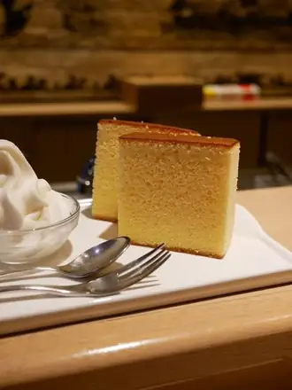
우유 카스텔라와 크림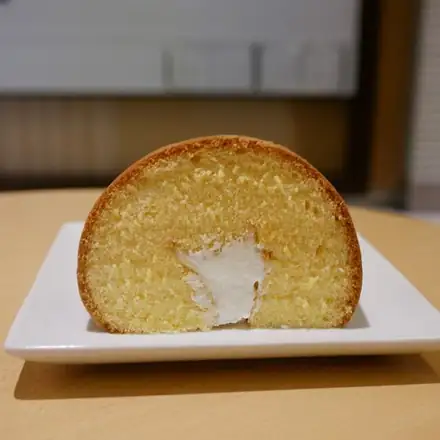
카스텔라 롤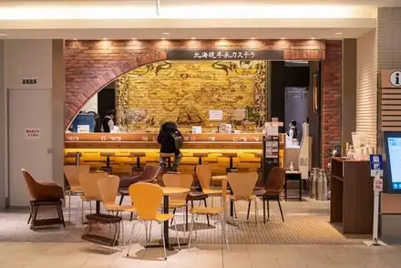
가게 안2026 · 11 · 02 MON — 11 · 06 FRI · 렌터카 4박 5일
처음 일정표(PDF) = 동재·현준·경일 회의에서 정한 18곳(11/2–11/4). 이걸 날씨·동선에 맞춰 다시 짰음.
11/1 일본 기상청 예보(11시)랑 시간별 예보로 다시 봤음. 굵은 테두리 칸 = 그날 가는 곳. 예보 신뢰도가 낮은 편(B–C)이라 전날 밤에 한 번 더 확인. 예보 바뀌면 일정 변경 대안 C안 보면 됨.
| 삿포로 | 오타루 | 남쪽도야·노보리베쓰·도마코마이 | 북쪽아사히카와·비에이·히가시카와 | 일정 | |
|---|---|---|---|---|---|
| 11/2 월 | 흐림 · 새벽까지 비·눈 → 낮 0mm | 흐림 · 새벽까지 비·눈 → 낮 0mm | 흐림 · 새벽까지 눈·비 → 낮 0mm | 흐림 · 아침저녁 곳곳 눈·비 | 도마코마이 · 시코쓰호 → 삿포로 |
| 11/3 화 | 흐림, 한때 비·눈 70% · 모델상 아침에만 약간 | 오전 약한 비·눈 → 오후 그침 · 70% | 흐리고 때때로 맑음 30% | 흐리고 때때로 눈·비 70% · 산에 눈 | 삿포로 → 오타루 오후 |
| 11/4 수 | 흐리고 때때로 비·눈 60% | 새벽 약한 비 → 낮 흐림 60% | 흐리고 때때로 맑음 30% · 0mm | 흐리고 때때로 눈·비 60% · 산에 눈 | 남쪽 |
| 11/5 목 | 흐림 40% · 밤(20시쯤~) 비 가능 | 흐림 40% · 밤 비 가능 | 흐리고 한때 비 50% | 흐림 40% · 낮 0mm · 눈 위로 갬 | 북쪽 → 저녁 삿포로 |
| 11/6 금 | 흐리고 한때 비 60% · 1–3mm | 흐리고 한때 비 60% | 흐리고 한때 비 50% · 바람 강함 | 흐리고 한때 비 60% | 공항 |
날씨: 일본 기상청 11/1 11시 발표 + 시간별 예보 모델(JMA·ECMWF, 11/1 13시 조회) 기준 · 신뢰도가 B–C라 출발 전날 밤에 한 번 더 확인
출발 전에 예약·준비할 것, 당일 아침에 확인할 것 순서대로 모았음. 체크 표시는 이 폰(브라우저)에만 저장됨. 전화번호는 길게 눌러서 복사. 대안으로 바꿀 때 필요한 예약은 맨 아래 접힌 칸에 따로 있음.
근거: Jnet 매장 정보(라쿠텐 트래블, 11/1) · 신치토세 공항 층별 안내도. 국제선 쪽에서 바로 태워 주는 곳이 있는지는 확인 못 함 — 렌터카에 도착 연락할 때 같이 물어보기.
フレックスセラ(후렛쿠스세라) N17-B · 札幌市東区北17条東2丁目(삿포로 시히가시쿠기타17조히가시2조메)4-32 · 체크인 16:00부터 / 체크아웃 11:00 · B 전용 무료 주차 1칸 · 지하철 北18条(기타18조)역 걸어서 약 11분찾아가는 길 PDF체크인·주차 PDF
공항 Jnet → 도마코마이 → 시코쓰호 → 찻카루 → 木多郎(기타로)(17:30 저녁) → 숙소 19:00. 마지막 구간 木多郎 澄川本店(기타로 스미카와 본점) → 숙소는 약 13km, 20–25분(五輪通(고린도오리)·真駒内(마코마나이) 쪽 길로 시내에 들어와 創成川通(소세이가와도오리)를 따라 북쪽으로).
Jnet 신치토세공항점 → 숙소 약 45km, 약 50분–1시간 10분(지도 계산 42분 + 여유, 저녁 퇴근길엔 더). 지도 계산 경로는 国道36号(고쿠도36고) → 月寒通(쓰키사무도오리) → 創成川通(소세이가와도오리)이고, 내비가 고속도로(道央道(도오 고속도로))로 안내할 수도 있음.
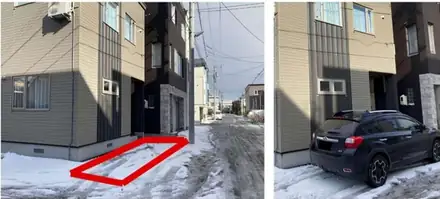
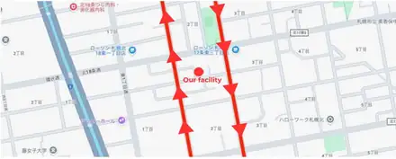
〒065-0017 札幌市東区北17条東2丁目(삿포로 시히가시쿠기타17조히가시2조메)4-32 フレックスセラ(후렛쿠스세라) N17-B
4-32, Kita 17-jo Higashi 2-chome, Higashi-ku, Sapporo · 맵코드 9582538*77
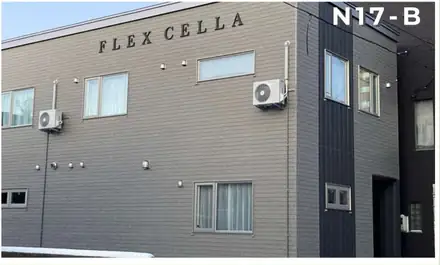
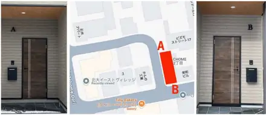
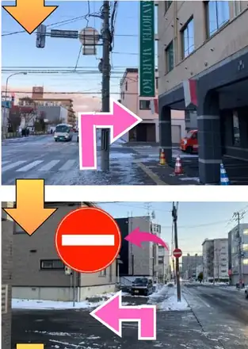
위 길을 거꾸로 걸어 北18条(기타18조)역 → 南北線(난보쿠선) 真駒内(마코마나이) 방면 → すすきの(스스키노) 약 8분. 돌아올 땐 麻生(아사부) 방면 타고 北18条(기타18조)에서 내림.
JR 新千歳空港(신치토세 공항)역 → 快速エアポート(가이소쿠에아포토) → JR 札幌(삿포로)역 → 초록색 표시를 따라 지하철 南北線(난보쿠선)으로 갈아타기 → 2번 승강장 麻生(아사부) 방면 → 北18条(기타18조)에서 내림.
06_드론_참고자료.본 일정대로 가면 필요 없음. 대안 맛집이나 일정 변경 대안(A–G)으로 바꿀 때만 그 가게·체험 골라서 예약하거나 전화로 영업 확인. 줄만 서면 되는 곳은 뺐음.
예약 필수예약 권장예약 가능전화 확인순번 접수
DAY 1 끼니마다 고른 대안 중 예약이 되는 곳 일정 보기
17:30 저녁 대안 (수프카레 대신 함바그)
전화 011-241-4189 · 저녁 예약은 17:30 타임만 가게 페이지
현금만, 24석. 11/2(첫째 월요일)는 영업일.
17:30 저녁 대안 (소바)
전화 011-213-8118 가게 페이지
현금만. 수·목 휴무라 11/2는 영업.
17:30 저녁 대안 (돈카쓰)
전화 011-215-0831 또는 인스타 @tonkatsu.kyo.hei로 문의 가게 페이지
예약을 받는지는 확인하지 못함 → 문의할 때 확인. 19석.
20:30 야식 대안 (징기스칸)
웹 예약 (2025/11부터) · 방법은 가게 페이지에서 확인 가게 페이지
20:30 야식 대안 (해산물 이자카야)
전화 예약 필수 · 번호는 가게 페이지에서 확인 가게 페이지
전화 연결이 매우 어렵다는 말이 있음. 15분 늦으면 취소. 자매점 別亭おやじ(벳테이 오야지)·いくら御殿(이쿠라 고텐)이 대안.
20:30 야식 대안 (테바사키 이자카야)
전화 011-271-8008 (미리 전화 권장) 가게 페이지
현금만. 23시 마감.
DAY 2 끼니마다 고른 대안 중 예약이 되는 곳 일정 보기
10:05 점심 대안 (오타루 슈쿠쓰 니신 구이)
전화 0134-22-8034로 겨울 영업시간 확인 가게 페이지
11/4는 휴무 공지. 공휴일 점심엔 대기 가능.
17:00 저녁 대안 (오타루 스시)
인터넷 예약 가능 · 카운터는 전화로만 050-5592-7755 가게 페이지
디너 2부제 17:00~ · 19:00~. 15분 넘게 늦으면 자동 취소. 수요일 휴무.
17:00 저녁 대안 (오타루 소바)
저녁은 공식 홈페이지 예약 폼 (1인 ¥500 좌석료) · 전화 0134-33-1212 가게 페이지
예약 없이 가면 16:30쯤 줄. 화·수 휴무.
17:00 저녁 대안 (영계 반마리 튀김)
전화 예약 가능 · 번호는 가게 페이지에서 확인 가게 페이지
예약 없이도 들어가기 쉬운 편.
21:00 야식 대안 (해산물 로바타)
타베로그 넷예약 (한국어 화면) 또는 전화 011-206-9009 가게 페이지
10/31 넷예약 21:00·3명 가능. 2시간 제한, 흡연 가능 가게라 비흡연석 요청.
21:00 야식 대안 (화덕 요리)
타베로그 넷예약 또는 전화 050-5596-1357 가게 페이지
10/31 넷예약 20:30·21:00 가능. 일요일 휴무.
21:00 야식 대안 (제철 요리)
타베로그·一休(잇큐) 넷예약 또는 전화 050-5869-6768 (16시부터) 가게 페이지
18석, 2시간 제한. 공휴일 영업 명시.
21:00 야식 대안 (술집)
타베로그 넷예약 또는 전화 011-522-9311 가게 페이지
10/31 넷예약 21:00 가능. 18석.
21:00 야식 대안 (시메파르페)
본점은 예약 불가 (011-200-0559) → 자매점 ななかま堂64(나나카마도 64) (남6 서4, 21:00까지 예약 가능 011-533-2777) 또는 Parfaiteria miL (남3 서5, 예약 가능 011-522-9432) 가게 페이지
공휴일 밤이라 본점은 15–45분 대기 예상.
DAY 3 남쪽 루프 끼니마다 고른 대안 중 예약이 되는 곳 일정 보기
11:05 점심 대안 (회전초밥)
EPARK 순번 접수 가능 (자리 예약은 불가) · 방법은 가게 페이지에서 확인 가게 페이지
11월은 매주 목요일 휴무(본점). 무로란점은 수요일 휴무라 혼동 주의.
13:05 디저트 대안 (목장 카페)
예약 가능 · 방법은 가게 페이지에서 확인 가게 페이지
13:05 디저트 대안 (윈저호텔 라운지)
TableCheck 예약 가능 · 방법은 가게 페이지에서 확인 가게 페이지
18:35 저녁 대안 (쓰촨 코스, 도마코마이)
완전예약제 · 전날(11/3) 22시까지 전화 또는 인스타 DM @akinobu4900 · 번호는 가게 페이지에서 확인 가게 페이지
코스만. 11/4 영업은 추정이라 예약 때 확정. 주차 없음(코인파킹).
18:35 저녁 대안 (스시 오마카세, 치토세)
완전예약제 · 방법은 가게 페이지에서 확인 가게 페이지
1부 18:00 · 2부 20:30. 일요일 외 주 1일 비공개 휴무 → 예약 때 확인. 전날·당일 취소 100%.
18:35 저녁 대안 (무로란 해산물 이자카야)
예약 권장 · 방법은 가게 페이지에서 확인 가게 페이지
주차 없음. 일요일 휴무.
18:35 저녁 대안 (무로란 야키토리)
3명부터 예약 가능 · 방법은 가게 페이지에서 확인 가게 페이지
주차 15대.
DAY 4 점심·저녁 대안 중 예약이 되는 곳 일정 보기
11:00 점심 대안 (아사히카와 닭 요리)
전화로만 0166-36-1146 (대행 예약 불가) · 11:00 착석 + 메뉴 미리 주문 가게 페이지
현금만. 화요일·첫째·셋째 월요일 휴무.
11:00 점심 대안 (카레)
전날 전화 0166-25-1503로 영업 확인 가게 페이지
부정기 휴무 가능. 14석, 현금만.
20:00 저녁 대안 (스시)
전화 또는 방문만 011-520-3213 (일본어) 가게 페이지
대행·호텔 컨시어지 예약은 거절될 수 있음. 일요일·공휴일 휴무.
20:00 저녁 대안 (스시, 8석)
전화 예약 (타베로그 연결 050-5589-4336 · 가게 011-513-3720, 출처마다 번호가 다름) 가게 페이지
월·일·공휴일 휴무.
자유시간 추천 20곳(전망대·미술관·온천 등)은 예약 없이 가도 돼서 뺐음. 예약 필요한 건 대안 일정 속 투어 두 개. 일정 보기
대안 E · 11/3 12:40 닛카 요이치 증류소
제조 구역 무료 가이드 투어(약 60분, 일본어만, 시음 3종)는 전화로 빈자리 문의 0135-23-3131 (9:15–16:15, 일본어)
온라인 예약 페이지가 10/30 기준 접속 불가. 박물관·숍은 예약 없이 입장(마지막 15:30). 13:00 회차를 잡으면 오타루 도착이 15시쯤으로 늦어짐.
대안 G · 11/5 11:20 삿포로 맥주박물관
가이드 투어 ¥2,000 (입장+2잔, 약 55분, 일본어만) · 웹 예약 당일 9:30까지, 첫 회 11:30 · 방법은 공식 사이트에서 확인
대안 G는 한국어 음성 가이드가 있는 자율 관람(¥1,000, 예약 없음)을 추천. 「黒ラベル(구로 라벨) THE PERFECT TOUR」는 11/26만.
메인 시라카바·톤타는 예약 불가(줄 서기). 대안으로 바꿀 때만 필요. 일정 보기
12:15 점심 대안 (징기스칸)
점심 예약 가능 (조건은 방문 전 확인) · 방법은 가게 페이지에서 확인 가게 페이지
공휴일 11:00–21:00. 현금만.
12:15 점심 대안 (소바)
전화 0155-62-7970 · 공휴일엔 전날(11/2)까지 가게 페이지
12:30쯤 품절된 사례가 있어 전날 전화 예약이 거의 필수. 20석, 현금만.
16:25 이른 저녁 대안 (원조 부타동)
전화 0155-22-1974로 11/3 영업 확인 (예약은 불가) 가게 페이지
첫째 화요일이지만 공휴일이라 영업(규칙상 11/4 휴무).
16:25 이른 저녁 대안 (덴푸라·부타동)
예약 가능 · 방법은 가게 페이지에서 확인 가게 페이지
부정기 휴무라 방문 전 확인. 저녁 17:00부터라 귀가가 늦어져 야식 グルマンズいとう(구루만즈 이토) 예약을 21:30 이후로 미루는 게 안전.
점심 あさひ食堂(아사히 식당)은 예약 없이 가고, 이른 저녁 징기스칸은 예약해 두면 줄 걱정 없음. 일정 보기
11:50 점심 (가미카와 라멘)
영업 확인 전화 01658-2-1738 (예약 없이 입장) 가게 페이지
월요일 휴무. 11월 임시휴무 공지는 찾지 못함.
11:50 점심 대안 (이탈리안 코스)
전화 01658-2-3921 · 완전 예약제 (2인 이상, 전날까지) 가게 페이지
11월 영업도 전화로 확인. 11:30 예약이면 숙소를 8:40에 나와야 함. 코스 1시간 30분 이상.
11:50 점심 대안 (로프웨이 옆 양식)
당일 영업 확인 01658-5-3361 (예약 불가) 가게 페이지
정비 등으로 임시 휴업할 수 있음(공식).
16:05 이른 저녁 (생램 징기스칸)
전화 0166-24-2424 또는 공식 웹 · 16:00–16:15로 가게 페이지
예약 없으면 번호표 받고 대기. 20시 스시가 있으니 가볍게.
날짜가 바뀌어서 본 일정 예약도 같이 옮겨야 함 (びび(비비) 11/4→11/3, 오타루 저녁·야식은 수요일 휴무 가게 바꿈). 일정 보기
11/3 18:35 저녁 (시라오이규) — 본 일정 11/4 예약을 11/3으로
전화 예약 (번호는 공식 사이트) · 공휴일이라 전화 예약 필수 가게 페이지
L.O. 19:30. 본 일정대로 11/4에 잡아 둔 예약은 날짜 변경.
11/3 10:45 점심 대안 (성게덮밥, 무로란)
타베로그 넷예약 또는 전화 0143-84-4577 가게 페이지
오픈 전 5–6팀 줄. 공휴일 규칙은 공지 없음 → 방문 전 확인.
11/3 12:50 디저트 대안 (목장 카페)
예약 가능 · 방법은 가게 페이지에서 확인 가게 페이지
11/3 12:50 디저트 대안 (윈저호텔 라운지)
TableCheck 예약 가능 · 방법은 가게 페이지에서 확인 가게 페이지
11/3 18:35 저녁 대안 (쓰촨 코스)
완전예약제 · 전날(11/2) 22시까지 전화 또는 인스타 DM @akinobu4900 가게 페이지
숙소까지 약 55분이라 21시 넘어 도착.
11/3 18:35 저녁 대안 (스시 오마카세)
완전예약제 · 방법은 가게 페이지에서 확인 가게 페이지
11/3 영업은 예약 때 확인(주 1일 비공개 휴무). 1인 ¥20,000 이상.
11/3 18:35 저녁 대안 (해산물 이자카야)
전화 0143-45-2661 · 공휴일 영업부터 확인 가게 페이지
공휴일 영업이 확인 안 됨.
11/3 18:35 저녁 대안 (무로란 야키토리)
3명부터 예약 가능 · 방법은 가게 페이지에서 확인 가게 페이지
공휴일은 22:00까지.
11/3 21:00 야식 대안 (서서 먹는 스시)
전화 011-252-9888 또는 타베로그 넷예약 가게 페이지
좌석 예약 시 1인 8관 + 1드링크 조건. 공휴일 23:00까지.
11/3 21:00 야식 대안 (와규 야키니쿠) — 본 일정 예약 그대로
타베로그 넷예약 또는 전화 011-596-9029 (본 일정 11/3 21:00 예약) 가게 페이지
이 대안에선 저녁 와규와 겹쳐 뺐음. 꼭 가려면 본 일정 예약을 그대로 두고 저녁을 味の大王(아지노다이오) 카레라멘으로 가볍게.
11/4 14:20 디저트 (치즈 수플레)
평일이라 2F 카페 좌석 예약 가능 → 14:20 전후로 · 방법은 가게 페이지에서 확인 가게 페이지
공휴일(11/3)엔 번호표만.
11/4 14:20 디저트 대안 (르타오 본점 2층 찻집)
평일(11/4)은 미리 예약 가능 (당일 예약 불가) · 방법은 가게 페이지에서 확인 가게 페이지
7세 이상 1인 1주문.
11/4 17:00 저녁 (오타루 스시·해산물) — 天ぷら梵(덴푸라 소요기) 대신
전화 0134-22-0456 가게 페이지
梵(소요기)은 수요일 휴무라 이 가게로 바꿈. 16:00 오픈, L.O. 20:15.
11/4 17:00 저녁 대안 (스시 카운터 코스)
2부제 예약만 · 타베로그 넷예약 또는 전화 0134-23-1256 가게 페이지
17:30 1부, 1인 ¥13,200~. 11월 휴무 5·9·17·24·30일.
11/4 17:00 저녁 대안 (일본주 이자카야)
작은 가게라 예약 권장 · 타베로그 예약 가능 가게 페이지
일·월 휴무.
11/4 17:00 저녁 대안 (창고 비어홀)
예약 가능 · 방법은 가게 페이지에서 확인 가게 페이지
대개 예약 없이 바로 입장.
11/4 17:00 저녁 대안 (영계 반마리 튀김)
전화 예약 가능 · 번호는 가게 페이지에서 확인 가게 페이지
예약 없이도 가능.
11/4 21:00 야식 (해산물 로바타) — グルマンズいとう(구루만즈 이토) 대신
타베로그 넷예약 21:00 · 3명 또는 전화 011-206-9009 가게 페이지
グルマンズいとう(구루만즈 이토)는 수요일 휴무. 빈자리는 예약 때 확인.
11/4 21:00 야식 대안 (화덕 요리)
타베로그 넷예약 또는 전화 050-5596-1357 가게 페이지
11/4 21:00 야식 대안 (제철 요리)
타베로그·一休(잇큐) 넷예약 또는 전화 050-5869-6768 가게 페이지
11/4 21:00 야식 대안 (술집)
타베로그 넷예약 또는 전화 011-522-9311 가게 페이지
11/4 21:00 야식 대안 (시메파르페)
본점은 예약 불가 → 자매점 ななかま堂64(나나카마도 64) (011-533-2777, 21:00까지 예약) 또는 Parfaiteria miL (011-522-9432) 가게 페이지
프렌치 런치는 예약 추천, 나머지는 전날 전화로 영업만 확인하면 됨. 일정 보기
11:40 빵 (장작 화덕 크루아상)
전날 전화 0136-45-2773로 빵 따로 빼 두기(取り置き)가 되는지 문의 가게 페이지
타베로그엔 "예약 가능"으로 나옴. 11:40 도착이면 크루아상 품절 가능. 현금만.
11:40 빵 대안 (농장 화덕 빵)
부정기 휴무라 방문 전 전화 0136-44-1095 가게 페이지
현금만.
12:00 점심 (프렌치 런치 코스)
전화 0136-48-2100 (아직 예약 안 함) 가게 페이지
입점 11:30–13:00. 올해 영업 11/8까지, 11/5는 공식 캘린더 영업일. 코스 약 1시간 30분.
12:00 점심 대안 (수타 소바)
11월 휴업 여부 전화 0136-23-0603 (예약 불가) 가게 페이지
11:00 오픈 직후 금방 만석.
13:50 디저트 대안 (젤라토)
전날 전화 0136-21-2355로 11/5(목) 영업 확인 가게 페이지
구글은 목요일 휴무, 공식 캘린더엔 휴무 표시 없음. 확인된 경우에만 넣기.
증류소 가이드 투어는 위 "볼거리·체험"에 있음. 일정 보기
10:05 점심 대안 (슈쿠쓰 니신 구이)
겨울 영업시간 전화 0134-22-8034 가게 페이지
10:00 오픈에 맞춰 9:10 출발.
10:05 점심 대안 (시장 식당 카이센동)
공휴일 영업시간 전화 확인 (예약 불가) · 번호는 가게 페이지에서 확인 가게 페이지
화요일은 영업일(7:00–13:00). 현금만.
13:30 간식 대안 (와이너리 레스토랑)
레스토랑 전화 예약 0135-48-6163 가게 페이지
요리 L.O. 14:00이라 13:30 전 도착. 운전자는 무알코올.
13:30 간식 대안 (우니 덮밥)
전화 0135-48-5652 · 11/3(화) 영업도 같이 확인 가게 페이지
타베로그는 화요일 휴무, 구글은 영업으로 엇갈림. 덮밥 한 그릇 ¥5,000 이상.
카페·수프카레 메인은 예약 불가. 저녁 바꿀 때만 필요. 일정 보기
저녁 鮨処いちい(스시도코로 이치이) 20:00은 본 일정 예약 그대로. 맥주박물관 가이드 투어는 위 "볼거리·체험"에 있음. 일정 보기
처음 PDF 일정표(11/2–11/4, 18곳)가 지금 어디로 갔는지 정리했음. 위는 요약, "날짜별 변경점 보기" 펼치면 원래 PDF랑 지금 일정 나란히 나옴. 자세한 시간표는 아래 "날짜별 시간표"에 있음.
여기는 뭐가 어디로 옮겨졌는지만 보는 요약. 자세한 시간표는 아래 날짜별 시간표에 있음.
왜점심에 카이센동을 메인으로 넣고 숙소 가는 길에 외곽 한 곳(시코쓰호)을 더했습니다. 저녁은 같은 수프카레 중 타베로그 점수가 가장 높은 기타로(3.80)로 바꾸고 gop는 대안 1순위로 뒀습니다. 원래 11/4에 있던 징기스칸과 카페가 이날로 왔습니다.
왜오타루는 오전에 비 예보가 있어서, 오전은 원래 11/4에 있던 사이미·두대불(삿포로 남쪽)로 채우고 오후에 오타루로 갑니다. 아오츠카는 오타루 서쪽 끝이라 오전 일정과 함께 갈 수 없어 점심 대안으로 돌렸습니다.
왜남쪽(다테·도야·노보리베쓰)이 5일 중 비 걱정이 가장 적은 날(11/1 기상청 강수확률 30%, 신뢰도 B)이라 이날을 외곽 드라이브 날로 정했습니다. 원래 이날의 삿포로 시내 일정은 11/2·11/3로 나눠 옮겼고, 이날에서 실제로 빠진 곳은 미술관 하나입니다.
PDF에 없던 날
원래 일정표는 11/4까지
왜PDF는 11/4까지라 이날은 새로 짰습니다. 북쪽은 오전에 맑고 밤에 비가 와서, 낮에 설경을 보고 해 질 무렵 돌아와 저녁에 스시를 먹습니다.
PDF에 없던 날
원래 일정표는 11/4까지
왜12:15 비행기라 오전에는 반납과 출국 수속만 넣었습니다.
| 장소 | 상태 | 내용 | 살리려면 | |
|---|---|---|---|---|
| #16·17 | 공항 카스텔라 · 요츠바 | 일정 유지 | 11/2 도착 직후 | — |
| #23 | 찻카루 (킷사텐) | 일정 유지 | 11/2 16:45 커피 | — |
| #5 | 시로쿠마 (징기스칸) | 일정 유지 | 11/2 야식 20:30 | — |
| #3 | 멘야 사이미 (미소라멘) | 일정 유지 | 11/3 점심 | — |
| #12 | 두대불 | 일정 유지 | 11/3 낮 | — |
| #8 | 르타오 파토스 | 일정 유지 | 11/3 디저트 | — |
| #20 | 덴푸라 소요기 | 일정 유지 | 11/3 저녁 | — |
| #21 | gop (수프카레) | 대안으로 | 11/2 저녁 대안 1순위 (메인은 같은 수프카레 중 타베로그 최고점인 기타로) | 기타로 대신 (찻카루에서 5분) |
| #13 | 스아게+ (수프카레) | 대안으로 | 11/2 저녁 대안 2순위 | 기타로 대신 |
| #9·22 | 랑방 · 자메이카 (커피) | 대안으로 | 11/2 카페 대안 | 찻카루 대신 |
| #15 | 사에라 (샌드위치) | 대안으로 | 11/2 카페 대안 (18:00 마감) | 찻카루 대신 |
| #14 | 이타다키마스 (징기스칸) | 대안으로 | 11/2 야식 대안 | 시로쿠마 대신 |
| #2 | 쥰렌 (미소라멘) | 대안으로 | 11/3 점심 대안 1순위 | 사이미 줄이 너무 길면 |
| #7 | 아오츠카 식당 (니신 구이) | 대안으로 | 11/3 점심 대안 (원래 계획처럼 오전부터 오타루로) | 사이미 대신 → 두대불은 빠짐 |
| #4 | 쿠키젠 (스시) | 빠짐 | 월·화 정기휴무 → 오타루 가는 11/3(화) 휴무 | — |
| #11 | 삿포로 예술의 숲 미술관 | 빠짐 | 시간 부족 (야외 미술관은 11/4부터 겨울 휴관) | 두대불 뒤 30–40분 가능하지만 오타루 자유시간이 줄어듦 |
날짜 누르면 펼쳐짐. 끼니마다 메인 맛집 나오고, 대안은 "대안 N곳 보기" 누르면 나옴. 사진·지도·길안내는 아래 상세 일정에 있음.
DAY 1–5 날짜별 시간표 · 사진 · 지도 · 길안내
1DAY 1 · 11/2 (월)
날씨 치토세·도마코마이·시코쓰호 흐림 2–9℃ · 새벽까지 비나 눈, 6시 이후 강수확률 10%라 낮 비 0mm · 삿포로 흐림 2–9℃ · 일몰 16:26 · 저녁 국도 453은 5℃ 안팎이라 결빙 가능성은 낮지만(추정) 젖은 노면·사슴 주의
이렇게 짠 이유 공항에서 30분 거리 도마코마이 항구의 최상급 카이센동으로 첫 끼를 먹고, 시코쓰호를 산책한 뒤 국도 453으로 삿포로에 들어갑니다. 저녁은 삿포로 수프카레 중 타베로그 최고점(3.80)인 기타로로 바꿨고, 처음 계획의 gop·스아게+는 저녁 대안 1·2순위로 남겼습니다. 공항 디저트·찻카루·시로쿠마는 그대로입니다. 비 소식 없음.
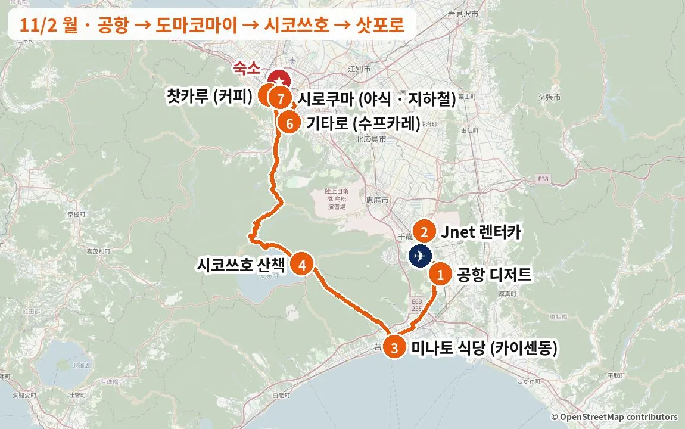
이 날을 바꾸고 싶다면 이 날 바꾸는 대안 1개 있음. 누르면 바로 감.
이 날 지나는 동네거리·동네 분위기 사진 · 찍은 계절 같이 적었음
도마코마이 항구
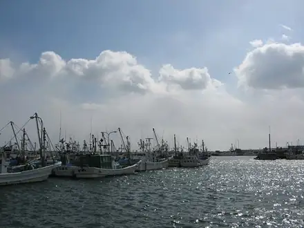
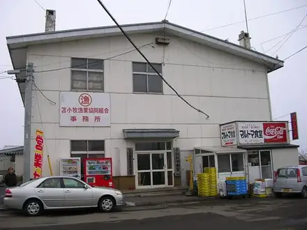
스스키노·다누키코지
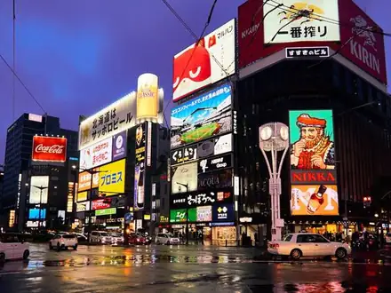
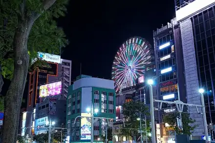
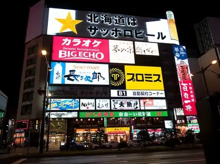
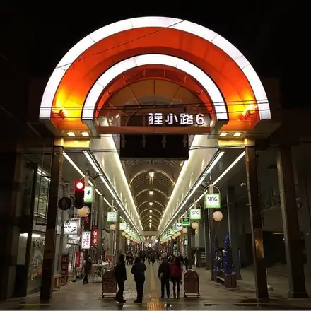
LJ203 신치토세 국제선 도착
입국·수하물 찾고 나오면 약 11:50
1도착 디저트: 우유 카스텔라 · 소프트
Jnet 예약은 12:00 → 12:30쯤 가겠다고 미리 연락

우유 카스텔라와 크림
카스텔라 롤
가게 안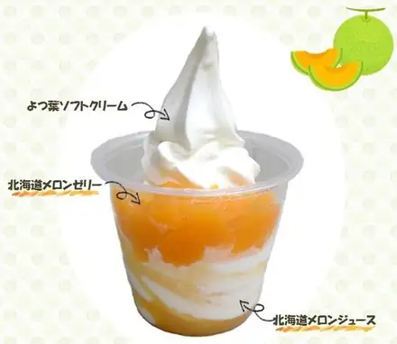
가게 공식 사진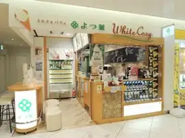
가게 공식 사진카드마다 '이 가게로 바꾸면' 줄에 일정 어떻게 달라지는지 적어 놨음.
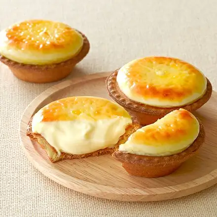
가게 공식 사진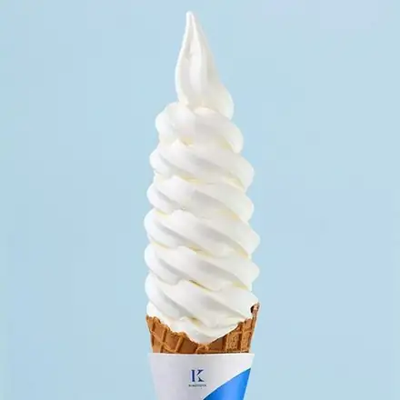
가게 공식 사진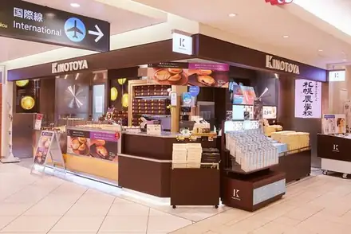
가게 공식 사진이 가게로 바꾸면요츠바와 같은 국내선 2층이라 동선 그대로 → 12:30 렌터카 픽업 변동 없음.
신치토세공항 소프트·아이스크림 총선거 2026에서 1위를 차지하며 7년 연속 1위에 오른 소프트입니다. 크고 매끄러우며 우유 맛이 진하다는 평이 많고, 삿포로 양과자점 기노토야의 공항 카페라 케이크도 함께 고를 수 있습니다. 크기가 커서 끝까지 먹으면 질린다는 의견이 있고, 10분 안팎 기다려야 합니다.
예약 불가. 요츠바와 같은 2층이라 동선이 같음.
도마코마이 항구로 (약 30분)
3점심: 카이센동 (해산물덮밥)
현금 선불 · 양이 많으니 밥은 적게 · 13시 넘으면 일부 품절
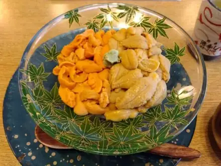
해산물덮밥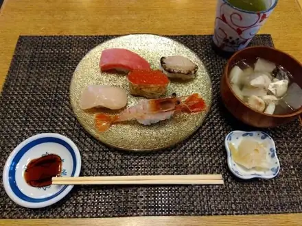
오마카세덮밥 10종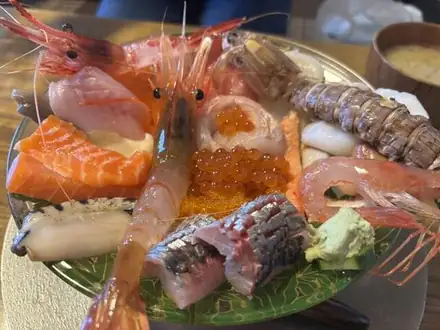
성게덮밥도마코마이·무로란·도야 권역 타베로그에서 카이센동 전문 가게 중 1위(3.63)이고, 구글도 리뷰 1,000건 넘게 4.4로 마루토마(3.8)보다 확실히 높습니다. 생선가게 경력 20년이 넘는 주인이 직접 고른 재료 10–11종을 큼직하게 썰어 수북이 올리고, 리뷰에서는 이쿠라와 게살이 특히 자주 칭찬받습니다. "人生で一番美味しい海鮮丼かもしれない(인생에서 제일 맛있는 카이센동일지도)"라는 재방문 리뷰(2026/8)도 있습니다. 시장 안에 있지만 관광객용 가게와 달리 현지 출장객과 단골이 찾는 곳이고, 수요일 휴무라 이번 여행에선 첫날만 갈 수 있습니다. "양이 너무 많다", "몇 년 전보다 비싸졌다"는 불만은 있습니다.
예약 불가. 줄 서는 동안 밖 메뉴를 보고 현금 선불 주문 (카드·QR 불가). 13시 넘으면 일부 품절 → 12:30 차 받을 때 ☎0144-34-1777로 남은 메뉴 확인. 밥은 적게 달라고 하기. 시장 주차장.
카드마다 '이 가게로 바꾸면' 줄에 일정 어떻게 달라지는지 적어 놨음.
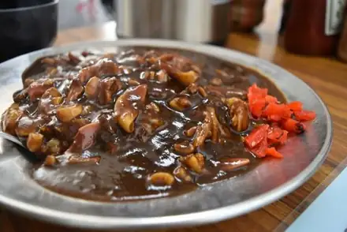
홋키 카레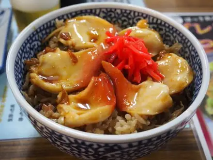
홋키 조개밥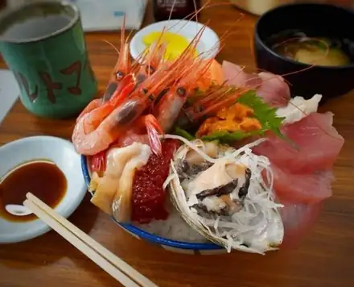
해산물덮밥이 가게로 바꾸면미나토 식당에서 차로 3분이라 이동 시간 같음 → 일정 그대로. 단 14:00 마감이라 13:30 전에 도착해야 함.
일본 최대 홋키조개 산지 도마코마이 어시장의 대표 식당으로, 리뷰 수가 압도적입니다. 큼직한 홋키조개가 들어간 매콤한 카레가 명물이라 카이센동과 다른 걸 먹고 싶을 때 좋습니다. 평점은 みなと食堂(미나토 식당)보다 낮고 낮 시간 줄이 깁니다.
낮엔 40분–1시간 대기. 14시 마감.
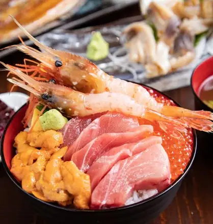
가게 공식 사진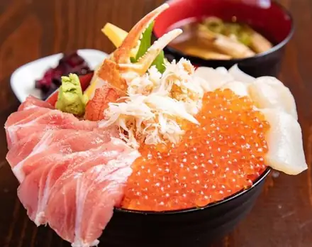
가게 공식 사진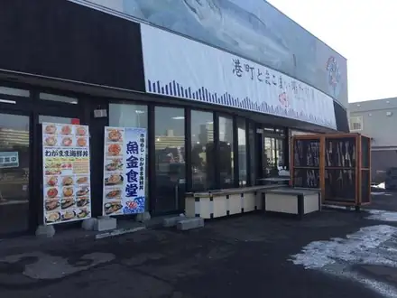
가게 공식 사진이 가게로 바꾸면마루토마 옆 블록이라 이동 시간 같음 (15:00 마감). 평소 20–30분 줄 → 기다린 만큼 시코쓰호 자유시간이 줄어듦.
"네타가 많아서 밥을 곱빼기로 해야 균형이 맞는다", "2,200엔이면 절대 이득"이라는 리뷰가 이어지는 도마코마이 정통 카이센동 집입니다. 쫄깃한 홋키조개 평이 좋고 카드 결제가 됩니다. 평일 낮에도 70분 대기 사례가 있어 시간 여유가 필요합니다.
예약 불가, 입구 셀프 계산. 카드·전자화폐 가능. 공식 사이트 주소는 현재 스팸으로 연결되니 열지 마세요.
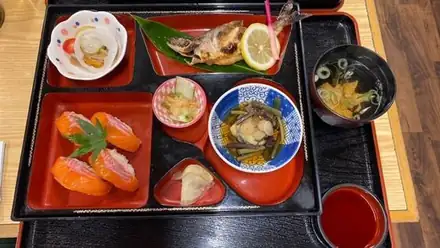
히메마스 구이 세트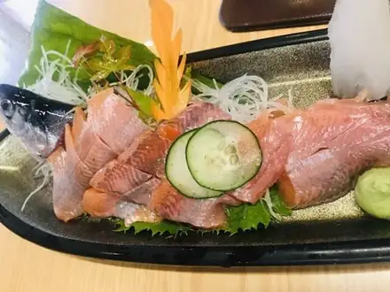
히메마스 회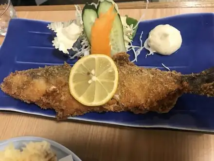
치프(히메마스) 튀김이 가게로 바꾸면도마코마이를 건너뛰고 공항에서 시코쓰호로 바로 (약 30분) → 13:20쯤 호숫가에서 점심, 시코쓰호 자유시간 50분 → 약 1시간 20분으로 늘어남.
시코쓰호에서만 잡히는 히메마스(현지명 "치프")를 회와 초밥으로 먹을 수 있는 호반의 대표 가게입니다. 2026/9 리뷰들이 치프스시와 사시미가 "입에서 녹는다"고 평했고, 10월 평일 호반 가게 대부분이 문을 닫은 날에도 영업했다는 후기가 있습니다. 공항에서 40분이라 도착 첫 끼로 홋카이도다운 호수 생선을 맛보기 좋습니다. 올해는 히메마스가 적게 잡혀 품절될 수 있습니다.
예약 불가. 온천 주차장 ¥500. 이날 저녁·야식이 더 있으니 3명이 나눠 먹을 만큼만 (사시미 + 치프스시).
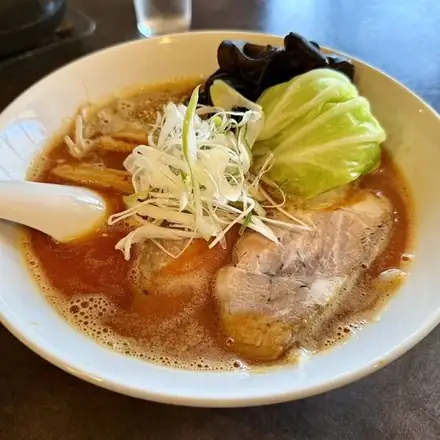
라멘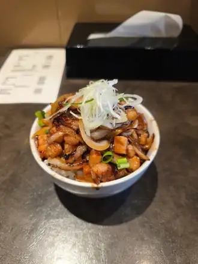
덮밥이 가게로 바꾸면공항에서 차로 6분(치토세)이라 픽업 직후 줄 서기 (대기 30–40분 후기) → 도마코마이를 건너뛰어 이동이 약 15분 줄고, 남는 시간은 시코쓰호 자유시간에 더함. 15:00 마감·국물 떨어지면 끝.
ラーメン HOKKAIDO 百名店(라멘 HOKKAIDO 백명점) 2025
치토세 타베로그 라멘 1위급(3.70)으로 라멘 백명점에 뽑혔습니다. 2026/10 리뷰가 "지고의 쇼유라멘"이라 평했고, 두툼하지만 부드러운 차슈와 어패류 베이스의 진한 국물이 칭찬받습니다. 공항에서 시코쓰호로 가는 길목이라 호수에서 간식만 먹는다면 여기서 점심을 먹는 순서도 가능합니다.
예약 불가, 주차 9대. 평일 13시 전 대기 약 10분.
시코쓰호로 (약 35분, 국도 276)
4자유시간 50분: 시코쓰호 산책 · 山線鉄橋(야마센 철교) · 비지터센터
유람선은 일정에서 뺌
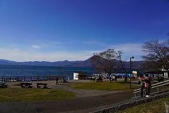
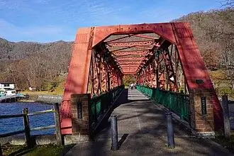
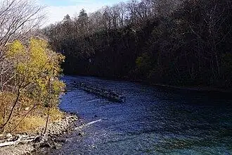
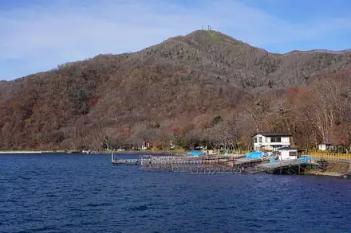
실제 장소 사진 · 찍은 계절 같이 적었음
요금·시간은 10/31 공식 사이트·구글 지도 기준. "일정 조정" 있는 곳은 시간 더 걸려서 일정 바꿔야 함.
이번엔 못 가는 곳: 苔の洞門(고케노도몬)(견학 중지) · 丸駒温泉(마루코마 온천) 당일 입욕(금–일만이라 11/2 월요일 불가) · 호수 유람선(일정에서 뺌)
국도 453 → 삿포로 (약 1시간 15분)
해 지기 전(16:20) 산길 통과. 그늘진 커브 블랙아이스 주의
5킷사텐 커피 (가볍게)
월요일 18:30까지. 저녁 수프카레가 바로 뒤라 커피·디저트만 하고 17:10에 출발
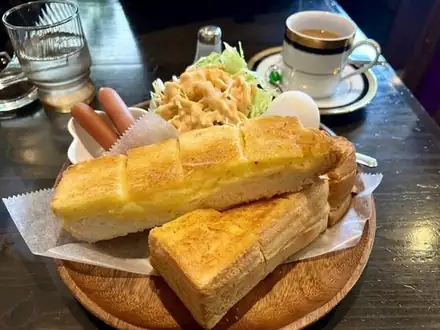
모닝 B세트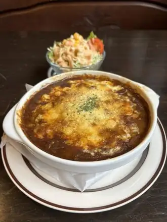
카레 도리아와 샐러드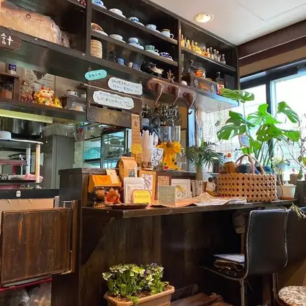
가게 안카드마다 '이 가게로 바꾸면' 줄에 일정 어떻게 달라지는지 적어 놨음.
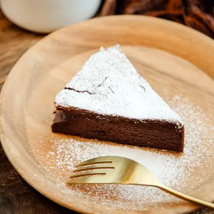
가게 공식 사진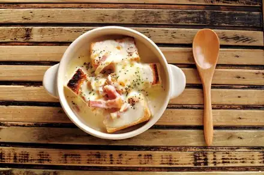
가게 공식 사진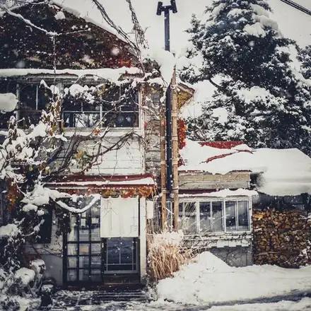
가게 공식 사진이 가게로 바꾸면찻카루보다 서쪽(마루야마)이지만 기타로까지 이동 시간은 비슷 → 17:10 출발 그대로. 19:00까지 영업.
カフェ百名店(카페 백명점) 2021·2022·2025
고민가를 개조한 목조 2층 공간과 진한 커피 향 덕분에 삿포로 카페 문화의 상징으로 꼽히는 곳입니다. "창밖 녹음을 보며 쉬기 좋다", "치즈케이크와 깊게 볶은 커피의 궁합"이 자주 나오는 칭찬이고, 11/1부터 크리스마스 메뉴가 시작됩니다. 좌석이 적어 대기가 생기고 계단이 좁습니다.
주차 10대 (공용). 찻카루와 같은 서쪽이라 동선이 가장 좋음.
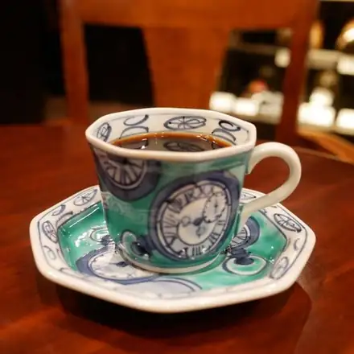
커피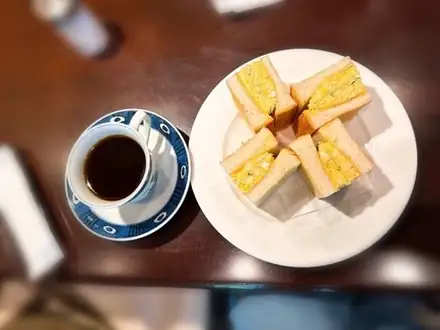
달걀 샌드위치와 커피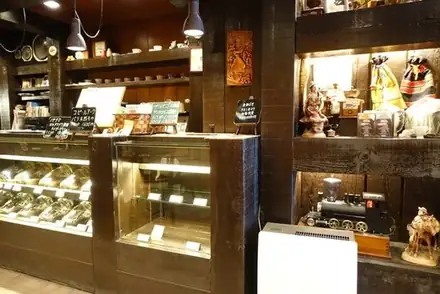
가게 안이 가게로 바꾸면다누키코지(남3 서5)라 기타로까지 오히려 몇 분 가까움 → 일정 그대로. L.O. 17:30, 주변 유료주차.
1977년 창업한 자가배전 융(ネル) 드립 전문점으로, 로스팅 정도를 고를 수 있고 희소 원두를 늘 갖춰 둡니다. 리뷰에는 "깊은데 무겁지 않다", "스트레이트 커피를 마시는 게 정답" 같은 평이 많고, 옛 킷사텐 분위기를 좋아하는 사람들이 찾습니다. 원래 일정표에 있던 곳이고 스아게+에서 걸어서 3분입니다.
예약 불가, 주차장 없음. 인스타 @coffeeshopranban
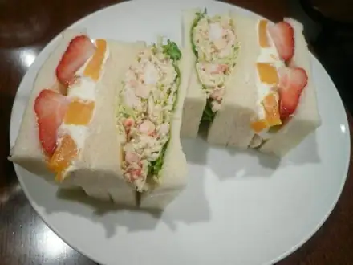
킹크랩과 과일 샌드위치이 가게로 바꾸면오도리 니시2 지하 3층 → 이동 시간 같음. 음식 L.O. 17:00이라 샌드위치를 먹으려면 시코쓰호를 15분 일찍(15:15) 출발.
サンドイッチ百名店(샌드위치 백명점) 선정 (연도 미확인)
지하 3층의 쇼와풍 킷사텐으로, 두 가지를 골라 반씩 먹는 콤비 샌드위치가 명물입니다. 대게 샌드와 새우까스 샌드가 대표이고 타베로그 3.67로 카페 후보 중 점수가 높습니다. 커피집이라기보다 "출출할 때 가는 전설의 샌드위치 집"에 가깝습니다. 원래 일정표에 있던 곳입니다.
음식 주문은 17시까지.
이 가게로 바꾸면남3 서5 빌딩 4층 재즈 킷사 → 이동 시간 같음, 일정 그대로. 18시 이후 입장료 ¥500이지만 17:10 출발이면 해당 없음. 실내 흡연 후기 있음.
1961년 창업한 재즈 킷사로, JBL 파라곤 스피커로 하드밥을 크게 틀어 주는 "음악을 들으러 가는 곳"입니다. 낮에는 진한 커피, 밤에는 위스키 바가 됩니다. 맛집이라기보다 삿포로 문화 체험에 가깝고, 원래 일정표에 있던 곳입니다.
전 좌석 흡연 가능, 카운터 약 20석. 랑방과 같은 블록.
스미카와 기타로로 (약 20분)
6저녁: 수프카레 (타베로그 3.80 · 1985년 창업)
17:30 오픈 · 예약 불가 · 재료가 떨어지면 끝 → 오픈 시각에 도착
カレー(카레) 百名店(백명점) 2019·2020·2023·2024·2026 · 삿포로 수프카레 중 타베로그 최고점
1985년에 문을 연 삿포로 수프카레 노포로, 지금은 흔한 "튀긴 채소 토핑"을 처음 만든 집으로 알려져 있습니다. 타베로그 3.80으로 삿포로 수프카레 중 가장 높고, 카레 百名店(백명점)에 다섯 번 뽑혔으며 구글도 4.4(리뷰 348건)입니다. 리뷰는 토마토 산미가 도는 국물, 고소하게 튀긴 채소, 굴 수프카레를 가장 많이 칭찬합니다. 21석짜리 작은 가게라 "저녁 오픈 5분 전에 이미 5명이 줄 서 있었다", "18:15에 치킨이 품절됐다"는 후기가 있습니다.
예약 불가 · 현금만. 재료가 떨어지면 일찍 닫으니 17:30 오픈에 맞춰 도착. 가게 앞 주차 4대. 매운맛은 단계 선택 (리뷰는 3단계 추천).
카드마다 '이 가게로 바꾸면' 줄에 일정 어떻게 달라지는지 적어 놨음.
이 가게로 바꾸면찻카루에서 차로 5분이라 17:15쯤 도착, 숙소도 더 가까움 → 숙소 체크인이 약 20분 빨라짐 (18:40쯤). 쉬는 시간 없이 21:30까지.
스프가 떨어지면 일찍 닫음 (X @gopnoanagura). 주차 2대뿐.
이 가게로 바꾸면스스키노(남4 서5), 찻카루에서 약 10분 → 숙소 체크인 10–15분 빨라짐. 쉬는 시간 없이 영업 (L.O. 19:30), 주변 유료주차.
カレー百名店(카레 백명점) 2024·2026
꼬치에 꽂은 닭다리, 바삭하게 튀긴 홋카이도산 채소, 붉은 쌀을 섞은 밥이 상징인 정통 삿포로 수프카레입니다. 일본 리뷰에서 "튀긴 채소가 달다", "징기스칸 토핑이 절품"이라는 평이 많고 구글 리뷰가 6천 건이 넘습니다. 개점 전과 저녁엔 최대 45분 줄을 서고, "치킨이 좀 더 졸여졌으면" 하는 의견도 있습니다.
예약 불가. 현금·PayPay만 (카드 불가). 평일 14시 전후가 한산. 바로 옆 Suage2도 영업.
이 가게로 바꾸면오도리역 근처, 17:30 오픈 전 15–20분부터 대기 명단에 이름 적기 → 찻카루를 17:00에 나와야 함. 예약 손님이 먼저라 1차에 못 들면 약 45분 대기 → 숙소 19:30쯤.
洋食(양식) 百名店(백명점) 2023·2025 · 일본 햄버그 협회 GP 금상
삿포로 그랜드호텔 프렌치 셰프 출신이 2008년에 연 햄버그 전문점으로, 洋食(양식) 百名店(백명점)에 두 번 뽑혔습니다. 도카치 아카우시·메무로 돼지·사쿠라히메 닭을 섞은 햄버그에 홋카이도 채소 샐러드와 ゆめぴりか(유메피리카) 밥이 꾸준히 칭찬받습니다. 수프카레 대신 홋카이도 식재료 양식을 먹고 싶을 때 좋습니다. 줄이 길고 재료가 떨어지면 일찍 닫습니다.
저녁 예약은 17:30 타임만 전화로 (☎011-241-4189). 현금만, 24석. 20:30 징기스칸이 있으니 기본 200g.
이 가게로 바꾸면찻카루에서 차로 2–3분, 17:00 오픈이라 바로 이동 → 숙소 체크인이 약 15분 빨라짐. 1인 운영이라 음식이 느린 편.
에도마에 계열의 단정한 소바로, 근처 주민이 한 달에 2–3번 다닌다는 동네 단골집입니다. 저녁엔 청어 나메로·튀김 모둠 같은 안주에 술을 곁들이는 소바 이자카야 분위기입니다. 이 시간대 대안 중 가장 가벼워서 20:30 야식 징기스칸을 위해 배를 남겨 두기 좋습니다. 늘 붐비고 밖에서 안이 안 보인다는 평이 있습니다.
전화 예약 가능 (☎011-213-8118). 현금만.
이 가게로 바꾸면다누키코지 7초메 2층, 17:30 오픈 전 줄 → 이동은 기타로보다 짧아 숙소 체크인이 약 10분 빨라짐.
2024년 6월 문을 연 홋카이도산 돼지 숙성 돈카츠 전문점으로 구글 4.7입니다. 2026/10 리뷰에 "충격적인 맛", "삿포로 최고의 돈카츠일지도"라는 평이 이어지고 금세 줄 서는 가게가 됐습니다. 육향이 약하다는 평이 일부 있고, 시그니처 샤토브리앙은 저녁엔 떨어졌을 수 있습니다.
☎011-215-0831 또는 인스타 @tonkatsu.kyo.hei로 문의. 카드·QR 가능, 19석. 징기스칸 전이라 한 접시를 나눠 먹는 것도 방법.
숙소로 (약 25분)
숙소 체크인 · 휴식
FlexCella North17 B, 무료 주차 1대. 北18条(기타18조)역 근처
74끼째 · 야식: 징기스칸 (지하철 이동)
南北線(난보쿠선) 北18条(기타18조) → すすきの(스스키노) 약 8분. 차는 숙소에 두고 맥주 가능
카드마다 '이 가게로 바꾸면' 줄에 일정 어떻게 달라지는지 적어 놨음.
이 가게로 바꾸면시로쿠마와 같은 스스키노(남5 서5) → 지하철 그대로, 변동 없음.
2001년 유니초에 목장을 연 "양치기 가게"로, 희소한 순혈 서퍽 도산 양고기와 내장이 강점입니다. 다만 최근 리뷰에 "생각보다 평범", "품절이 많고 관광객 가격", "고기가 질겼다"는 평이 섞여 있고 구글 평점(3.7)도 낮아 우선순위를 낮게 뒀습니다. 원래 일정표에 있던 곳입니다.
2025/11부터 웹 예약 가능. 가게 앞 주차 2대.
이 가게로 바꾸면스스키노 남3 서3 → 지하철 그대로, 변동 없음 (24:00까지).
居酒屋百名店(이자카야 백명점) 2021·2025·2026
직원들의 구호에 맞춰 연어알을 그릇이 넘치도록 부어 주는 "츳코메시"로 유명한 해산물 이자카야입니다. 홋카이도다운 회와 홋케(임연수) 구이를 한 번에 즐길 수 있어 "활기와 홋카이도다움"을 칭찬하는 리뷰가 많습니다. 관광지화됐다는 비판도 있습니다.
전화 예약 필수인데 "100번 넘게 걸어야 연결"된다는 말이 있을 만큼 어려움. 15분 지각 시 취소. 자매점 別亭おやじ(벳테이 오야지)·いくら御殿(이쿠라 고텐)이 대안.
이 가게로 바꾸면오도리역 근처(남1 서5)라 지하철을 오도리역에서 내리면 됨 → 변동 없음. 월요일 영업.
현지 단골이 "테바사키, 이카사시, 배추절임만 있으면 계속 마실 수 있다"고 하는 오래된 서민 이자카야입니다. 바삭하게 튀겨 소금으로만 간한 테바사키가 한 접시에 스무 개 가까이 나와 양에 비해 싸다는 평이 압도적이고, 징기스칸 대신 술과 안주로 가볍게 가고 싶을 때 좋습니다. 흡연 가능한 가게라는 점은 감안하세요.
현금만. 예약 가능 (☎011-271-8008) → 미리 전화 권장. 23시 마감이라 21시 입장이면 약 1시간 반.
이 가게로 바꾸면22:00 오픈이라 숙소 출발을 21:15로 늦추고 줄 서기 → 귀가 23:30 전후 (막차 0시 무렵).
라멘 百名店(백명점) 2022–2025 · ラーメンHOKKAIDO百名店(라멘 HOKKAIDO 백명점)2025 · 스스키노 라멘 타베로그 1위
밤 10시부터 아침 6시까지만 여는 심야 전문 라멘으로, 현지에서 "스스키노 밤 라멘의 대명사"로 통하고 타베로그 라멘 百名店(백명점)에 4년 연속 뽑혔습니다. 마늘기름 향이 나는 새까만 진간장 스프에 중태 꼬불면과 두툼한 차슈가 올라가는데, 보기보다 느끼하지 않다는 평이 많습니다. 이번 여행의 미소·아사히카와 쇼유·새우 라멘과 전혀 다른 스타일입니다. 줄이 1시간을 넘기도 하고 가게가 덥고 짜다는 불만도 있습니다.
예약 불가, 현금만, 카운터 7석 (☎011-520-5533). 셋이 첫 회전에 앉으려면 21:15–21:20 줄 (오픈 5분 전엔 약 15명). 첫 방문은 札幌ブラック(삿포로 블랙). 줄이 15명을 넘으면 도보 3분 嶋や(시마야)나 ラーメン信月(라멘 신게쓰)로.
2DAY 2 · 11/3 (화 · 문화의 날)
날씨 삿포로·오타루 흐림, 한때 비나 눈 (기상청 강수확률 70%) · 시간별 예보로는 아침(6–10시)에 1mm 안팎으로 약하게 내리고 12–18시는 그침 → 오전 삿포로 남쪽, 오후 오타루가 그대로 맞음 · 3–9℃, 돌풍 초속 10–12m라 체감은 영하 가까움 · 일몰 16:20 · 밤(22시쯤) 다시 비·눈 가능
이렇게 짠 이유 오타루는 오전에 비, 정오부터 저녁까지 갬 → 오전은 삿포로, 오후에 오타루. 天ぷら梵(덴푸라 소요기)이 수요일 휴무라 오타루는 이날이 가장 좋음.
이 날을 바꾸고 싶다면 이 날 바꾸는 대안 3개 있음. 누르면 바로 감.
이 날 지나는 동네거리·동네 분위기 사진 · 찍은 계절 같이 적었음
오타루 사카이마치 거리
숙소 출발 → 미소노 (약 25분)
1점심: 미소라멘 (줄 서기 → 11:00 전후 식사)
공휴일이라 가장 붐비는 날. 11:15까지 줄이 거의 안 줄면 두대불 가는 길의 純連(쥰렌)(11시 오픈)으로
카드마다 '이 가게로 바꾸면' 줄에 일정 어떻게 달라지는지 적어 놨음.
이 가게로 바꾸면11:00 오픈이라 숙소 출발을 10:30으로 늦추고 개점 줄 → 두대불 가는 길목이라 이후 일정 그대로.
ラーメン百名店(라멘 백명점) 2023–2025
스미레와 뿌리가 같은 준스미 원조 계열로, 기름층 아래 펄펄 끓는 진한 미소가 특징입니다. 리뷰 제목 "미소의 왕자", "입 데임 주의"가 맛을 그대로 설명합니다. 타베로그 3.76으로 대안 중 가장 높고, 원래 일정표에 있던 곳입니다.
현금 식권기, 주차 20대.
이 가게로 바꾸면숙소에서 오타루 서쪽 끝(슈쿠쓰)으로 바로 (약 50분) → 두대불은 빠지고, 점심 뒤 파토스·운하 자유시간이 약 2시간 늘어남. 오타루 오전 비 예보 주의.
食堂 百名店(쇼쿠도 백명점) 2026
처음 계획에서 11/3 점심이었던 곳입니다. 청어잡이로 번성했던 슈쿠쓰 어촌의 바닷가 민박 식당으로, 통째로 구운 니신(청어)이 이 동네를 대표하는 메뉴이고 食堂 百名店(쇼쿠도 백명점) 2026에 뽑혔습니다. 사이미 대신 여기로 가면 원래 계획처럼 하루를 오타루에서 보내고, 두대불은 빠집니다.
9:00 출발 → 10:00 도착. 겨울 영업시간은 전화 확인 (☎0134-22-8034).
이 가게로 바꾸면조가이 시장(숙소에서 차로 약 10분), 7:00–13:00 → 9:30 출발해 아침 겸 점심 → 두대불·오타루가 약 1시간 앞당겨져 오타루 자유시간 +1시간. 공휴일 영업시간은 전화 확인.
食堂 百名店(쇼쿠도 백명점) 2026
삿포로 중앙도매시장 앞 조가이 시장 안 식당으로, 食堂 百名店(쇼쿠도 백명점) 2026에 뽑혔고 타베로그 3.71로 시장 식당 중 최상위입니다. 11시 전 한정 카이센동이 가성비로 유명해, 라멘 대신 해산물로 아침 겸 점심을 먹고 두대불로 가는 안입니다. 현금만이고 13시에 닫습니다.
9:30쯤 도착 → 10:30 두대불로 출발. 현금만, 예약 불가. 시장 주차장.
두대불로 (약 30분)
오타루로 (약 1시간 10분, 札樽道(사쓰타루 고속도로))
3디저트: 치즈 수플레
공휴일 번호표 → 기다리는 동안 사카이마치 산책
카드마다 '이 가게로 바꾸면' 줄에 일정 어떻게 달라지는지 적어 놨음.
이 가게로 바꾸면파토스에서 도보 3분 → 변동 없음 (17:30까지).
전등 없이 석유램프 167개로만 밝힌 석조 창고라 "오타루에서 가장 오타루다운 카페"라는 평이 많습니다. 평일 낮엔 피아노 연주도 있고, 2026/10 리뷰에서도 "환상적이라 줄 설 가치가 있다"가 이어집니다. 셀프서비스이고 공휴일엔 10분 넘게 기다리며, "맛보다 분위기"라는 평도 있습니다.
예약 불가, 먼저 주문 후 입장.
이 가게로 바꾸면미야코도리 상점가(사카이마치에서 도보 약 15분) → 운하 자유시간이 약 15분 줄어듦. 2층 찻집 17:00까지.
1929년 창업, 50년 넘은 간판 메뉴 크림 젠자이(통팥 위에 진한 소프트)가 "변하지 않는 맛"으로 사랑받는 현지 노포입니다. 쇼와 시대 그대로의 2층 공간이 매력이고, 1층에서 기념품 마롱코롱을 살 수 있습니다. "화려함은 없다", "평범하다"는 평도 있습니다.
예약 불가, 주차 8대.
이 가게로 바꾸면운하 도보권(이로나이) → 변동 없음. 서서 먹는 소프트크림이라 오히려 약 30분 여유.
アイス・ジェラート百名店(아이스·젤라토 백명점) 2026
"진한데 깔끔하다", "목장 소프트 중 넘버원"이라는 평이 많고, 블루베리나 캐러멜 소스를 무료로 올려 줍니다. 아이스 백명점 2026에 뽑혔고 값이 싸서 부담 없이 들르기 좋습니다. 카페처럼 오래 앉아 쉬는 곳은 아닙니다.
운하 산책 동선에 있음.
이 가게로 바꾸면오타루역 근처(사카이마치에서 도보 약 15분) → 운하 자유시간 약 15분 줄어듦. 11/3 영업 여부가 사이트마다 달라 전화 확인.
アイス・ジェラート百名店(아이스·젤라토 백명점) 2026
1919년 창업한 홋카이도 최초의 아이스크림 가게로, 100년 넘게 이어 온, 뒷맛이 상쾌한 아이스크림과 파르페가 대표 메뉴입니다. 10–5월 한정 메뉴도 나옵니다. "향수를 부르는 맛"이라는 평과 "평범하다"는 평이 섞여 있습니다.
11/3은 전화 확인 필요. 11–4월 주차 불가.
4자유시간 1시간 30분: 사카이마치 거리 · 오르골당 · 오타루 운하
16:20 일몰, 가스등 켜질 무렵 운하 사진
실제 장소 사진 · 찍은 계절 같이 적었음
요금·시간은 10/31 공식 사이트·구글 지도 기준. "일정 조정" 있는 곳은 시간 더 걸려서 일정 바꿔야 함.
오타루 예술촌 5관을 모두 보려면 2–3시간이 필요합니다. 이번 일정에선 스테인드글라스 미술관 한 곳을 추천합니다.
5저녁: 덴푸라 카운터
9석, 반드시 전화 예약
카드마다 '이 가게로 바꾸면' 줄에 일정 어떻게 달라지는지 적어 놨음.
이 가게로 바꾸면운하 도보권(이로나이) → 변동 없음. 디너 17:00 · 19:00 2부제라 17:00로 예약.
2026/9–10 리뷰 점수가 4–5점으로 고르고, "대장이 친근하고 정성스럽다", "층고 높은 창고 공간이 근사하다"는 평이 많습니다. 가성비가 좋고 소요기와 같은 이로나이라 운하 산책 뒤 바로 갈 수 있습니다. 카운터가 4석뿐이고 찾아가기 조금 어렵습니다.
인터넷 예약 가능, 카운터는 전화로만 050-5592-7755. 15분 넘게 늦으면 자동 취소.
이 가게로 바꾸면이나호(운하에서 도보 12분, 무료주차 6대) → 이동 거의 같음. 예약 손님 우선이라 예약 없으면 17:00 오픈 전 줄 (대기 45분 후기) → 귀가 약 30분 늦어짐.
란코시산 메밀가루 소바와 오타루 명물 청어 소바를 석조 창고를 살린 노포에서 먹을 수 있는 곳으로, 구글 리뷰 1,800건 넘게 4.4입니다. "지역 메밀 세이로는 절품"(2026/5) 같은 평과 술안주가 다양하다는 칭찬이 반복되고, 마침 햇메밀 철이 시작됐습니다. 점심 줄이 길고 외국인 손님이 많다는 평이 있습니다.
저녁은 공식 홈페이지 예약 폼 (1인 ¥500 좌석료). 예약 없이 가면 16:30쯤 줄. 현금·카드·QR 가능. ☎0134-33-1212
이 가게로 바꾸면이나호(운하에서 도보 15분, 주차 10대), 쉬는 시간 없이 21:00까지 → 변동 없음.
居酒屋 百名店(이자카야 백명점) 2021·2024
1965년 창업한 반마리 통튀김의 원조집으로 오타루 사람들이 소울푸드로 꼽습니다. 리뷰에는 "바삭바삭한 껍질", "잔기는 육즙 폭탄" 같은 표현이 많고, 270석이라 회전이 빠르고, 셋이 부위별로 나눠 먹기 좋습니다. 관광객이 많고 간이 세다는 평이 있습니다.
전화 예약 가능. 카드·IC·QR 가능. 물수건 넉넉히.
이 가게로 바꾸면이나호 산몰(운하에서 도보 10분), 19:00 마감 → 17:00 식사면 변동 없음.
오타루 B급 명물 앙카케 야키소바의 대표 노포로, 걸쭉한 해산물·채소 앙을 듬뿍 올리고 중간에 식초를 뿌려 맛을 바꿔 먹는 게 정석입니다. 17시 전후엔 바로 앉았다는 리뷰가 많아 덴푸라 예약이 안 될 때 가장 부담 없는 대안입니다. 맛이 진하고 합석이 있다는 평이 있습니다.
예약 불가, 현금·PayPay만. 16:45쯤 도착. 33석. 19:00 마감.
숙소로 (약 50분)
밤에 오타루 약한 비 예보 → 이 시간엔 이미 복귀 중
숙소 도착 · 차 두고 휴식
저녁이 17:00로 일러서 야식 한 끼를 더 넣음
지하철 南北線(난보쿠선) 北18条(기타18조) → すすきの(스스키노) (8분)
공휴일 막차: すすきの(스스키노)발 0:05 · 0:14
64끼째 · 야식: 와규 야키니쿠 (焼肉(야키니쿠) 百名店(백명점))
새벽 3시까지 영업 · 예약 필요. 같은 건물 4층 바 야마자키에서 2차 가능
焼肉(야키니쿠) 百名店(백명점) 2023·2024·2025·2026 (4년 연속)
스스키노 한가운데서 새벽 3시까지 여는 와규 야키니쿠집으로, 焼肉(야키니쿠) 百名店(백명점)에 4년 연속 뽑혔고 구글 평점 4.7(리뷰 634건)은 이번 메인 맛집 중 가장 높습니다. 리뷰는 입에서 녹는 고기, 고급 스시집 같은 분위기, 말이 잘 안 통해도 막힘없는 접객을 칭찬하고, 2026/10 타베로그 리뷰에는 "심야에 즐기는 최고봉 야키니쿠", "늦은 시간엔 비교적 한산하다"는 평이 있습니다. 한국인 리뷰 중에는 정통 한국식 고깃집과는 다른 퓨전 스타일이라는 의견도 있습니다.
예약은 2개월 전부터 (타베로그 넷예약 또는 ☎011-596-9029). 저녁 피크는 한 달 전에 차지만 21시 이후는 비교적 여유. 전석 금연 · 카드(VISA·Master) 가능. 같은 건물 4층 "바 야마자키"(1958년 창업 칵테일 바, 타베로그 3.78 · 구글 4.3, 자릿세 약 ¥775 + 서비스료 10%)에서 2차 가능. 다음 날 저녁 비비도 와규라 고기가 겹치면 대안의 로바타 신신으로.
카드마다 '이 가게로 바꾸면' 줄에 일정 어떻게 달라지는지 적어 놨음.
이 가게로 바꾸면스스키노 남6 서4 → 지하철 그대로, 변동 없음 (넷예약 21:00 가능).
居酒屋 EAST 百名店(이자카야 EAST 백명점) 2025·2026 · Tabelog HOTレストラン(레스토랑) 2026
숯불 로바타 앞 카운터에서 홋카이도 해산물과 와규를 굽는 집으로, 居酒屋 百名店(이자카야 백명점)에 2년 연속 뽑혔습니다. 라우스 홋케, 무카와 시샤모, 노도구로처럼 홋카이도에서만 제대로 먹을 수 있는 생선구이와 소믈리에가 고른 일본주·와인이 강점이고, 현지 리뷰는 정중한 접객과 계절 해산물(짚불 가다랑어, 성게)을 칭찬합니다. 단품으로 가볍게 시킬 수 있어 이른 덴푸라 저녁 뒤 2차로 알맞고, 공휴일 21시 넷예약이 확인된 百名店(백명점) 이자카야는 사실상 여기뿐이었습니다. 비싸다는 평과 오토시·서비스료가 붙는다는 불만은 있습니다.
타베로그 넷예약 (한국어 화면) 또는 ☎011-206-9009. 2시간 제한. 흡연 가능 가게라 비흡연석 요청. 오토시 ¥1,000 + 서비스료 10%. 카드·PayPay 가능.
이 가게로 바꾸면신신에서 도보 3분 → 변동 없음.
居酒屋 EAST 百名店(이자카야 EAST 백명점) 2026
2025년 3월 문을 열고 바로 居酒屋 百名店(이자카야 백명점)에 뽑힌 16석 가게로, 눈앞의 장작불로 해산물과 사슴 같은 지비에를 굽는 라이브감이 리뷰마다 칭찬받습니다. 한국인 리뷰에도 분위기와 맛이 좋았고 손글씨 메뉴를 친절히 설명해 줬다는 평이 있습니다. "생선이 덜 익었다", "간이 싱겁다"는 혹평도 일부 있습니다.
타베로그 넷예약 또는 ☎050-5596-1357. 카운터 오른쪽이 화덕이 잘 보임. 오토시 ¥1,100 + 서비스료 10%. 흡연 가능.
이 가게로 바꾸면스스키노 남7 서4 → 변동 없음.
맑은 육수 오뎅과 숙련된 장인의 야키토리 조합에 "완전히 빠졌다"는 리뷰가 대표적이고, 구글 4.5입니다. 홋키·대게 같은 홋카이도 해산물 오뎅이 있고 가격대가 가장 부담 없어, 덴푸라 저녁 뒤 가볍게 먹기 좋습니다. 번화가에서 살짝 떨어져 있고 흡연 가능합니다.
타베로그·一休(잇큐) 넷예약 또는 ☎050-5869-6768 (16시부터). 18석, 2시간 제한. 카드 가능.
이 가게로 바꾸면구루만즈 이토와 같은 남3 서3 → 변동 없음.
반쯤 익힌 전갱이 튀김과 시라코 같은 제철 해산물의 선도와 요리 수준이 높다는 평이 많은 일본주 술집입니다. 첫 가게 뒤 2차로 들르는 술꾼 리뷰가 많아 야식 용도와 잘 맞고, 역에서 1분이라 동선이 가장 짧습니다. 좁고 스낵바 같은 분위기라 고급스러운 느낌은 아닙니다.
타베로그 넷예약 또는 ☎011-522-9311. 18석. 가열식 담배만 가능. 카드 가능.
이 가게로 바꾸면남4 서2 6층, 24:00까지 → 변동 없음. 파르페만 가볍게 먹고 일찍 귀가 가능.
술 마신 뒤 파르페로 마무리하는 삿포로 "시메파르페" 문화를 연 원조 가게입니다. 파르페 하나에 소르베·젤라토·쥬레·구움과자 등 15–20가지 재료가 층층이 들어가는데, 생크림으로 덮지 않고 산미·쓴맛·향을 층층이 쌓아 끝까지 산뜻하게 먹을 수 있다는 평(타베로그 2026/10)이 많습니다. 17시에 덴푸라를 먹은 뒤라 무겁지 않은 야식으로 알맞고, 구글 리뷰 1,800건 넘게 4.4입니다. 가격이 비싸다는 평과 줄이 길다는 불만이 자주 나옵니다.
예약 불가 (☎011-200-0559). 공휴일 밤 + 「ゴジラ−0.0(고질라 −0.0)」 개봉일이라 15–45분 대기 예상 → 20:30 전후 도착. 72석이라 회전은 빠른 편, 카드·IC 가능. 줄이 길면 같은 회사 자매점 ななかま堂64(나나카마도 64) (남6 서4, 21:00까지 예약 가능 ☎011-533-2777)나 Parfaiteria miL (남3 서5, 예약 가능 ☎011-522-9432).
3DAY 3 · 11/4 (수)
날씨 다테·도야·노보리베쓰 흐리고 때때로 맑음 3–10℃, 강수확률 30% (기상청 신뢰도 B) · 시간별 예보 0mm · 우스잔 쪽 돌풍 초속 12m (로프웨이 운행은 당일 확인) · 삿포로는 흐리고 때때로 비·눈 60% · 밤 귀갓길 노보리베쓰 1–4℃ → 다리 위 결빙 주의(추정)
이렇게 짠 이유 5일 중 남쪽이 가장 확실히 맑은 날. 오타루(오전 비)와 북쪽(오전 눈)은 이날 피함.
이 날을 바꾸고 싶다면 이 날 바꾸는 대안 1개 있음. 누르면 바로 감.
이 날 지나는 동네거리·동네 분위기 사진 · 찍은 계절 같이 적었음
도야코 온천가
노보리베쓰 온천 거리
출발 → 다테 (약 2시간, 道央道(도오 고속도로) 다테IC)
새벽(0–6시) 삿포로 눈·비 → 출발 때 노면이 살짝 얼었을 수 있음
1점심: 수타 소바 (11:30 오픈 전 줄 서기)
そば百名店(소바 백명점) 2022·2024·2025 · 미쉐린 가이드 게재 · 지역 타베로그 1위
다테 일대 타베로그 1위(3.71)이고, 소바 백명점에 2022·2024·2025년 세 번 뽑혔으며 미쉐린 가이드 홋카이도판에도 실렸습니다. 가게에서 메밀을 직접 제분해 그날 치는 수타 소바라 향이 진하고, 일본 리뷰에 "도쿄에서 일부러 올 가치가 있다", "지금까지 먹은 소바 중 최고"라는 말이 반복됩니다. 우스잔·도야호와 15–30분 거리라 남쪽 루트에서 돌아가는 시간이 거의 없습니다. 면 양이 적다는 평이 있어 두 판을 먹거나 덴세이로를 고르면 좋습니다.
예약 불가. "오픈 1시간 전 도착" 후기가 있어 11:05 도착으로 잡음.
카드마다 '이 가게로 바꾸면' 줄에 일정 어떻게 달라지는지 적어 놨음.
이 가게로 바꾸면翁(오키나)에서 차로 5–10분, 11:30 오픈 → 변동 없음 (11월 목요일 휴무, 11/4 수요일은 영업).
"전국 체인이 아닌 홋카이도 수준의 회전초밥, 네타의 질과 양이 좋다"는 구글 리뷰가 많습니다. 가리비·임연수어·연어알 같은 현지 네타와 런치 해선동을 추천하는 리뷰가 다수이고, 장인들의 시원시원한 접객도 칭찬받습니다. 翁(오키나) 줄이 너무 길 때 차로 몇 분 거리에서 바로 갈 수 있는 게 가장 큰 장점입니다.
예약 불가, EPARK 순번 접수 가능. 주차 20대. 무로란점은 수요일 휴무라 혼동 주의.
이 가게로 바꾸면다테 가기 전 무로란이라 약 10분 일찍 도착 (11:00 오픈, 줄 짧음), 레이크힐까지는 약 15분 더 → 전체 +5분 정도, 일정 그대로.
ラーメン百名店(라멘 백명점) HOKKAIDO 2024·2025
타베로그 리뷰에서 "무로란 카레라멘 발상점"으로 불리는 노포이고, 2026년 10월엔 닛신이 이 집 감수로 무로란 카레라멘 컵라면을 냈습니다. 채소 감칠맛이 녹은 진한 카레 수프에 쫄깃한 중태 꼬불면과 숙주를 듬뿍 올린 구성이 호평받습니다. 16석뿐이라 피크엔 대기가 있고, 국물이 튀어 종이 앞치마를 권합니다.
예약 불가, 상점회 지정 주차장 20대. 무로란에서 레이크힐까지 약 50분이라 이동이 조금 늘어남.
이 가게로 바꾸면무로란이라 아지노 다이오와 같은 동선 → 전체 +5분 정도. 1인 운영이라 대기가 있을 수 있음.
자가제 무첨가 면과 깔끔한 수프의 조합이 호평받는 1935년 창업 노포입니다. 채소·새우 가키아게 튀김을 얹은 "닛카(日華) 라멘"이 간판으로, 이 집에서만 볼 수 있는 스타일입니다. 화려함보다 현지인 노포의 맛을 보는 곳입니다.
예약 불가, 주차 3대로 협소.
도야호 서쪽 언덕으로 (약 35분)
2디저트: 목장 젤라토
アイス・ジェラート百名店(아이스·젤라토 백명점) 2026
도야호를 내려다보는 언덕 위 목장이 직접 짠 우유로 만드는 젤라토 가게로, 아이스 백명점 2026에 뽑혔고 구글 리뷰가 3,800건이 넘습니다(4.4). 리뷰에 가장 많이 나오는 건 소프트크림이고 푸딩·말차·럼레이즌 젤라토도 자주 언급됩니다. 翁(오키나)에서 우스잔 가는 길 중간이라 디저트 시간을 따로 쓰지 않아도 됩니다. 14시대가 가장 붐빕니다.
예약 불가, 주차 있음. 카페에선 피자·채소 카레도 판매.
카드마다 '이 가게로 바꾸면' 줄에 일정 어떻게 달라지는지 적어 놨음.
이 가게로 바꾸면翁(오키나) 바로 옆 미치노에키 다테(차로 3분)라 점심 직후 → 레이크힐을 건너뛰어 이동이 약 30분 줄고, 우스잔 자유시간이 그만큼 늘어남.
풍선 용기에 담긴 다테 우유 "시로이 푸딩"으로 전국에 알려진 보카의 본거지 직영점입니다. 푸딩을 올린 파르페와 소프트크림이 있고, 리뷰에 "파스타·피자·디저트 다 있는 천국"이라는 표현도 있습니다. 翁(오키나) 바로 옆이라 이동 효율이 가장 좋습니다.
예약 가능.
이 가게로 바꾸면우스잔 로프웨이 산정역 카페 → 레이크힐을 건너뛰고 로프웨이와 함께 들름, 우스잔 자유시간 약 30분 늘어남. 로프웨이를 타야 갈 수 있음.
맛보다 도야호와 쇼와신잔을 내려다보는 테라스 절경이 핵심입니다. 로프웨이를 어차피 타니 따로 이동할 필요가 없어, 디저트를 여기로 돌리면 레이크힐에 들르는 30분을 아낄 수 있습니다.
로프웨이 왕복 ¥2,000에 포함된 동선.
이 가게로 바꾸면도야호 북쪽 산 정상(윈저호텔)을 오르내리느라 이동 약 10분 늘어남 → 우스잔 자유시간 10분 줄어듦.
G8 정상회의가 열린 산 정상 호텔의 라운지로, 도야호와 바다가 함께 내려다보입니다. 파티스리 윈저의 케이크 약 10종을 트레이로 가져와 하나씩 설명해 준다는 후기가 있고, 호텔 라운지치고 가격이 착하다는 평입니다. 왕복 이동 시간이 드는 게 단점입니다.
TableCheck 예약 가능.
쇼와신잔으로 (약 25분)
3자유시간 1시간: 쇼와신잔 · 우스잔 로프웨이(선택) · 도야호 전망
로프웨이는 원할 때만 (마지막 하행 16:30)
실제 장소 사진 · 찍은 계절 같이 적었음
요금·시간은 10/31 공식 사이트·구글 지도 기준. "일정 조정" 있는 곳은 시간 더 걸려서 일정 바꿔야 함.
이번엔 못 가는 곳: 三松正夫記念館(미마쓰마사오기넨칸)(금–일만 개관이라 11/4 수요일 휴관)
노보리베쓰로 (약 55분)
4자유시간 1시간 45분: 지옥계곡 해질녘 산책 · 온천가 · 당일 온천(선택)
온천 최종 접수 18:00
실제 장소 사진 · 찍은 계절 같이 적었음
요금·시간은 10/31 공식 사이트·구글 지도 기준. "일정 조정" 있는 곳은 시간 더 걸려서 일정 바꿔야 함.
지옥계곡 산책과 당일 온천(다이이치 다키모토칸, 접수 18:00까지 · ¥2,500)은 이미 시간표에 들어가 있습니다.
도마코마이 미사와로 (약 50분)
5저녁: 시라오이규 숯불구이
L.O. 19:30 → 전화 예약 권장. 전날 야식(야키니쿠)과 고기가 겹치면 대안의 쓰촨 코스·해산물 이자카야로
시라오이규는 생산량이 적은 홋카이도 브랜드 와규라 산지 근처가 아니면 먹기 어렵습니다. 이 집은 공식 사이트에 "와규는 모두 시라오이규"라고 밝히고, 로그하우스 안에서 비장탄 숯불로 구워 냅니다. 구글 평점 4.4(616건)로 평가가 높고 "마블링이 입에서 녹는다"는 평이 많습니다. 수요일엔 시라오이규 명점 いわさき(이와사키)·天野(아마노)·KANTO가 모두 쉬어서 이날 시라오이규를 먹을 수 있는 사실상 유일한 상위권 가게이고, 삿포로로 돌아가는 고속도로 길목입니다.
전화 예약 권장 (번호는 공식 restaurant-bibi.jp).
카드마다 '이 가게로 바꾸면' 줄에 일정 어떻게 달라지는지 적어 놨음.
이 가게로 바꾸면도마코마이 시내라 노보리베쓰에서 약 40분(비비보다 15분 가까움). 코스 요리라 식사 2시간 이상 → 숙소 21:30–22:00. 완전예약제(전날 22시까지).
中国料理百名店(중국요리 백명점) EAST 2023·2026
구글 4.8로 이번 조사에서 가장 높은 평점입니다. 명물 "상어지느러미 커틀릿"이 바삭함과 부드러움의 대비로 호평받고, 산초가 잘 든 마파두부를 "끝없이 먹고 싶다"는 리뷰가 있습니다. 모든 요리가 뚜껑을 덮은 채 나와 열 때 향이 퍼지는 연출도 자주 언급됩니다.
전날 22시까지 전화나 인스타 DM(@akinobu4900)으로 예약. 주차 없음 (코인파킹).
이 가게로 바꾸면치토세 시내, 이동은 비슷 (합계 약 5분 짧음). 1부 18:00에 맞추려면 노보리베쓰를 17:00에 출발(자유시간 약 45분 줄어듦), 2부 20:30 숏코스면 숙소 22:30쯤. 1인 ¥15,000–20,000.
寿司百名店(스시 백명점) EAST 2021·2022·2025
주인이 정성 들인 요리와 스시, 오카미가 고른 지역 술 페어링에 "감동의 연속"이라는 리뷰가 많습니다. 타베로그 3.77로 귀갓길 후보 중 가장 높고, 치토세라 삿포로로 돌아가는 길에 딱 맞습니다. 양이 적다는 의견이 있고 예약이 2개월 전부터 차서 자리가 남아 있을지는 확인하지 못했습니다.
리뉴얼 공사 중이라 옆 鮨処北の華(스시도코로 기타노하나) 카운터에서 영업. 향수 자제, 전날·당일 취소 100%.
이 가게로 바꾸면무로란(노보리베쓰에서 반대 방향)이라 귀갓길이 약 25분 길어짐 → 숙소 21:30쯤. 예약 필요, 흡연 가능 가게.
"1인분이라고 믿기 힘든 호쾌한 모둠회", "여기 긴키(눈볼대)는 일본 최고"라는 타베로그 리뷰가 있고, 활기찬 대장과 대화하며 먹는 맛이 있다는 평입니다. 현지인 위주 가게라 관광지 느낌이 없습니다. 가격대는 높은 편입니다.
예약 권장, 주차 없음.
이 가게로 바꾸면무로란이라 귀갓길이 약 25분 길어짐 → 숙소 21:30쯤. 대기 1시간 후기가 있어 예약 권장.
"야키토리"인데 돼지고기 꼬치에 양파를 끼우고 겨자를 곁들이는 무로란식 정석을 맛보는 대표 노포입니다. 껍질째 굽는 메추라기 숯불구이가 명물이고, 140석이라 들어가기 쉽습니다. 다만 노보리베쓰에서 무로란 쪽으로 되돌아가야 해서 귀가가 30분 가까이 늦어집니다.
3명부터 예약 가능. 주차 15대.
숙소로 (약 50분, 道央道(도오 고속도로))
20:30쯤 도착
4DAY 4 · 11/5 (목)
날씨 아사히카와·비에이 흐림 5–13℃ (강수확률 40%, 신뢰도 C) · 시간별 예보로는 낮 0mm · 아사히다케 산 위(1,600m) −2~1℃, 바람 초속 6m 안팎으로 약해 로프웨이 운행에 유리 (당일 아침 공식 확인) · 11/3–4에 산에 눈 약 10cm 예상 → 설경 기대, 대신 아사히다케 온천 가는 길(해발 1,100m)은 아침 −5~−1℃라 눈길·결빙 (스터드리스·천천히) · 시키사이노오카 오후엔 구름이 많을 수 있음 · 삿포로는 20시쯤부터 비 가능 (한 모델만, 우산 챙기기)
이렇게 짠 이유 11/3–4에 북쪽에 눈이 오고 11/5에 개어 설경 보기 가장 좋은 날입니다. 저녁은 후라노 대신 삿포로로 돌아와 1인 ¥10,000 안팎의 스시 오마카세로 바꿨고, 해 지자마자 출발해 비 오는 밤길 운전을 줄였습니다.
이 날을 바꾸고 싶다면 이 날 바꾸는 대안 3개 있음. 누르면 바로 감.
이 날 지나는 동네거리·동네 분위기 사진 · 찍은 계절 같이 적었음
아사히카와 시내
비에이 언덕
출발 → 아사히카와 (약 1시간 55분, 道央道(도오 고속도로))
운전 교대 권장 (렌터카에 운전자 등록 필수)
1점심: 아사히카와 쇼유라멘
ラーメン百名店(라멘 백명점) 2024·2025 · 타베로그 아사히카와 라멘 1위
타베로그 아사히카와 라멘 1위(3.67)이고 라멘 백명점에 2년 연속 뽑혔습니다. 돈코츠와 어패류를 섞은 더블 수프에 라드 막을 덮어 끝까지 식지 않는 정통 아사히카와 스타일이고, 2026년 10월 리뷰에서도 "수분이 적은 면이 수프와 잘 어우러진다"는 평이 반복됩니다. 관광객 위주 가게와 달리 평일 점심엔 현지 손님이 많고, 11시 정각에 열어 아사히다케로 가기 전 점심에 정확히 맞습니다. 추운 날엔 미소가 더 낫다는 현지인 의견도 있습니다.
예약 불가. 주차 6대, 맞은편 Times 이용 시 할인.
카드마다 '이 가게로 바꾸면' 줄에 일정 어떻게 달라지는지 적어 놨음.
이 가게로 바꾸면텐킨에서 차로 약 5분 → 변동 없음 (10:00 오픈).
ラーメン百名店(라멘 백명점) 2024·2025
1947년 창업한 아사히카와 라멘 최고참 가게로 신요코하마 라멘박물관에도 출점했습니다. 검게 태운 라드의 고소함이 핵심이고 기름 양을 "진하게/보통"으로 고를 수 있습니다. "보기보다 뒷맛이 깔끔하다"는 평과 "호불호가 갈린다"는 평이 함께 있어서, 처음이라면 "보통"을 권합니다.
식권제, 주차 5대.
이 가게로 바꾸면아사히다케 가는 길(히가시아사히카와)이라 이동 합계 약 5분 늘어남 → 거의 변동 없음. 11:00 오픈.
鳥料理(닭요리) 百名店(백명점) 2025
100년 넘은 노포로, 아사히카와 사람들이 "라멘 다음으로 데려가는 집"이라는 리뷰가 많습니다. 료테이 같은 건물의 다다미방에서 정원을 보며 비전 튀김옷의 치도리아게와 아사히카와 명물 신코야키(영계 숯불구이)를 함께 먹을 수 있고, 아사히다케 가는 동쪽 길목이라 동선도 좋습니다. 직원이 무뚝뚝하다, 신코야키는 조리에 30분 걸린다는 평이 있습니다.
예약은 전화만 (☎0166-36-1146, 대행 예약 불가). 전화로 11:00 착석 + 메뉴 미리 주문. 현금만.
이 가게로 바꾸면이동은 같지만 대기 30분–2시간 후기 → 10:50 도착해 번호표(LINE 알림). 1시간 넘게 기다리면 아사히다케 설원 시간이 그만큼 줄어듦.
현지인도 "아사히카와 넘버원 회전초밥"이라 부르는 홋카이도 체인의 인기 지점으로, 홋카이도 근해산 네타가 크고 두툼하다는 평이 많습니다. 한국인 렌터카 여행자 리뷰에 "인생 회전초밥집"이라는 표현도 있습니다. 대기가 길고 밥(샤리)을 기계로 만든 것 같다는 평이 있습니다.
예약 불가 → 10:30–10:40 도착해 번호표 (LINE 알림). 카드·IC 가능.
이 가게로 바꾸면시내 북쪽이라 이동 약 5분 늘어남. 1인 운영이라 음식이 늦게 나올 수 있어 20분 정도 여유 필요 → 아사히다케 도착 13:10쯤.
カレー(카레) 百名店(백명점) 2023
타베로그 아사히카와 카레 1위로, 여러 향신료가 겹친 감칠맛과 중독성을 지역 단골과 원정객 모두 칭찬하는 "아사히카와 카레계의 전설"입니다. 라멘과 전혀 다른 점심이 됩니다. 주인 혼자 운영해 오래 걸릴 수 있어 11:50까지 끝내기엔 가장 빠듯합니다.
☎0166-25-1503로 영업 확인. 10:45 도착, 셋 다 あいがけ(아이가케 (반반))로 통일. 14석, 현금만, 금연.
아사히다케로 (약 1시간)
2아사히다케 로프웨이 → 스가타미 설원
1,600m, 이미 눈 덮임
실제 장소 사진 · 찍은 계절 같이 적었음
비에이 시로가네로 (약 1시간)
3·4시라히게 폭포 → 아오이이케
해 있을 때 파란색이 가장 선명
실제 장소 사진 · 찍은 계절 같이 적었음
숙소로 (약 2시간 15분, 국도 38 → 다키카와IC → 道央道(도오 고속도로))
해 진 뒤 블랙아이스·사슴 주의. 비는 19–20시 이후 올 수 있음(한 모델만). 18:50쯤 도착
숙소 도착 · 차 두고 휴식
이날은 저녁을 삿포로에서 먹어 야식 없음
지하철 南北線(난보쿠선) 北18条(기타18조) → すすきの(스스키노) (8분) + 도보 3분
저녁: 스시 오마카세 (1인 약 ¥10,000)
전화 예약 20:00 · 3명 (넷예약엔 3명 자리 없음) · 안 되면 鮨処 凜(스시도코로 린) 20:00 (넷예약 가능, 약 ¥12,000)
寿司 百名店(스시 백명점) 2021·2022·2025
寿司 百名店(스시 백명점)에 세 번 뽑힌 스스키노의 에조마에 스시집으로, ¥9,000 오마카세에 털게 미소무침·생카라스미·시오카라 같은 술안주와 니기리가 함께 나옵니다. 2026/10 리뷰마다 지금이 제철인 시샤모 니기리를 칭찬하고, 한 출장객은 "3–4만 엔 고급점부터 회전초밥까지 다 가 봤지만 분위기·요리·가격을 합치면 여기가 제일"이라고 썼습니다. 일본주가 많아 페어링 칭찬도 있습니다. 가게가 작고 "카운터를 원했는데 테이블이었다", "무난하다"는 평도 있습니다.
전화 예약 (☎011-232-2321, 타베로그 연결 050-5595-5940) → 일본어 전화 문장은 "미리 할 것"에. 3명 자리가 없으면 鮨処 凜(스시도코로 린) (ANA크라운플라자 B1, 엄선 니기리 14품 ¥11,000 + 서비스료 10%, 11/5 20:00 넷예약 가능).
카드마다 '이 가게로 바꾸면' 줄에 일정 어떻게 달라지는지 적어 놨음.
이 가게로 바꾸면스스키노 남6 서3 → 지하철 그대로, 변동 없음 (전화 예약만, 재료 떨어지면 일찍 닫음).
寿司 百名店(스시 백명점) 2022
털게, 굴, 하타하타 조림, 은대구 가마구이처럼 요리가 풍성한 코스로 "가성비 최강"이라는 평이 반복되는 스시 百名店(백명점)입니다. 과묵한 대장과 상냥한 오카미의 접객도 칭찬받습니다. "2개월 전에 예약", "금·토는 11월 말까지 만석"이라는 리뷰가 있어 목요일이라도 서둘러 전화해야 합니다.
전화 또는 방문만 (☎011-520-3213, 일본어). 대행·호텔 컨시어지 예약은 거절될 수 있음.
이 가게로 바꾸면스스키노 남6 서4 → 변동 없음. 새벽 1시까지라 늦게 가도 됨.
리뷰 점수가 4.0–4.5로 높고 "늦은 밤에 이 수준의 니기리라니 행복", "칼질부터 니기리까지 한 점 한 점 정성"이라는 평이 있는 카운터 8석 스시집입니다. 새벽 1시까지라 11/5 귀가가 늦어져도 갈 수 있고, 이번 스시 후보 중 가장 부담 없는 카운터입니다. 가게가 매우 작고 많이 시키면 ¥10,000을 넘습니다.
전화 예약 (타베로그 연결 050-5589-4336 · 가게 011-513-3720, 번호가 출처마다 다름). 8석.
이 가게로 바꾸면삿포로역 JR타워 6층이라 北18条(기타18조)에서 지하철 4분, 오히려 가까움. 예약 불가 · 대기가 길면 접수를 일찍 마감 → 19:15 도착 권장.
寿司 百名店(스시 백명점) 2022
네무로에서 시작한 홋카이도 회전초밥의 대표 체인으로, 이 지점은 스시 百名店(백명점)에 뽑혔습니다. 네타가 크고 도로니신·핫카쿠 같은 제철 한정 메뉴가 좋다는 평이 많고, 숙소에서 가장 가까워 긴 운전 뒤 짧게 끝내기 좋습니다. 불만은 거의 전부 대기 시간입니다.
예약 불가 → 발권기 번호표, 공식 사이트에서 대기 팀 수 확인. 붐비면 근처 miredo점 (北3西(기타3니시)3 B1F).
이 가게로 바꾸면스스키노 남7 서5 → 변동 없음 (해외 예약 불가, 당일 빈자리).
아침에 잡은 닭을 통째로 들여와 소금구이 위주로 내는 카운터 야키토리집으로, "굽기와 간 모두 톱클래스", "月見つくね(쓰키미 쓰쿠네)가 최고"라는 평이 반복됩니다. 꼬치 하나 ¥300대라 가성비가 좋고 홋카이도 지자케를 곁들이기 좋습니다. 오사카에서 일부러 다시 찾는 리피터도 있습니다.
해외 고객 예약·대리 예약은 받지 않음 → 당일 빈자리가 있을 때만 입장. 14석, 미성년자 불가, 카드·PayPay. 목요일 21시면 자리가 있을 가능성이 있음 (2026/10 리뷰에 20:30 빈자리).
이 가게로 바꾸면시키사이노오카 일몰 뒤 후라노로 가서 17:10 저녁 → 바로 귀가해 숙소 20:20쯤, 삿포로 저녁(스시)은 빠짐. 어두운 길 운전 약 2시간.
カレー百名店(카레 백명점) 2020·2023·2024·2026
후라노 카레의 원조로 꼽히는 집으로 타베로그 3.63, 카레 백명점에 네 번 뽑혔고 구글 리뷰도 3천 건이 넘습니다. 29가지가 넘는 향신료로 만든 진하고 매콤한 루에 직접 만든 훈제 소시지를 얹는 게 명물이고, 주문할 때 "ルールルル(루루루루)"라고 말하면 밥이 남아 있을 때 루를 무료로 더 줍니다. 비에이에서 삿포로로 돌아가는 길(후라노 경유)이라 따로 시간을 쓰지 않고 저녁을 해결합니다. "그 정도는 아니다"라는 소수 의견도 있습니다.
예약 불가. 저녁 영업은 17시부터.
5DAY 5 · 11/6 (금)
날씨 삿포로·치토세 흐리고 한때 비 (강수확률 50–60%, 신뢰도 B) 6–11℃ · 시간별 예보로는 오전 약한 비 1–3mm · 공항 돌풍 초속 15m 안팎 (지연 여부는 당일 진에어 확인) · 눈 걱정은 없음
이렇게 짠 이유 비는 이른 아침에 그침. 9시 출발이라 공항에선 체크인 먼저.
체크아웃 → 공항 방면 (약 1시간)
주유 (가득 채워 반납)
Jnet 영업소 근처 주유소
2국제선 터미널 · LJ204 체크인 먼저
출국 전 한 그릇: 새우 라멘
체크인을 10:40 전에 끝냈을 때만 국내선 3층 라멘도장으로 (왕복 25–30분). 늦으면 국제선 쪽에서 간단히
ラーメン HOKKAIDO 百名店(라멘 HOKKAIDO 백명점) 2025
새우 머리를 듬뿍 우린 수프로 삿포로 명물이 된 새우 라멘의 공항점입니다. 회전이 빨라 10:30엔 거의 기다리지 않는다는 리뷰가 있어 출국 전 짧은 시간에 맞고, "1,200엔이면 싸다"는 평이 많습니다. "예전보다 새우 맛이 약하고 기름지다"는 리뷰도 있습니다.
체크인 먼저 하고 이동. 2층 연결통로 경유.
카드마다 '이 가게로 바꾸면' 줄에 일정 어떻게 달라지는지 적어 놨음.
이 가게로 바꾸면이치겐과 같은 국내선 3층 라멘도장 → 변동 없음.
ラーメン百名店(라멘 백명점) 2025
스스키노 본점의 진한 미소 수프와 탄력 있는 꼬불면을 공항에서 그대로 먹을 수 있습니다. 여행 마지막에 삿포로 미소라멘을 한 번 더 먹고 싶을 때 좋습니다. 공항이라 비싸다는 지적이 있고, 합석할 수도 있습니다.
라멘도장 안, 이치겐과 같은 층.
이 가게로 바꾸면같은 국내선 3층 → 변동 없음.
삿포로 수프카레 명점 가라쿠의 공항점이라 라멘 말고 수프카레로 마무리하고 싶을 때 가장 좋은 선택지입니다. 맛 평가는 무난하지만 "비싸다", "직원 응대가 나빴다"는 리뷰가 있습니다.
출국 전 30분이면 빠듯하니 체크인 직후 바로.
출국 수속 → 12:15 LJ204 출발
예보가 바뀌거나 다른 데 가 보고 싶을 때 하루(E·F는 반나절)를 바꾸는 대안 7개(A–G). 삿포로 시내 보고 싶으면 F(11/2 오후)나 G(11/5 하루). 제목 누르면 요약 나옴 — 윗줄 지금 일정, 아랫줄 바꾼 뒤. 진한 칸만 바뀌는 날. 맨 아래 "바뀌는 날 상세 일정" 누르면 시간표·맛집·지도 다 나옴. 흐린 "그대로" 줄은 원래 일정이랑 같은 부분.
이럴 때 도카치는 11/3 흐리고 때때로 맑음(강수확률 20%) · 부타동·징기스칸 같은 동쪽 맛집을 꼭 먹고 싶을 때
전체 영향11/2·11/4·11/5·11/6은 그대로. 오타루(彩未(사이미)·두대불·르타오·운하·梵(소요기))는 다른 날로 옮기기 어려워 이번 여행에서 빠집니다 (梵(소요기) 수요일 휴무, 彩未(사이미) 11/5 휴무). 20:20쯤 숙소에 와서 야식 グルマンズいとう(구루만즈 이토) 21:00은 그대로 갈 수 있습니다.
부담운전 약 6시간 30분 (약 430km, 해 진 뒤 산길 약 2시간) · 통행료 ETC 공휴일 할인으로 편도 ¥3,400 · 왕복 ¥6,800 (현금이면 왕복 ¥9,720) · 귀가 20:20쯤
바뀌는 날 상세 일정시간표 · 맛집 카드 · 지도
날씨 오비히로 흐리고 때때로 맑음 2–10℃, 강수확률 20% (기상청 11/1 11시) · 시간별 예보 0mm, 돌풍 초속 15m · 일몰 16:18 · 가는 길 占冠(시무캇푸)·トマム(도마무) 산길은 오전 1–3℃로 약한 진눈깨비 가능, 귀갓길(17–20시)은 −2~0℃라 블랙아이스 위험 (상가와 지방 "흐리고 때때로 눈·비" 70%)
이렇게 짠 이유 11/3은 공휴일이라 시라카바·ぱんちょう(판초)·롯카테이 본점 카페·마나베 정원이 모두 여는 날입니다 (11/4엔 ぱんちょう(판초) 휴무, 롯카테이 본점 카페는 수요일 휴무). 점심 징기스칸 → 도카치 남쪽 볼거리 → 롯카테이 본점 → 부타동 순서로 오비히로 명물을 하루에 몰아 먹고, 정원이 15:30에 닫으니 볼거리는 낮에 끝냅니다. 왕복 6시간 넘게 운전하는 날이라 운전 교대가 필요합니다.
이 날 지나는 동네거리·동네 분위기 사진 · 찍은 계절 같이 적었음
오비히로·도카치
출발 → 占冠(시무캇푸)PA (약 1시간 40분, 札幌北(삿포로 기타)IC → 道央道(도오 고속도로) → 道東道(도토 고속도로))
통행료 札幌北(삿포로 기타) → 帯広(오비히로)JCT 편도 ETC ¥3,400 (공휴일 할인, 현금 ¥4,860) · 帯広(오비히로)JCT 뒤 帯広広尾道(오비히로·히로오 도로)는 무료
占冠(시무캇푸)PA (下り(하행)) 휴식 15분
화장실 · 소프트크림 매점 (구글 리뷰) · 운전 교대
시라카바로 (약 1시간 20분, 道東道(도토 고속도로) → 帯広(오비히로)JCT → 帯広広尾道(오비히로·히로오 도로))
1점심: 양념 징기스칸 (1957년 창업)
예약 불가 · 현금만 · 공휴일 점심 피크라 대기 예상 (호출벨 받고 차에서 대기) · L.O. 14:00, 재료가 떨어지면 종료
1957년 동네 식당으로 시작한 오비히로 징기스칸 노포로, 타베로그 3.66 · 구글 4.4(리뷰 1,107건)입니다. 양념에 재운 고기를 양파와 함께 굽는 스타일이고, 2026/10 리뷰에도 "램이 잡내 없이 절품", 구글 리뷰엔 "램과 머튼 둘 다 먹어 보라"는 평이 이어집니다. 다만 평일에도 10:30에 3–5팀이 기다리고 11시 첫 회전에 만석이 되며, 가게 안이 연기로 가득하고 값이 예전보다 꽤 올랐다는 지적이 있습니다.
예약 불가 · 현금만 (타베로그). 이름을 적고 호출벨을 받아 차에서 기다리는 방식 (구글 리뷰). 작은 영어 메뉴 있음. 옷에 냄새가 배니 겉옷은 차에 두기. 56석.
카드마다 '이 가게로 바꾸면' 줄에 일정 어떻게 달라지는지 적어 놨음.
이 가게로 바꾸면점심이 시내 서쪽(역에서 차로 약 5분)이라 고후쿠역까지 남쪽으로 약 20분 내려갔다가 정원 → 시내로 돌아옵니다. 숙소에서 가는 길은 시라카바보다 15분쯤 짧고, 공휴일엔 저녁까지 열며 주차 30대라 기다림 부담이 적습니다. 같은 징기스칸이라 메뉴는 크게 안 바뀝니다.
구글 4.5(리뷰 986건)로 오비히로 징기스칸 중 구글 평점이 가장 높은 집입니다. 2026/10 리뷰는 "램은 잡내가 없어 먹기 쉽고 사가리(안창살)도 맛있다"고 하고, 1인분 400–600엔대의 싼 값을 반복해서 칭찬합니다. 신발을 벗는 좌식 56석이고, 환기가 조금 아쉽다는 구글 리뷰가 있습니다.
현금만 (타베로그). 점심 예약 가능 (조건은 방문 전 확인). QR 메뉴에 영어 지원 (구글 리뷰). 공휴일엔 저녁까지 열어 저녁 대안으로도 쓸 수 있음.
이 가게로 바꾸면오비히로 북쪽 오토후케에서 점심을 먹고 고후쿠역까지 남쪽으로 약 25분 내려갑니다. 점심·저녁이 모두 부타동이 되니 저녁은 インデアン(인디언) 카레로 바꾸는 게 좋습니다. 14:30 마감이라 12시대 도착이면 되지만 2026/10에 40분 대기 후기가 있습니다.
숯불에 구운 부타동 전문점으로 구글 4.3(리뷰 1,025건) · 타베로그 3.58입니다. 부드러운 고기와 싼 값을 칭찬하는 리뷰가 많지만, 2026/10에도 "점심시간이 지났는데 약 40분 대기", "도착하니 주차장 만석"이라는 후기가 이어집니다. 사진 메뉴나 키오스크가 없어 일본어 주문이 필요하다는 외국인 리뷰도 있습니다.
예약 불가 · 현금만 · 26석. 가게 안 대기판에 이름과 휴대폰 번호를 적고 차에서 기다리면 전화로 불러 줌 (전화를 받을 수 있는 휴대폰 필요). 포장해서 근처 공원에서 먹는 사람도 많음.
이 가게로 바꾸면오비히로 서쪽 메무로의 밭 한가운데서 소바를 먹고 고후쿠역까지 약 25분 갑니다. 점심이 가벼워져 롯카테이·부타동이 편해지지만, 12:30쯤 품절된 사례가 있어 전날 전화 예약이 거의 필수입니다.
도카치산 메밀을 직접 맷돌로 갈아 가는 면(1.3mm)과 굵은 면(2.0mm) 중 고르게 하는 소바집이고, 구글 리뷰에 따르면 미슐랭 홋카이도 빕 구르망에 연속으로 실렸습니다. 2026/8 리뷰는 "향이 높은 소바"를 칭찬했고, 구글엔 "12:30쯤 소바가 품절됐다"는 후기가 있습니다. 내비 없이는 찾기 힘든 외딴 농가 분위기가 매력이지만 여름엔 파리가 많았다는 평도 있습니다.
전화 예약 가능 (☎0155-62-7970) → 공휴일엔 전날까지 예약 권장. 20석 · 현금만 · 신발 벗고 입장. 11월은 햇메밀 시즌.
고후쿠역으로 (약 10분)
2幸福駅(고후쿠역) · 옛 히로오선 나무 역사
무료 · 무료 주차 36대 · 20분이면 충분
실제 장소 사진 · 찍은 계절 같이 적었음
真鍋庭園(마나베 정원)으로 (약 20분)
3真鍋庭園(마나베 정원) 산책 (약 50분)
11월은 15:30 폐원 · 어른 ¥1,200 · 점심 대기가 길어지면 고후쿠역을 빼고 바로
실제 장소 사진 · 찍은 계절 같이 적었음
롯카테이 본점으로 (약 10분)
본점 주차 19대 · 차면 주변 유료 주차
4디저트: 롯카테이 본점 2층 카페 · サクサクパイ(사쿠사쿠 파이)
카페 L.O. 16:00 · サクサクパイ(사쿠사쿠 파이)는 1층 매장에서 사서 바로 먹기 (유통기한 3시간)
마르세이 버터샌드로 유명한 롯카테이의 본점으로 구글 리뷰 3,449건 4.4입니다. 2026/10 리뷰는 본점 한정으로 소개된 유통기한 3시간짜리 「サクサクパイ(사쿠사쿠 파이)」와 마르세이 아이스샌드를 가장 많이 꼽고, 2층 카페의 고구마 디저트 「トカプ(도카푸)」와 리코타 팬케이크도 "생크림이 산뜻하다"는 평입니다. 같은 달 "토요일 11시에 4팀 대기"라는 후기가 있어 공휴일 오후에도 잠깐 기다릴 수 있습니다.
카드 가능. 카페가 꽉 차면 1층 매장을 구경하며 대기. サクサクパイ(사쿠사쿠 파이)는 사서 바로 먹기 (3시간 안). 카페가 너무 붐비면 차로 약 5분 거리 西三条店(니시산조점) 카페 (11:00–16:30, L.O. 16:00, 주차 60대).
카드마다 '이 가게로 바꾸면' 줄에 일정 어떻게 달라지는지 적어 놨음.
이 가게로 바꾸면真鍋庭園(마나베 정원)에서 차로 3분이라 이동이 가장 짧고, 빵과 수프를 가볍게 먹고 15:30쯤 바로 톤타로 갈 수 있어 귀가가 15분쯤 빨라집니다. 롯카테이 본점의 サクサクパイ(사쿠사쿠 파이)는 빠집니다.
오비히로 대표 빵집 ますやパン(마스야 빵)이 운영하는 대형 베이커리로, 모든 빵을 홋카이도산 밀로 굽습니다. 구글 리뷰 2,651건 4.3 · 타베로그 3.61로 이번 카페 후보 중 타베로그 점수가 가장 높고, 2026/10 리뷰도 "아침 일찍부터 열고 가게 안이나 테라스에서 바로 먹을 수 있다"고 칭찬합니다. 넓은 잔디 정원과 클램차우더 세트가 인기입니다.
카드 가능 · 100석 (실내 카페 30석 + 테라스). 真鍋庭園(마나베 정원) 바로 옆이라 이동이 가장 짧음. 저녁 부타동 전에 가볍게 먹기 좋음.
이 가게로 바꾸면真鍋庭園(마나베 정원)에서 서쪽으로 약 12분 가서 젤라토를 먹고 톤타까지 약 13분 돌아옵니다. 전체로 약 15분 더 걸리고, 실내 12석뿐이라 추우면 차 안에서 먹게 됩니다.
목장 바로 옆에서 갓 짠 우유로 만드는 젤라토 가게로 구글 988건 4.3입니다. 2026/10 리뷰는 호박 같은 계절 맛과 소프트크림·젤라토를 한 컵에 담는 "도피오"를 칭찬하고, 줄이 있어도 빨리 빠진다는 평입니다. 실내 좌석이 12석뿐이라 추운 11월엔 차 안에서 먹게 될 수 있습니다.
현금만 (타베로그) · 12석. 真鍋庭園(마나베 정원) → 여기 → 톤타 순서로 가면 이동이 약 25분.
이 가게로 바꾸면真鍋庭園(마나베 정원)에서 차로 5분이고 카페 L.O.가 16:30이라 정원에서 조금 더 머물러도 됩니다. 시마에나가 파르페 같은 보기 좋은 디저트 위주이고, サクサクパイ(사쿠사쿠 파이)는 빠집니다.
공원 안 정원을 바라보며 케이크와 파르페를 먹는 카페로, 홋카이도 새 시마에나가 모양 파르페가 2026/10 리뷰와 구글 리뷰에 가장 자주 나옵니다. 진한 우유 소프트크림과 창밖 경치를 칭찬하는 평이 많고, 처음 가면 주차장 입구를 찾기 어렵다는 지적이 있습니다.
예약 불가 · 카드 가능 · 30석 (창가 카운터 6석). 카페 L.O.가 롯카테이보다 30분 늦어(16:30) 일정이 밀렸을 때 안전.
이 가게로 바꾸면롯카테이에서 도보 5분이라 동선은 그대로이고, 스위트포테이토를 포장해 차에서 먹거나 귀갓길 간식으로 챙깁니다. 20시까지 열어 톤타 뒤에 들러도 됩니다.
고구마 껍질을 그릇 삼아 통째로 구운 스위트포테이토를 무게로 파는 오비히로 명물 가게로 구글 리뷰 2,517건 4.3입니다. 리뷰는 "고구마 맛이 그대로이고 너무 달지 않다", "작은 것도 둘이 나눌 만큼 크다"고 칭찬하지만 "기대만큼은 아니었다"는 의견도 있습니다. 2026/10에도 줄을 섰다는 후기가 있습니다.
카드 가능. 매장 판매 위주 (먹고 갈 자리 여부는 방문 전 확인) → 포장해서 차에서 먹거나 귀갓길 간식으로. 20시까지라 톤타 뒤에 들러도 됨.
톤타로 (약 10분)
5이른 저녁: 부타동 (오비히로 부타동 구글 평점 1위)
예약 불가 · 현금만 · L.O. 18:00 (재료가 떨어지면 종료) · 배가 부르면 포장 ¥950~
도카치산 생돼지고기를 한 장씩 손질해 굽는 부타동 집으로, 구글 리뷰 3,775건 4.4 · 타베로그 3.65로 오비히로 부타동 중 평점이 가장 높습니다. 2026/10 리뷰는 "평일 13시가 넘었는데 만석", "먹어 보고 납득"이라며 달큰한 타레와 마늘 시치미·산초로 맛을 바꾸는 재미를 칭찬합니다. 반면 붐비는 시간엔 주차장 정리권을 받고 다시 와야 했다는 후기도 있습니다.
예약 불가 · 현금만 · 46석. 대기는 이름을 적고 실내 대기실에서. 혼잡 피크는 11:30–13:30이라 16시대는 덜 붐빌 가능성 (공휴일은 미확인). 배가 부르면 포장해서 귀갓길에.
카드마다 '이 가게로 바꾸면' 줄에 일정 어떻게 달라지는지 적어 놨음.
이 가게로 바꾸면롯카테이 본점에서 가깝고 19시까지 열어 시간 여유가 생깁니다. 전용 주차장이 없어 주변 유료 주차장에 차를 두고, 개점 직후엔 30명 줄이 서는 날도 있습니다. 첫째 화요일이라 전화로 영업을 한 번 확인하세요.
1933년 창업한 부타동의 원조로, 숯불 향 밴 고기에 그린피스를 올리는 옛날 스타일입니다. 2026/10 리뷰는 "기름지지 않아 몇 장이든 먹겠다", "숯불 향과 타레가 잘 맞는다"고 칭찬하지만, 같은 달 "개점 5분 전에 이미 30명 줄"이라는 후기도 있습니다. 구글 평점(4.1)은 톤타보다 조금 낮습니다.
예약 불가 · 현금만 · 34석. 영어 메뉴 있음 (구글 리뷰). 고기 양만 고르면 되고 華(하나)가 가장 많음. 주변 유료 주차장 이용. 11/3은 첫째 화요일이지만 공휴일이라 영업 (규칙상 11/4 휴무) → ☎0155-22-1974로 확인 권장.
이 가게로 바꾸면오비히로역 건물 안이라 날씨와 상관없고 카드도 됩니다. 13석이라 줄이 금방 생기지만 회전도 빠릅니다. 역 주변 유료 주차 이용.
오비히로역 건물 안에 있어 가장 들르기 쉬운 부타동 집으로 구글 1,006건 4.2입니다. 2026/9 리뷰는 "다섯 번째로 간 부타동 집인데 역대 최고, 고기·타레·밥·된장국 모두 수준급"이라고 했고, 고기가 얇으니 6장짜리를 권하는 구글 평이 있습니다. 13석으로 좁고, 직원이 줄을 세우는 방식이 거칠었다는 외국인 리뷰도 있습니다.
카드 가능 (타베로그) · 13석. 포장도 같은 줄에서 주문. 화요일 15:00–16:00 준비 시간 뒤라 16:25 도착은 문제없음.
이 가게로 바꾸면롯카테이 본점 바로 옆 블록이라 이동이 거의 없고, 21시까지 열어 시간 걱정이 없습니다. ¥1,000 안팎으로 가볍게 먹고 야식 야키니쿠에 배를 남겨 둘 수 있습니다. 부타동이 아쉬우면 톤타 포장을 사 가는 방법도 있습니다.
도카치 사람들이 "소울푸드"로 꼽는 카레 체인 インデアン(인디언)의 시내 지점으로 구글 2,878건 4.3입니다. 2026/10 리뷰는 "토요일 18시에 10팀 대기였지만 회전이 빨라 20분 만에 앉았다"며, 루 3종과 맵기 5단계를 골라 먹는 재미와 싼 값을 칭찬합니다. 루에 고기가 거의 없었다는 불만 리뷰도 있습니다.
카드 가능 · 예약 불가 · 대기판에 이름 적기. 루만 포장도 가능 (구글 리뷰). 부타동 대신 저녁을 가볍게 하고 야식 야키니쿠에 배를 남기고 싶을 때.
이 가게로 바꾸면덴푸라와 부타동을 한 상에서 맛보지만, 저녁 영업이 17:00부터라 출발이 17:50쯤으로 늦어져 숙소 도착이 21시 가까이 됩니다 → 야식 グルマンズいとう(구루만즈 이토) 예약을 21:30 이후로 미루는 게 안전합니다.
덴푸라와 부타동을 함께 내는 오비히로 노포로, 180석 규모라 여럿이 들어가기 쉽습니다. 2026/9 리뷰는 "노포인데 1,000엔 이하 런치가 훌륭하다", 저녁에 부타동과 덴푸라 5품 세트로 두 명물을 한 번에 비교했다는 평입니다. 구글엔 부타동 고기가 조금 퍽퍽했다는 의견도 있습니다.
카드 가능 · 예약 가능 · 180석. 저녁 영업이 17:00부터라 이 가게로 가면 출발이 17:50쯤으로 늦어짐.
숙소로 (약 3시간, 帯広(오비히로)JCT → 道東道(도토 고속도로) → 道央道(도오 고속도로) → 札幌北(삿포로 기타)IC)
해 진 뒤(오비히로 일몰 16:18) 占冠(시무캇푸)–トマム(도마무) 산길 · 사슴·블랙아이스 주의 · 占冠(시무캇푸)PA(上り)에서 쉬며 운전 교대
숙소 도착 · 차 두고 휴식
이제 운전 끝 → 야식에서 운전자도 맥주 가능
지하철 南北線(난보쿠선) 北18条(기타18조) → すすきの(스스키노) (8분)
공휴일 막차: すすきの(스스키노)발 0:05 · 0:14
이럴 때 협곡과 두 번째 로프웨이를 보고 싶을 때 · 구로다케 로프웨이는 11/8까지만 운행
전체 영향다른 날은 그대로. 19:20쯤 숙소에 와서 저녁 鮨処いちい(스시도코로 이치이) 20:00은 그대로 갈 수 있음. 로프웨이를 먼저 타지 않고 점심을 먼저 먹는 순서로 바꿨음 (12:20편 운휴·점심 마감 때문). 구로다케 로프웨이는 11/8까지만 운행 (11/9–30 정비 운휴).
부담운전 약 6시간 20분 (본 일정과 비슷, 약 405km) · 로프웨이 왕복 ¥3,000×3명 · 16시 징기스칸 + 20시 스시로 저녁이 두 번 · 비에이 설경(아오이이케·언덕)은 못 봄
바뀌는 날 상세 일정시간표 · 맛집 카드 · 지도
날씨 가미카와(소운쿄) 흐림 (상가와 강수확률 40%, 신뢰도 C) · 소운쿄 −6~3℃ · 11/3–4에 눈 6–9cm 예상 → 온천가·산길 눈길 · 구로다케 쪽 돌풍 초속 15m 안팎(최대 약 20m)이라 로프웨이 운휴 가능성 있음 · 아사히카와 5–13℃ · 삿포로는 20시쯤부터 비 가능 (기상청 11/1 11시 · 시간별 예보)
이렇게 짠 이유 삿포로에서 소운쿄까지 실제로 3시간 가까이 걸리고 로프웨이 12:20편이 운휴라, 로프웨이를 먼저 타면 정오 무렵 40분을 기다리거나 아사히 식당 점심(14:30 마감)이 빠듯해집니다. 그래서 가는 길에 가미카와에서 점심을 먼저 먹고, 오후에 로프웨이와 폭포를 본 뒤 일몰(16:15) 전에 산길을 빠져나와 아사히카와 징기스칸에 16시 오픈 무렵 들어갑니다. 20시 스시 오마카세는 그대로 두기 때문에 징기스칸은 셋이 한 세트를 나누는 정도로 가볍게 먹습니다.
이 날 지나는 동네거리·동네 분위기 사진 · 찍은 계절 같이 적었음
소운쿄 온천가
출발 → 가미카와 (약 2시간 50분, 道央道(도오 고속도로) → 比布(핏푸)JCT → 旭川紋別道(아사히카와·몬베쓰 도로) 上川中央(가미카와 주오)IC)
砂川(스나가와)SA에서 한 번 쉬기 · 旭川紋別道(아사히카와·몬베쓰 도로)는 무료 · 가미카와 아침 -7℃ 예보 → 고속도로를 내린 뒤 그늘진 노면 결빙 주의 · 운전 교대 권장
1점심: 가미카와 미소라멘 + 미니 부타동
현금만 · 점심 14:30까지 · 평일에도 12시 전후엔 줄이 생길 수 있음 → 길면 옆 동네 きよし食堂(기요시 식당)으로
"라멘 마을" 가미카와를 대표하는 집으로, 소운쿄·가미카와 지역 타베로그 순위에서 예약제 이탈리안을 빼면 가장 높은 3.48이고 구글 리뷰도 1,000건 넘게 4.1입니다. 2026/9 리뷰에서 "特みそ(도쿠미소)는 진하지만 과하지 않다", 사로마호 천연 소금을 쓴 「幻の塩(마보로시노시오)」은 파·깨·잣을 하나씩 넣어 맛을 바꿔 먹는 재미가 있다는 평이 나옵니다. 다만 토요일 11:20에 이미 거의 만석이었다는 리뷰가 있어 점심 피크엔 줄을 각오해야 하고, 幻の塩(마보로시노시오)은 품절되는 날도 있습니다.
현금만 (타베로그). 주차 30대. 줄이 길면 걸어서 갈 거리의 きよし食堂(기요시 식당)(시오라멘)으로. 점심 마감 14:30이라 11:50 도착이면 여유. 영업 확인 ☎01658-2-1738.
카드마다 '이 가게로 바꾸면' 줄에 일정 어떻게 달라지는지 적어 놨음.
이 가게로 바꾸면가미카와 가는 길(愛別(아이베쓰)IC)에 있어 11:30쯤 도착합니다. 점심 뒤 로프웨이까지 약 40분이라 13:00 로프웨이부터는 그대로입니다. 14:00 마감이고 개점 전부터 줄이 서니 늦지 않게.
버섯 산지 아이베쓰의 작은 식당으로 당마·아이베쓰 지역 타베로그 1위(3.43)이고 구글 4.4입니다. 통째로 나오는 돼지 삼겹 가쿠니가 "젓가락으로 갈라질 만큼 부드럽다"는 평이 2026/9 리뷰까지 이어지고, 버섯이 듬뿍 든 국물이 기름진 가쿠니와 잘 맞는다는 리뷰가 많습니다. 개점 전부터 현지인 줄이 서고, 직원 식사 메뉴 まかない丼(마카나이동)은 자주 품절됩니다.
현금만 (타베로그). 겉보기엔 평범한 주택(노란 외벽)이라 지나치기 쉬움. 양이 많음. ☎01658-3-4482.
이 가게로 바꾸면あさひ食堂(아사히 식당)과 같은 동네라 시간표는 그대로입니다. あさひ(아사히) 줄이 길 때 바로 옮기는 예비로 좋습니다 (점심은 14:00까지).
1979년 창업한 역 앞 대중식당입니다. 2026/9·2026/4 리뷰에서 "평판대로 시오가 맛있다", "여운이 긴 한 그릇"이라는 평이 이어지고, 구글에선 차슈가 산더미처럼 올라가는 차슈멘과 매운 미소도 호평입니다. あさひ食堂(아사히 식당)과 걸어서 갈 거리라 그쪽 줄이 길 때 바로 옮기기 좋습니다.
현금만 (타베로그). 가게 앞 몇 대 + 역 근처 무료 주차장. 점심은 14:00까지라 あさひ食堂(아사히 식당)보다 30분 일찍 닫음. ☎01658-2-1473.
이 가게로 바꾸면11:30 예약이면 숙소를 8:40에 나와야 합니다 (약 2시간 50분). 코스가 1시간 30분이라 13:00 출발 → 13:30 로프웨이 → 14:30 폭포 → 15:00 출발해 16:15쯤 아사히카와에 닿고, 일몰 무렵 산길을 빠져나와 조금 빠듯합니다. 전날까지 전화 예약 필수.
미쿠니 기요미 셰프의 오베르주 레스토랑으로 소운쿄·가미카와 지역 타베로그 1위(3.60), 구글 4.5입니다. 다이세쓰산을 바라보며 가미카와 채소와 홋카이도 식재료로 만든 코스를 먹을 수 있고, 2026/9 리뷰에도 "절경 오베르주", "안정된 맛"이라는 평이 이어집니다. 2025/11에 방문한 리뷰가 있어 11월에도 영업한 해가 있습니다.
예약 필수 ☎01658-2-3921 (사용자가 직접). 예약 없이 갔다가 문 앞에서 돌려보내졌다는 구글 리뷰가 있으니 11/5 영업 여부도 전화로 확인. 카드 가능. 코스라 1시간 30분 이상 걸림. 운전자는 무알코올.
이 가게로 바꾸면로프웨이 바로 옆이라 숙소에서 소운쿄로 바로 가 12:05쯤 점심 → 13:00 로프웨이로 하면 나머지는 그대로입니다. 평점이 낮아 아사히 식당이 쉬거나 줄이 너무 길 때의 예비입니다.
비수기 소운쿄 온천가에서 점심에 문을 여는 거의 유일한 식당입니다. 두툼한 햄버그 카레와 가미카와산 돼지 그릴, 레트로한 분위기를 좋아하는 리뷰가 있고, 밥·빵 리필도 호평입니다. 다만 구글 3.9로 기준엔 못 미치고 "파스타가 레토르트 같다"는 혹평도 섞여 있어, 로프웨이 바로 옆에서 간단히 먹는 예비 선택지입니다.
예약 불가. 혼자 서빙하는 날이 있어 붐비면 대기. 카드 가능 (타베로그). 11/5(목)는 양쪽 정보 모두 영업이지만 당일 확인 ☎01658-5-3361.
소운쿄로 (약 20분, 국도 39)
2구로다케 로프웨이 → 5합목(1,300m) 설경
왕복 ¥3,000 · 13:00·13:20편 상행 (12:20편만 운휴) · 리프트 운휴라 역 옥상 전망 테라스까지 · 14:00쯤 하행 · 강풍이면 운휴 → 아침에 공식 운행 상황 확인
실제 장소 사진 · 찍은 계절 같이 적었음
긴가·류세이 폭포 주차장으로 (약 5분)
3銀河・流星の滝(긴가·류세이 폭포) (일본 폭포 100선)
주차장에서 두 폭포 감상 (무료) · 双瀑台(소바쿠다이)는 왕복 약 40분 오르막이라 눈·결빙이면 생략 · 주차장 화장실 고장 → 로프웨이역에서 미리
실제 장소 사진 · 찍은 계절 같이 적었음
아사히카와로 (약 1시간 15분, 국도 39 → 旭川紋別道(아사히카와·몬베쓰 도로) → 시내)
일몰(16:15) 전에 국도 39 산길 통과 · 다이코쿠야는 전용 주차장이 없어 옆 코인파킹
4이른 저녁 (가볍게): 생램 징기스칸
16:00 오픈 · 전화·웹 예약 가능 (16:00–16:15) · 20시 스시가 있으니 大黒セット(다이코쿠 세트) 1개 + 히레 정도를 셋이 나눠 먹기 · 더 가볍게 하려면 대안의 天金(덴킨) 라멘이나 ちろる(치로루) 커피로
냉동하지 않은 두툼한 생램을 비전 양념에 찍어 먹는 아사히카와 징기스칸의 대표 집입니다. 구글 리뷰 4,300건 가까이 4.4, 타베로그 3.63으로 아사히카와 순위 3위이고, 2026/10에도 "아사히카와에 오면 여기", "누구와 먹어도 틀림없이 맛있다"는 리뷰가 이어집니다. 양고기 냄새가 거의 없다는 평이 많은 반면, 번호표 호출이 일본어로만 나오고 2층은 연기가 많다는 불만도 있습니다.
전화 0166-24-2424·공식 웹으로 예약 가능 → 16:00–16:15로 잡아 두면 줄 걱정 없음 (사용자가 직접). 예약 없으면 번호표 받고 대기. 20시 스시가 있으니 大黒セット(다이코쿠 세트) 1개 + 히레 정도를 셋이 나눠 먹는 정도로. 운전자는 무알코올.
카드마다 '이 가게로 바꾸면' 줄에 일정 어떻게 달라지는지 적어 놨음.
이 가게로 바꾸면원래 11/5 점심이던 아사히카와 쇼유라멘입니다. 징기스칸 대신 라멘 한 그릇이면 20시 스시까지 배가 덜 부릅니다. 쉬는 시간 없이 20:30까지라 16시대엔 줄이 짧은 편이고, 시간표는 그대로입니다 (주변 코인파킹).
ラーメン百名店(라멘 백명점) 2024·2025 · 타베로그 아사히카와 라멘 1위
타베로그 아사히카와 라멘 1위(3.67)이고 라멘 백명점에 2년 연속 뽑혔습니다. 돈코츠와 어패류를 섞은 더블 수프에 라드 막을 덮어 끝까지 식지 않는 정통 아사히카와 스타일이고, 2026년 10월 리뷰에서도 "가수율 낮은 면이 수프와 잘 얽힌다"는 평이 반복됩니다. 관광객 위주 가게와 달리 평일 점심엔 현지 손님이 많고, 쉬는 시간 없이 저녁까지 열어 늦은 오후에 들르기도 좋습니다. 추운 날엔 미소가 더 낫다는 현지인 의견도 있습니다.
예약 불가. 주차 6대, 맞은편 Times 이용 시 할인.
이 가게로 바꾸면다이코쿠야에서 걸어서 5분 거리라 시간표는 그대로입니다. 新子焼き(신코야키)는 굽는 데 30분 걸리니 17:15 출발에 맞추려면 앉자마자 주문하고, 반 마리를 셋이 나누면 가볍게 끝납니다.
1950년 창업, 아사히카와 명물 新子焼き(신코야키)(영계 반 마리를 통째로 숯불에 굽는 요리)의 대표 노포입니다. 창업 때부터 덧부어 온 타레와 소금 두 가지로 먹고, 2026/10 리뷰에도 "쇼와 분위기의 야키토리 명점", "가성비·맛·양·접객 모두 좋다"는 평이 나옵니다. 13시부터 쉬는 시간 없이 열어 16시대에 들어갈 수 있는 몇 안 되는 명점입니다.
예약 불가. 오후 3시에도 만석이었다는 리뷰가 있음. 新子焼き(신코야키)는 굽는 데 약 30분 → 앉자마자 주문. 반 마리를 셋이 나누면 이른 저녁으로 가벼움. 카드 가능 (타베로그).
이 가게로 바꾸면16:30 오픈이라 16:15쯤 줄을 서고 17:20쯤 출발하면 19:25쯤 숙소에 옵니다 (5분 늦어짐). 메뉴가 호르몬뿐이고 현금만이라 곱창을 좋아할 때만 추천합니다.
메뉴가 사실상 소금 간 호르몬 하나뿐인 아사히카와 노포로, 타베로그 3.56(리뷰 420건), 구글 4.2입니다. 자리에 앉으면 숯불 화로와 호르몬·양파가 바로 나오고, 1인분 ¥600 수준의 값과 달큰한 양파 조합이 2026/10 리뷰까지 호평입니다. 오픈 전부터 바깥에 줄이 서고 개점 30분이면 자리가 반 넘게 찬다는 후기가 있습니다.
현금만. 예약 불가. 1인당 호르몬 1인분 + 음료 1잔 주문이 규칙 (운전자는 소프트드링크). 16:15쯤 줄 서기, 대기는 바깥이라 추움. 곱창이라 호불호 있음.
이 가게로 바꾸면아사히카와 남동쪽(旭神)이라 귀갓길 방향이고 넓은 무료 주차장이 있습니다 (숙소까지 약 10분 더). 15:30–16:00엔 대기 없이 들어갔다는 리뷰가 있지만 20시 스시 오마카세와 메뉴가 겹쳐, 저녁 いちい(이치이)를 바꿀 때만 추천합니다.
현지인도 "아사히카와 넘버원 회전초밥"이라 부르는 홋카이도 체인의 인기 지점으로, 홋카이도 근해산 네타가 크고 두툼하다는 평이 많습니다. 한국인 렌터카 여행자 리뷰에 "인생 회전초밥집"이라는 표현도 있습니다. 대기가 길고 밥(샤리)을 기계로 만든 것 같다는 평이 있습니다.
예약 불가 → 10:30–10:40 도착해 번호표 (LINE 알림). 카드·IC 가능.
이 가게로 바꾸면징기스칸 대신 커피와 핫케이크로 가볍게 쉬어 가는 안입니다. 17:00에 닫으니 16:05에 들어가 50분쯤 머물고 17:00에 출발하면 19:05쯤 숙소에 옵니다.
미우라 아야코의 소설 『빙점(氷点)』에 등장한 찻집으로 알려진 아사히카와의 노포 킷사텐입니다. 타베로그 3.54, 구글 4.1(436건)이고, 벽난로가 있는 옛 분위기와 견과류 버터를 얹은 두툼한 핫케이크, 원두를 골라 내리는 커피가 호평입니다. 20시 스시 전에 배를 비워 두고 싶을 때 징기스칸 대신 가볍게 쉬어 가는 선택지입니다.
17:00 마감 → 16:30 전에 들어가기. 현금만 (타베로그). 일본어 메뉴뿐이라 번역 앱. 핫케이크는 11시 이후 (구글 리뷰).
숙소로 (약 2시간 5분, 旭川北(아사히카와 기타)IC → 道央道(도오 고속도로) → 札幌北(삿포로 기타)IC)
해 진 뒤 고속도로 · 삿포로는 18시부터 비 예보 · 사슴·블랙아이스 주의 · 19:20쯤 도착
숙소 도착 · 차 두고 휴식
늦어질 것 같으면 いちい(이치이)에 전화
지하철 南北線(난보쿠선) 北18条(기타18조) → すすきの(스스키노) (8분) + 도보 3분
이럴 때 출발 뒤 다시 본 예보에서 11/4 남쪽에 비, 11/3 남쪽이 맑을 때 (11/1 예보로는 해당 없음)
전체 영향11/2·11/5·11/6은 그대로. 11/1 예보로 남쪽은 11/3·11/4 둘 다 흐리고 때때로 맑음(강수 30%), 오타루는 둘 다 오전 약한 비·눈 → 오후 그침이라 지금은 안 바꿔도 됨. 11/4 남쪽에 비 예보 들어오면 그때 쓰기. グルマンズいとう(구루만즈 이토)를 꼭 가고 싶으면 11/3 저녁을 味の大王 総本店(아지노 다이오 총본점)으로 가볍게 하거나, 11/2(월) 야식 しろくま(시로쿠마) 자리에 넣는 방법이 있습니다 (월요일 영업).
부담운전·통행료는 원래와 같음 · 11/3 공휴일이라 翁(오키나)·레이크힐·로프웨이 대기가 늘어 출발 20분 앞당김 · 오타루 저녁이 덴푸라 카운터 → 현지 스시·해산물 이자카야 · 야키니쿠 야식은 빠지거나 선택
바뀌는 날 상세 일정시간표 · 맛집 카드 · 지도
날씨 다테·도야·노보리베쓰 흐리고 때때로 맑음 3–10℃, 강수확률 30% · 시간별 예보 0–0.5mm · 돌풍 초속 10–12m · 삿포로는 흐리고 한때 비나 눈 70%, 밤엔 비·눈 가능 (기상청 11/1 11시)
이렇게 짠 이유 예보가 바뀌어 11/4 남쪽에 비가 오고 11/3 남쪽이 맑으면, 하루 355km를 도는 남쪽 루프를 맑은 11/3으로 당깁니다. 공휴일이라 翁(오키나)·레이크힐·로프웨이가 붐벼 출발을 20분 앞당겼고, 화요일 휴무인 무로란 라멘(味の大王(아지노다이오) 본점·清洋軒(세이요켄)) 대신 11/3에 여는 望羊蹄(보요테이)·まるひら(마루히라)를 점심 대안으로 넣었습니다. びび(비비) 와규 뒤 21:00 야키니쿠는 고기가 겹쳐서 가벼운 야식(선택)으로 바꿨습니다.
출발 → 다테 (약 2시간, 道央道(도오 고속도로) 다테IC)
공휴일이라 원래(11/4 9:00)보다 20분 일찍. 새벽 기온 3–5℃ → 다리·그늘 구간 결빙 주의
1점심: 수타 소바 (11:30 오픈 전 줄 서기)
공휴일이라 줄이 가장 긴 날. 1인 운영이라 회전이 느림 → 11:15에 앞에 15명 넘게 있으면 차로 2분 和さび(와사비)(공휴일 11:00 오픈)로
そば百名店(소바 백명점) 2022·2024·2025 · 미쉐린 가이드 게재 · 지역 타베로그 1위
다테 일대 타베로그 1위(3.71)이고, 소바 백명점에 2022·2024·2025년 세 번 뽑혔으며 미쉐린 가이드 홋카이도판에도 실렸습니다. 가게에서 메밀을 직접 제분해 그날 치는 수타 소바라 향이 진하고, 일본 리뷰에 "도쿄에서 일부러 올 가치가 있다", "지금까지 먹은 소바 중 최고"라는 말이 반복됩니다. 우스잔·도야호와 15–30분 거리라 남쪽 루트에서 돌아가는 시간이 거의 없습니다. 면 양이 적다는 평이 있어 두 판을 먹거나 덴세이로를 고르면 좋습니다.
예약 불가. "오픈 1시간 전 도착" 후기가 있어 11:05 도착으로 잡음.
카드마다 '이 가게로 바꾸면' 줄에 일정 어떻게 달라지는지 적어 놨음.
이 가게로 바꾸면翁(오키나) 줄을 서지 않고 11:00 오픈에 들어갑니다 (EPARK 순번 접수). 翁(오키나)에서 차로 2분이라 이후 일정은 그대로입니다.
"전국 체인이 아닌 홋카이도 수준의 회전초밥, 네타의 질과 양이 좋다"는 구글 리뷰가 많습니다. 가리비·임연수어·연어알 같은 현지 네타와 런치 해선동을 추천하는 리뷰가 다수이고, 장인들의 시원시원한 접객도 칭찬받습니다. 翁(오키나) 줄이 너무 길 때 차로 몇 분 거리에서 바로 갈 수 있는 게 가장 큰 장점입니다.
예약 불가, EPARK 순번 접수 가능. 주차 20대. 무로란점은 수요일 휴무라 혼동 주의.
이 가게로 바꾸면다테 대신 도야호 온천가로 바로 가서 (숙소에서 약 2시간) 11:00 오픈 줄을 섭니다. 점심 뒤 레이크힐까지 약 15분이라 오후 일정은 그대로 이어집니다. 11/4엔 휴무라 이 대안에서만 가능합니다.
1946년 창업한 도야호 온천가의 레트로 양식당입니다. 데미글라스 햄버그와 포크찹이 간판이고, 구글 리뷰 1,883건에 4.3으로 "변함없는 맛"이라는 평과 함께 개점 전부터 줄이 섭니다. 어두운 목조 실내 분위기가 매력이지만, 환기가 약해 연기가 찬다는 지적과 관광지 가격이라는 평도 있습니다. 11/4엔 쉬어서 남쪽을 11/3으로 옮길 때만 쓸 수 있는 점심 후보입니다.
좌석 예약은 평일 11시·17시 타임만 → 11/3(공휴일)은 개점 전 줄 서기. 카드 가능 (타베로그). 11/3 영업은 공식 X 기준이니 방문 전 확인.
이 가게로 바꾸면루프를 거꾸로 돕니다: 9:00 출발 → 10:40 노보리베쓰 줄 → 11:00 성게덮밥 → 지옥계곡 → 쇼와신잔 → 레이크힐 (17:00 마감) → びび(비비)까지 약 1시간 50분. 翁(오키나)은 빠지고 지옥계곡을 낮에 보게 됩니다.
성게 가공업체 マルヒラ渡邊水産(마루히라 와타나베 수산)이 2023년에 연 직영점이라 소금물 바훈 성게를 비교적 싸게 먹을 수 있다는 평이 압도적입니다. 구글 리뷰 409건에 4.5이고, 2026/10에도 "아직 성게를 먹을 수 있다"는 리뷰가 있습니다. 게 된장국으로 바꿀 수 있고 양이 넉넉하다는 평이 많습니다. 가격이 급하게 올랐고 외국인 손님이 많으며, 타베로그 리뷰가 73건으로 적은 편입니다.
타베로그 넷예약·전화 가능 (☎0143-84-4577). 오픈 전 5–6팀 줄. 카드 가능. 가게 왼쪽 전용 주차.
도야호 서쪽 언덕으로 (약 30분)
2디저트: 목장 젤라토
동계 9:00–17:00 · 공휴일이라 계산 줄이 김
アイス・ジェラート百名店(아이스·젤라토 백명점) 2026
도야호를 내려다보는 언덕 위 목장이 직접 짠 우유로 만드는 젤라토 가게로, 아이스 백명점 2026에 뽑혔고 구글 리뷰가 3,800건이 넘습니다(4.4). 리뷰에 가장 많이 나오는 건 소프트크림이고 푸딩·말차·럼레이즌 젤라토도 자주 언급됩니다. 翁(오키나)에서 우스잔 가는 길 중간이라 디저트 시간을 따로 쓰지 않아도 됩니다. 14시대가 가장 붐빕니다.
예약 불가, 주차 있음. 카페에선 피자·채소 카레도 판매.
카드마다 '이 가게로 바꾸면' 줄에 일정 어떻게 달라지는지 적어 놨음.
이 가게로 바꾸면翁(오키나)에서 5분 거리 미치노에키에서 시로이 푸딩·파르페를 먹고 바로 쇼와신잔으로 가서 약 20분 아낍니다.
풍선 용기에 담긴 다테 우유 "시로이 푸딩"으로 전국에 알려진 보카의 본거지 직영점입니다. 푸딩을 올린 파르페와 소프트크림이 있고, 리뷰에 "파스타·피자·디저트 다 있는 천국"이라는 표현도 있습니다. 翁(오키나) 바로 옆이라 이동 효율이 가장 좋습니다.
예약 가능.
이 가게로 바꾸면레이크힐을 건너뛰고 로프웨이(왕복 ¥2,000)를 타고 산정 카페에서 쉽니다. 커피 평은 나쁜 편이라 전망 위주로 생각하세요.
맛보다 도야호와 쇼와신잔을 내려다보는 테라스 절경이 핵심입니다. 로프웨이를 어차피 타니 따로 이동할 필요가 없어, 디저트를 여기로 돌리면 레이크힐에 들르는 30분을 아낄 수 있습니다.
로프웨이 왕복 ¥2,000에 포함된 동선.
이 가게로 바꾸면레이크힐에서 차로 8분 더 올라가 윈저호텔 라운지에서 케이크 세트를 먹습니다. 도야호 전망은 가장 좋지만 30분쯤 더 듭니다.
G8 정상회의가 열린 산 정상 호텔의 라운지로, 도야호와 바다가 함께 내려다보입니다. 파티스리 윈저의 케이크 약 10종을 트레이로 가져와 하나씩 설명해 준다는 후기가 있고, 호텔 라운지치고 가격이 착하다는 평입니다. 왕복 이동 시간이 드는 게 단점입니다.
TableCheck 예약 가능.
쇼와신잔으로 (약 25분)
3자유시간 1시간 10분: 쇼와신잔 · 우스잔 로프웨이(선택) · 도야호 전망
로프웨이는 원할 때만 (마지막 하행 16:30, 왕복 ¥2,000). 공휴일이라 탑승 대기 가능
실제 장소 사진 · 찍은 계절 같이 적었음
요금·시간은 10/31 공식 사이트·구글 지도 기준. "일정 조정" 있는 곳은 시간 더 걸려서 일정 바꿔야 함.
이번엔 못 가는 곳: 三松正夫記念館(미마쓰마사오기넨칸)(금–일만 개관이라 11/4 수요일 휴관)
노보리베쓰로 (약 55분)
4자유시간 1시간 50분: 지옥계곡 해질녘 산책 · 온천가 · 당일 온천(선택)
일몰 16:20 · 第一滝本館(다이이치 다키모토칸) 최종 접수 18:00 (¥2,500)
실제 장소 사진 · 찍은 계절 같이 적었음
요금·시간은 10/31 공식 사이트·구글 지도 기준. "일정 조정" 있는 곳은 시간 더 걸려서 일정 바꿔야 함.
지옥계곡 산책과 당일 온천(다이이치 다키모토칸, 접수 18:00까지 · ¥2,500)은 이미 시간표에 들어가 있습니다.
도마코마이 미사와로 (약 50분)
5저녁: 시라오이규 숯불구이
L.O. 19:30 · 공휴일이라 전화 예약 필수. 이 날 야식 야키니쿠는 고기가 겹쳐 뺐음 → 꼭 가려면 저녁을 대안의 카레라멘(味の大王 総本店)으로 가볍게
시라오이규는 생산량이 적은 홋카이도 브랜드 와규라 산지 근처가 아니면 먹기 어렵습니다. 이 집은 공식 사이트에 "와규는 모두 시라오이규"라고 밝히고, 로그하우스 안에서 비장탄 숯불로 구워 냅니다. 구글 평점 4.4(616건)로 평가가 높고 "마블링이 입에서 녹는다"는 평이 많습니다. 수요일엔 시라오이규 명점 いわさき(이와사키)·天野(아마노)·KANTO가 모두 쉬어서 이날 시라오이규를 먹을 수 있는 사실상 유일한 상위권 가게이고, 삿포로로 돌아가는 고속도로 길목입니다.
전화 예약 권장 (번호는 공식 restaurant-bibi.jp).
카드마다 '이 가게로 바꾸면' 줄에 일정 어떻게 달라지는지 적어 놨음.
이 가게로 바꾸면노보리베쓰에서 도마코마이 시내로 (약 40분) 가서 18:30 쓰촨 코스를 먹습니다. 완전예약제라 11/2 22시까지 예약해야 하고, 숙소까지 약 55분이라 21시 넘어 도착합니다.
中国料理百名店(중국요리 백명점) EAST 2023·2026
구글 4.8로 이번 조사에서 가장 높은 평점입니다. 명물 "상어지느러미 커틀릿"이 바삭함과 부드러움의 대비로 호평받고, 산초가 잘 든 마파두부를 "끝없이 먹고 싶다"는 리뷰가 있습니다. 모든 요리가 뚜껑을 덮은 채 나와 열 때 향이 퍼지는 연출도 자주 언급됩니다.
전날 22시까지 전화나 인스타 DM(@akinobu4900)으로 예약. 주차 없음 (코인파킹).
이 가게로 바꾸면びび(비비) 바로 옆에서 카레라멘으로 가볍게 먹고 (약 30분) 20:00쯤 숙소에 옵니다. 저녁이 가벼워 21:00 グルマンズいとう(구루만즈 이토) 와규 야키니쿠를 살릴 수 있는 조합입니다.
"카레라멘의 발상지"로 알려진 味の大王(아지노다이오) 계열의 총본점입니다. 타베로그 리뷰 967건에 3.59, 구글 리뷰 2,442건으로 도마코마이 라멘집 중 가장 많이 검증됐고, 2026/10 리뷰에도 총본점 한정 카레 마제소바가 계속 나옵니다. 무로란 본점이 화요일 휴무라 11/3에 카레라멘을 먹을 수 있는 곳입니다. 구글 평점이 3.9로 기준보다 조금 낮고 짜다는 평이 있습니다.
식권기 (영어 표기 있음). 카드 불가 (타베로그). 테이블이 많아 회전이 빠름. びび(비비) 대신 여기서 가볍게 먹으면 21:00 야키니쿠를 그대로 살릴 수 있음.
이 가게로 바꾸면노보리베쓰에서 무로란으로 (약 25분) 가서 돼지고기 꼬치에 겨자를 찍는 무로란 야키토리를 먹습니다. 공휴일은 22:00까지이고, 숙소까지 약 1시간 40분이라 21시 넘어 도착합니다.
"야키토리"인데 돼지고기 꼬치에 양파를 끼우고 겨자를 곁들이는 무로란식 정석을 맛보는 대표 노포입니다. 껍질째 굽는 메추라기 숯불구이가 명물이고, 140석이라 들어가기 쉽습니다. 다만 노보리베쓰에서 무로란 쪽으로 되돌아가야 해서 귀가가 30분 가까이 늦어집니다.
3명부터 예약 가능. 주차 15대.
이 가게로 바꾸면무로란 해산물 이자카야에서 18:00 저녁 (예약 필수). 공휴일 영업이 확인 안 돼 전화로 먼저 확인해야 하고, 숙소엔 21시 넘어 도착합니다.
"1인분이라고 믿기 힘든 호쾌한 모둠회", "여기 긴키(눈볼대)는 일본 최고"라는 타베로그 리뷰가 있고, 활기찬 대장과 대화하며 먹는 맛이 있다는 평입니다. 현지인 위주 가게라 관광지 느낌이 없습니다. 가격대는 높은 편입니다.
예약 권장, 주차 없음.
이 가게로 바꾸면치토세에서 18:00 스시 오마카세 (1인 ¥20,000 이상)를 먹고 숙소까지 약 45분. 완전예약제이고 일요일 외 주 1일 비공개 휴무라 11/3 영업은 예약 때 확인해야 합니다.
寿司百名店(스시 백명점) EAST 2021·2022·2025
주인이 정성 들인 요리와 스시, 오카미가 고른 지역 술 페어링에 "감동의 연속"이라는 리뷰가 많습니다. 타베로그 3.77로 귀갓길 후보 중 가장 높고, 치토세라 삿포로로 돌아가는 길에 딱 맞습니다. 양이 적다는 의견이 있고 예약이 2개월 전부터 차서 자리가 남아 있을지는 확인하지 못했습니다.
리뉴얼 공사 중이라 옆 鮨処北の華(스시도코로 기타노하나) 카운터에서 영업. 향수 자제, 전날·당일 취소 100%.
숙소로 (약 50분, 道央道(도오 고속도로))
삿포로 18시 이후 비·눈 예보 (70%) → 고속도로 노면 주의. 20:30쯤 도착
숙소 도착 · 차 두고 휴식
저녁이 18:35로 늦어 야식은 선택
[선택] 지하철 南北線(난보쿠선) 北18条(기타18조) → すすきの(스스키노) (8분)
공휴일 막차: すすきの(스스키노)발 0:05 · 0:14
[선택] 가벼운 야식: 시메파르페
와규 저녁 뒤라 고기 대신 디저트 한 잔. 배부르면 건너뛰고 쉬기
술 마신 뒤 파르페로 마무리하는 삿포로 "시메파르페" 문화를 연 원조 가게입니다. 파르페 하나에 소르베·젤라토·쥬레·구움과자 등 15–20가지 재료가 층층이 들어가는데, 생크림으로 덮지 않고 산미·쓴맛·향을 층층이 쌓아 끝까지 산뜻하게 먹을 수 있다는 평(타베로그 2026/10)이 많습니다. 17시에 덴푸라를 먹은 뒤라 무겁지 않은 야식으로 알맞고, 구글 리뷰 1,800건 넘게 4.4입니다. 가격이 비싸다는 평과 줄이 길다는 불만이 자주 나옵니다.
예약 불가 (☎011-200-0559). 공휴일 밤 + 「ゴジラ−0.0(고질라 −0.0)」 개봉일이라 15–45분 대기 예상 → 20:30 전후 도착. 72석이라 회전은 빠른 편, 카드·IC 가능. 줄이 길면 같은 회사 자매점 ななかま堂64(나나카마도 64) (남6 서4, 21:00까지 예약 가능 ☎011-533-2777)나 Parfaiteria miL (남3 서5, 예약 가능 ☎011-522-9432).
카드마다 '이 가게로 바꾸면' 줄에 일정 어떻게 달라지는지 적어 놨음.
이 가게로 바꾸면다누키코지 근처 서서 먹는 스시 카운터에서 몇 점만 가볍게 먹습니다. 공휴일 23:00까지.
고토니의 인기 서서 먹는 스시집이 낸 분점으로, 홋카이도산 생선과 붉은 식초 샤리, 부담 없는 단품 가격이 강점입니다. 늦은 시간에 "가볍게 몇 관" 하기 좋고 55석이라 셋이 들어가기 쉽습니다. 공휴일 영업 근거가 이번 야식 후보 중 가장 확실합니다. 가성비가 조금 아쉽다는 평이 있어 "인생 맛집"보다는 안전한 선택입니다.
예약 가능 (☎011-252-9888, 타베로그 넷예약). 좌석 예약 시 1인 8관 + 1드링크 조건. 1층 카운터 지정 추천. 공휴일 L.O.는 22:30쯤으로 추정.
이 가게로 바꾸면샤모 닭 육수 라멘 한 그릇으로 마무리합니다. 19:00–다음 날 2:45, 9석 정도라 줄이 있을 수 있습니다.
맑은 스프에 샤모 닭 육수가 진하게 우러나 "한 방울도 안 남겼다"는 평이 이어지고, 쫄깃한 샤모 고기와 매일 뽑는 넓적면의 궁합이 칭찬받습니다. 담백해서 술 뒤 시메로 찾는 사람이 많지만 "이걸 목적으로 가도 된다"는 리뷰도 있습니다. 토핑을 더하면 ¥1,900까지 오르고 입구가 건물 안이라 찾기 어렵다는 점이 아쉽습니다.
예약 불가, 17석, 카드·IC·PayPay. 평일 23시는 바로 입장했다는 리뷰. 바로 옆 대안: ラーメン信月(라멘 신게쓰) (시오·생강 라멘, 百名店(백명점) 2024·2025, 목 18:00–4:00, 현금만).
이 가게로 바꾸면원래 일정대로 21:00 와규 야키니쿠지만, 2시간 반 전에 びび(비비)에서 와규를 먹어 고기가 크게 겹칩니다. 이 대안에선 11/4(수)·11/5(첫째 목) 모두 휴무라 11/3이 사실상 유일한 날 → 꼭 가려면 저녁을 味の大王 総本店(아지노 다이오 총본점) 카레라멘으로 가볍게 바꾸세요.
焼肉(야키니쿠) 百名店(백명점) 2023·2024·2025·2026 (4년 연속)
스스키노 한가운데서 새벽 3시까지 여는 와규 야키니쿠집으로, 焼肉(야키니쿠) 百名店(백명점)에 4년 연속 뽑혔고 구글 평점 4.7(리뷰 634건)은 이번 메인 맛집 중 가장 높습니다. 리뷰는 입에서 녹는 고기, 고급 스시집 같은 분위기, 말이 잘 안 통해도 막힘없는 접객을 칭찬하고, 2026/10 타베로그 리뷰에는 "심야에 즐기는 최고봉 야키니쿠", "늦은 시간엔 비교적 한산하다"는 평이 있습니다. 한국인 리뷰 중에는 정통 한국식 고깃집과는 다른 퓨전 스타일이라는 의견도 있습니다.
예약은 2개월 전부터 (타베로그 넷예약 또는 ☎011-596-9029). 저녁 피크는 한 달 전에 차지만 21시 이후는 비교적 여유. 전석 금연 · 카드(VISA·Master) 가능. 같은 건물 4층 "바 야마자키"(1958년 창업 칵테일 바, 타베로그 3.78 · 구글 4.3, 자릿세 약 ¥775 + 서비스료 10%)에서 2차 가능. 다음 날 저녁 비비도 와규라 고기가 겹치면 대안의 로바타 신신으로.
바뀌는 날 상세 일정시간표 · 맛집 카드 · 지도
날씨 오타루 흐리고 때때로 비나 눈 (강수확률 60%, 신뢰도 C) 1–8℃ · 시간별 예보로는 새벽–오전 약한 비(1mm 안팎) → 낮 그침 · 삿포로 흐리고 때때로 비·눈 60% · 돌풍 초속 12–15m (기상청 11/1 11시)
이렇게 짠 이유 오타루는 11/4도 오전 비 → 오후 갬이라 "오전 삿포로 남쪽, 오후 오타루" 구조가 그대로 맞습니다. 평일이라 사이미·르타오 줄은 짧아지지만, 天ぷら 梵(덴푸라 소요기)이 수요일 휴무라 저녁을 魚真(우오마사)으로 바꾸고 야식 グルマンズいとう(구루만즈 이토)도 수요일 휴무라 로바타 芯々(신신)로 바꿨습니다.
숙소 출발 → 미소노 (약 25분)
새벽 비·눈 뒤라 노면이 젖었거나 살짝 얼었을 수 있음
1점심: 미소라멘 (줄 서기 → 11:00 오픈)
평일이라 공휴일보다 줄이 짧지만 10시부터 줄이 생김. 11:15에도 줄이 길면 차로 3분 純連(쥰렌)(11시 오픈)으로
카드마다 '이 가게로 바꾸면' 줄에 일정 어떻게 달라지는지 적어 놨음.
이 가게로 바꾸면사이미에서 차로 3분, 11:00 오픈. 두대불 가는 길이라 일정은 그대로입니다.
ラーメン百名店(라멘 백명점) 2023–2025
스미레와 뿌리가 같은 준스미 원조 계열로, 기름층 아래 펄펄 끓는 진한 미소가 특징입니다. 리뷰 제목 "미소의 왕자", "입 데임 주의"가 맛을 그대로 설명합니다. 타베로그 3.76으로 대안 중 가장 높고, 원래 일정표에 있던 곳입니다.
현금 식권기, 주차 20대.
이 가게로 바꾸면스스키노로 가서 (약 15분) 10:30 오픈에 콘버터 미소라멘을 먹습니다. 두대불까지 약 40분이라 15분쯤 늘어납니다.
ラーメン百名店(라멘 백명점) 2024·2025
미소 전문점으로 채소 단맛이 우러난 진한 국물이 특징이고 타베로그 리뷰가 3천 건이 넘습니다. 10시 반 오픈이라 이른 점심에 맞습니다. 매장이 좁아 줄이 생깁니다.
주차장 없음. 두대불까지 35–40분으로 동선은 다소 불리.
이 가게로 바꾸면스스키노에서 11:00 오픈 초농후 미소라멘 (수요일 낮은 14:00까지). 두대불까지 약 40분이라 15분쯤 늘어납니다.
ラーメン百名店(라멘 백명점) 2021·2024·2025
백미소·적미소에 돈코츠·닭 백탕·니보시를 겹친 초농후 미소로, "줄 설 가치가 있다"는 평이 많습니다. 진한 맛을 좋아하면 가장 만족도가 높은 후보입니다.
주차장 없음.
두대불로 (약 30분)
2頭大仏(아타마 다이부쓰) · 모아이 석상
11–3월 10:00–15:00 · ¥1,000. 11/4부터 "물의 정원" 물을 빼서 수면에 비친 모습은 못 봄
실제 장소 사진 · 찍은 계절 같이 적었음
오타루로 (약 1시간 10분, 札樽道(사쓰타루 고속도로))
오타루는 정오 무렵 비가 그치는 예보
3디저트: 치즈 수플레
평일이라 2F 카페 좌석 예약 가능 (공휴일은 번호표만) → 14:20 전후로 예약
카드마다 '이 가게로 바꾸면' 줄에 일정 어떻게 달라지는지 적어 놨음.
이 가게로 바꾸면파토스에서 도보 3분인 석유램프 카페에서 쉬어 갑니다. 화·수는 음료·디저트만이라 이날도 디저트 위주입니다.
전등 없이 석유램프 167개로만 밝힌 석조 창고라 "오타루에서 가장 오타루다운 카페"라는 평이 많습니다. 평일 낮엔 피아노 연주도 있고, 2026/10 리뷰에서도 "환상적이라 줄 설 가치가 있다"가 이어집니다. 셀프서비스이고 공휴일엔 10분 넘게 기다리며, "맛보다 분위기"라는 평도 있습니다.
예약 불가, 먼저 주문 후 입장.
이 가게로 바꾸면운하 쪽 목장 소프트크림 (¥350)을 걸으면서 먹습니다. 17:00 마감이라 운하 산책 중간에 들르세요.
アイス・ジェラート百名店(아이스·젤라토 백명점) 2026
"진한데 깔끔하다", "목장 소프트 중 넘버원"이라는 평이 많고, 블루베리나 캐러멜 소스를 무료로 올려 줍니다. 아이스 백명점 2026에 뽑혔고 값이 싸서 부담 없이 들르기 좋습니다. 카페처럼 오래 앉아 쉬는 곳은 아닙니다.
운하 산책 동선에 있음.
이 가게로 바꾸면파토스에서 도보 2분인 르타오 본점 2층 찻집에서 같은 더블 프로마주를 먹습니다. 평일이라 미리 예약할 수 있습니다.
르타오의 시계탑 본점으로 구글 리뷰 3,941건에 4.3입니다. 2층 찻집에서 대표 상품 더블 프로마주를 음료와 함께 먹을 수 있고 옥상 전망도 있습니다. 2026/10 리뷰엔 "번호표를 받고 20–30분 만에 들어갔다"는 평이 있습니다. 파토스와 같은 브랜드라 메뉴가 겹쳐서, 파토스 대기가 길 때 대신 가는 곳으로 보면 됩니다.
2층 찻집은 7세 이상 1인 1주문. 토·일·공휴일과 당일 예약은 안 받지만 평일(11/4)은 미리 예약 가능 (타베로그). 카드 가능.
4자유시간 1시간 30분: 사카이마치 거리 · 오르골당 · 오타루 운하
16:20 일몰, 가스등 켜질 무렵 운하 사진 · 오후 흐린 뒤 갬 예보
실제 장소 사진 · 찍은 계절 같이 적었음
요금·시간은 10/31 공식 사이트·구글 지도 기준. "일정 조정" 있는 곳은 시간 더 걸려서 일정 바꿔야 함.
오타루 예술촌 5관을 모두 보려면 2–3시간이 필요합니다. 이번 일정에선 스테인드글라스 미술관 한 곳을 추천합니다.
5저녁: 현지 스시·해산물 이자카야
16:00 오픈 · L.O. 20:15 · 전화 예약 ☎0134-22-0456 (天ぷら 梵(덴푸라 소요기)은 수요일 휴무). 주차 5대
"우니에 대한 상식이 바뀌었다", "오랜만에 좋은 스시"라는 리뷰가 나올 정도로 가격 대비 품질이 압도적인 현지 단골집입니다. 단독주택 가게의 활기찬 분위기도 매력입니다. 고급 카운터 오마카세 같은 경험은 아닙니다. 수요일에도 열어 오타루를 11/4로 옮길 때 가장 확실한 저녁입니다.
전화 예약 0134-22-0456. 주차 5대.
카드마다 '이 가게로 바꾸면' 줄에 일정 어떻게 달라지는지 적어 놨음.
이 가게로 바꾸면17:30 1부 카운터 코스 (1인 ¥13,200~)로 魚真(우오마사)보다 비싸지만 정통 오마카세에 가깝습니다. 끝나면 19:30쯤 출발 → 20:20쯤 숙소라 야식은 빼는 게 좋습니다.
오타루 랭킹 상위 스시집 중 수요일 저녁에 여는 곳입니다 (宝すし(다카라즈시)·伊勢鮨(이세 스시)·政寿司(마사즈시)·おり鮨(오리즈시)는 수요일 휴무). 2026/10 리뷰에 "해산물 자완무시, 이리자케 회, 시라코 폰즈까지 코스 전부 맛있었다"는 평이 있고, 구글엔 "일본에서 먹은 최고의 스시"라는 외국인 리뷰가 많습니다. 반면 "13,000엔 코스치고 평범하다", "개점 후 스시가 나오기까지 30분"이라는 의견도 있습니다.
2부제 예약만 (타베로그 넷예약 또는 ☎0134-23-1256). 카드 가능. 11/3 저녁과 11/5는 휴무.
이 가게로 바꾸면17:00 오픈에 맞춰 일본주와 오뎅·털게 같은 홋카이도 안주를 먹습니다. 운전자는 못 마시니 동승자 위주의 선택입니다.
작은 일본주 이자카야로 구글 4.5(339건), 타베로그 3.59입니다. 2026/10 리뷰에 "바람 찬 날 오토시 쓰미레지루로 몸이 녹았다", "22시까지 열어 오타루에선 늦게까지 하는 편"이라는 평이 있고, 전국 명주와 클래식 홋카이도 요리, 영어가 되는 친절한 접객이 반복해서 칭찬받습니다. 인기 술이 일찍 떨어진다는 불만이 있고, 타베로그 리뷰는 86건으로 적은 편입니다.
작은 가게라 예약 권장 (타베로그 예약 가능). 카드 가능. 운전자는 무알코올.
이 가게로 바꾸면운하 산책 끝나고 바로 옆 창고 비어홀로 갑니다 (이동 0분). 예약 없이 들어가기 쉽고 해산물 대신 소시지·피자입니다.
운하 옆 석조 창고에서 직접 양조하는 오타루 비어의 비어홀입니다. 구글 리뷰가 3,900건 가까이로 오타루 저녁 후보 중 가장 많고, 2026/10 리뷰에도 "역시 맥주가 맛있다", "소시지 5종 모둠이 좋았다"는 평이 이어집니다. 해산물이 이어지는 날 장르를 바꾸기 좋고 넓어서 예약 없이도 들어가기 쉽습니다. 음식은 평범한 독일 요리라는 평과, 관광객이 늘며 예전만 못하다는 의견도 있습니다.
예약 가능하지만 대개 바로 입장. 자체 양조 무알코올 음료가 있어 운전자도 같이 즐길 수 있음 (구글 리뷰). 2층 양조 설비 자유 견학. 카드 가능.
이 가게로 바꾸면오타루 소울푸드 영계 반마리 튀김 (¥1,190~)을 먹습니다. 예약 없이 가능하고 1인 ¥2,000 안팎으로 가장 저렴합니다.
居酒屋 百名店(이자카야 백명점) 2021·2024
1965년 창업한 반마리 통튀김의 원조집으로 오타루 사람들이 소울푸드로 꼽습니다. 리뷰에는 "바삭바삭한 껍질", "잔기는 육즙 폭탄" 같은 표현이 많고, 270석이라 회전이 빠르고, 셋이 부위별로 나눠 먹기 좋습니다. 관광객이 많고 간이 세다는 평이 있습니다.
전화 예약 가능. 카드·IC·QR 가능. 물수건 넉넉히.
이 가게로 바꾸면1964년 창업 노포의 앙카케 야키소바 (¥1,000)를 먹습니다. 19:00 마감이라 17:00에 바로 가야 합니다.
오타루 B급 명물 앙카케 야키소바의 대표 노포로, 걸쭉한 해산물·채소 앙을 듬뿍 올리고 중간에 식초를 뿌려 맛을 바꿔 먹는 게 정석입니다. 17시 전후엔 바로 앉았다는 리뷰가 많아 덴푸라 예약이 안 될 때 가장 부담 없는 대안입니다. 맛이 진하고 합석이 있다는 평이 있습니다.
예약 불가, 현금·PayPay만. 16:45쯤 도착. 33석. 19:00 마감.
숙소로 (약 50분)
밤엔 오타루·삿포로 모두 맑음 예보
숙소 도착 · 차 두고 휴식
저녁이 17:00로 일러서 야식 한 끼를 더 넣음
지하철 南北線(난보쿠선) 北18条(기타18조) → すすきの(스스키노) (8분)
평일 막차 시각은 방문 전 확인
4끼째 · 야식: 홋카이도 해산물 로바타 술집
수요일 18:00–24:00 (L.O. 23:00) · 타베로그 넷예약 21:00 · 3명 (빈자리는 예약 때 확인). グルマンズいとう(구루만즈 이토)는 수요일 휴무
居酒屋 EAST 百名店(이자카야 EAST 백명점) 2025·2026 · Tabelog HOTレストラン(레스토랑) 2026
숯불 로바타 앞 카운터에서 홋카이도 해산물과 와규를 굽는 집으로, 居酒屋 百名店(이자카야 백명점)에 2년 연속 뽑혔습니다. 라우스 홋케, 무카와 시샤모, 노도구로처럼 홋카이도에서만 제대로 먹을 수 있는 생선구이와 소믈리에가 고른 일본주·와인이 강점이고, 현지 리뷰는 정중한 접객과 계절 해산물(짚불 가다랑어, 성게)을 칭찬합니다. 단품으로 가볍게 시킬 수 있어 이른 덴푸라 저녁 뒤 2차로 알맞고, 공휴일 21시 넷예약이 확인된 百名店(백명점) 이자카야는 사실상 여기뿐이었습니다. 비싸다는 평과 오토시·서비스료가 붙는다는 불만은 있습니다.
타베로그 넷예약 (한국어 화면) 또는 ☎011-206-9009. 2시간 제한. 흡연 가능 가게라 비흡연석 요청. 오토시 ¥1,000 + 서비스료 10%. 카드·PayPay 가능.
카드마다 '이 가게로 바꾸면' 줄에 일정 어떻게 달라지는지 적어 놨음.
이 가게로 바꾸면장작불 로바타에서 사슴·전복 구이를 먹습니다. 芯々(신신)에서 도보 3분, 수요일 18:00–24:00.
居酒屋 EAST 百名店(이자카야 EAST 백명점) 2026
2025년 3월 문을 열고 바로 居酒屋 百名店(이자카야 백명점)에 뽑힌 16석 가게로, 눈앞의 장작불로 해산물과 사슴 같은 지비에를 굽는 라이브감이 리뷰마다 칭찬받습니다. 한국인 리뷰에도 분위기와 맛이 좋았고 손글씨 메뉴를 친절히 설명해 줬다는 평이 있습니다. "생선이 덜 익었다", "간이 싱겁다"는 혹평도 일부 있습니다.
타베로그 넷예약 또는 ☎050-5596-1357. 카운터 오른쪽이 화덕이 잘 보임. 오토시 ¥1,100 + 서비스료 10%. 흡연 가능.
이 가게로 바꾸면오뎅·야키토리로 가볍게 먹습니다 (1인 ¥4,000–7,000). 수요일 17:00–24:00.
맑은 육수 오뎅과 숙련된 장인의 야키토리 조합에 "완전히 빠졌다"는 리뷰가 대표적이고, 구글 4.5입니다. 홋키·대게 같은 홋카이도 해산물 오뎅이 있고 가격대가 가장 부담 없어, 덴푸라 저녁 뒤 가볍게 먹기 좋습니다. 번화가에서 살짝 떨어져 있고 흡연 가능합니다.
타베로그·一休(잇큐) 넷예약 또는 ☎050-5869-6768 (16시부터). 18석, 2시간 제한. 카드 가능.
이 가게로 바꾸면일본주 바 겸 해산물 이자카야에서 마십니다. すすきの(스스키노)역 도보 1분, 다음 날 1:00까지.
반쯤 익힌 전갱이 튀김과 시라코 같은 제철 해산물의 선도와 요리 수준이 높다는 평이 많은 일본주 술집입니다. 첫 가게 뒤 2차로 들르는 술꾼 리뷰가 많아 야식 용도와 잘 맞고, 역에서 1분이라 동선이 가장 짧습니다. 좁고 스낵바 같은 분위기라 고급스러운 느낌은 아닙니다.
타베로그 넷예약 또는 ☎011-522-9311. 18석. 가열식 담배만 가능. 카드 가능.
이 가게로 바꾸면밤 파르페 한 잔으로 가볍게 마무리합니다 (¥1,980~). 11/3 야식과 같은 가게라 그날 갔다면 다른 곳을 고르세요.
술 마신 뒤 파르페로 마무리하는 삿포로 "시메파르페" 문화를 연 원조 가게입니다. 파르페 하나에 소르베·젤라토·쥬레·구움과자 등 15–20가지 재료가 층층이 들어가는데, 생크림으로 덮지 않고 산미·쓴맛·향을 층층이 쌓아 끝까지 산뜻하게 먹을 수 있다는 평(타베로그 2026/10)이 많습니다. 17시에 덴푸라를 먹은 뒤라 무겁지 않은 야식으로 알맞고, 구글 리뷰 1,800건 넘게 4.4입니다. 가격이 비싸다는 평과 줄이 길다는 불만이 자주 나옵니다.
예약 불가 (☎011-200-0559). 공휴일 밤 + 「ゴジラ−0.0(고질라 −0.0)」 개봉일이라 15–45분 대기 예상 → 20:30 전후 도착. 72석이라 회전은 빠른 편, 카드·IC 가능. 줄이 길면 같은 회사 자매점 ななかま堂64(나나카마도 64) (남6 서4, 21:00까지 예약 가능 ☎011-533-2777)나 Parfaiteria miL (남3 서5, 예약 가능 ☎011-522-9432).
이럴 때 요테이산 풍경과 프렌치 코스 점심을 원할 때 · 북쪽보다 운전이 약 2시간 짧음
전체 영향다른 날은 그대로. 16:40쯤 숙소에 와서 저녁 鮨処いちい(스시도코로 이치이) 20:00은 그대로 갈 수 있음. 니세코 파노라마라인(道道(도도)66)은 10/22부터 동계 통행금지라 神仙沼(신센누마)·고갯길 드라이브는 못 함. 니세코는 낮엔 흐리고 18시 이후 비 예보라 낮 일정엔 큰 지장 없음.
부담운전 약 4시간 · 약 220km (북쪽 루프보다 약 2시간 40분 짧음) · 맛카리나 런치 1인 ¥4,620 / ¥7,480 (서비스료 포함) · 나카야마 고개(약 835m)는 이미 눈이라 스터드리스 필수
바뀌는 날 상세 일정시간표 · 맛집 카드 · 지도
날씨 굿찬·니세코 흐림 5–11℃ · 시간별 예보로 낮 0mm, 19–20시부터 비 가능 (한 모델만) · 나카야마 고개(835m)는 11/3–4에 눈 2–4cm, 11/5 아침 −4℃ → 결빙 주의, 낮 돌풍 초속 15m · 삿포로 흐림 40%, 20시쯤부터 비 가능 (기상청 11/1 11시)
이렇게 짠 이유 갈 때는 국도 230 나카야마 고개를 넘어 요테이산 동쪽(교고쿠)부터 돌고, 올 때는 굿찬·後志道(시리베시 고속도로)로 내려와 같은 길을 두 번 지나지 않습니다. 맛카리나 점심 입점(13:00까지)에 맞춰 오전 정차를 짧게 잡았고, 해 지기(16:25) 전에 산길을 벗어나 16:40쯤 숙소에 돌아오므로 저녁 스시는 그대로 갑니다. 니세코는 18시 이후 비 예보라 낮에만 움직이는 이 일정과 잘 맞습니다.
이 날 지나는 동네거리·동네 분위기 사진 · 찍은 계절 같이 적었음
니세코·굿찬
출발 → 나카야마 고개 (약 1시간, 국도 230 · 조잔케이 경유)
해발 약 835m 고개는 이미 눈 · 아침 영하 예보라 그늘진 커브 블랙아이스 주의 · 스터드리스 4WD
1간식 (선택): 나카야마 고개 명물 あげいも(아게이모)
1개 ¥500 → 셋이 하나 나눠 맛보기 · 동계 9:00–17:00 · 맑으면 2층 전망대에서 요테이산
감자 3알을 달콤한 반죽에 입혀 튀긴 꼬치로, 문화청 「100년 푸드」에 선정됐고 1년에 약 30만 개가 팔리는 나카야마 고개 명물입니다. 타베로그 점수(3.28)는 낮지만 구글 리뷰 7,000건이 넘는 휴게소이고, 2026/10 리뷰에도 "여기 오면 결국 사게 된다", "값이 조금 오른 것 같다"는 평이 이어집니다. 날이 맑으면 2층에서 요테이산이 정면으로 보입니다. 점심이 프렌치 코스라 셋이 하나를 나눠 맛만 보는 정도를 권합니다.
카드 가능 (타베로그) · 화장실 휴식 겸용 · 고개 정상이라 주차장 바닥이 얼어 있을 수 있음. 아침 기온이 영하라 고개 앞뒤 그늘 커브에선 속도를 줄일 것.
교고쿠로 (약 30분, 국도 230 → 기모베쓰 → 국도 276)
2京極(교고쿠) ふきだし公園(후키다시 공원) · 요테이산 용수 (名水百選)
무료 · 25분 · 빈 물병 챙기기
실제 장소 사진 · 찍은 계절 같이 적었음
마카리로 (약 30분)
3빵 (가볍게): 장작 화덕 크루아상
현금만 · 한 팀씩 입장 · 늦은 오전이라 크루아상 품절 가능 → 디저트나 다음 날 아침용으로 조금만
프랑스 명점과 윈저호텔 도야 출신 오너가 숲속 작은 가게에서 장작 화덕으로 굽는 빵입니다 (2026/8 리뷰). 니세코·루스쓰 지역 타베로그 4위(3.58), 구글 4.5(425건)이고 "반경 100km 안에서 제일 맛있는 크루아상"이라는 평이 있습니다. 손님을 한 팀씩 들이는 방식이라 2026/10에도 9:30에 30분 넘게 줄을 섰다는 후기가 있고, 10시만 지나도 종류가 확 줄어든다는 리뷰가 많습니다. 응대가 다소 무뚝뚝하다는 평도 있습니다.
현금만 · 한 팀씩 입장 · 가게 안 사진 촬영 금지. 11:40 도착이면 크루아상이 없을 수 있음 → 타베로그엔 "예약 가능"으로 나와 있어 전날 전화(☎0136-45-2773)로 빵을 따로 빼 두기(取り置き)가 되는지 물어볼 수 있음 (방문 전 확인).
카드마다 '이 가게로 바꾸면' 줄에 일정 어떻게 달라지는지 적어 놨음.
이 가게로 바꾸면진이 품절이거나 줄이 길면 점심 뒤 다카하시 목장 가는 길에 들르기 (맛카리나에서 약 10분, 목장까지 약 15분). 귀가가 약 15분 늦어지고, 바로 옆 니세코 치즈공방과 묶기 좋습니다.
농장에서 직접 굽는 장작 화덕 빵집 겸 작은 카페로 구글 4.3(209건)입니다. 2026/9 리뷰엔 후키다시 공원을 들른 뒤 찾아왔다는 후기가 있고, 치즈 베이컨 토스트·피자 빵·배 타르트와 함께 내는 발효 버터를 칭찬하는 평이 많습니다. 국도에서 비포장 농로를 조금 들어가야 하고 가게가 작습니다.
현금만 (타베로그) · 부정기 휴무라 방문 전 전화 확인 (☎0136-44-1095) · 농장 채소도 팖. 바로 옆이 니세코 치즈공방.
이 가게로 바꾸면진을 건너뛰고 귀갓길 굿찬 시내에서 다음 날 아침 빵을 사는 방법입니다. 다카하시 목장에서 약 20분, 길을 거의 벗어나지 않아 정차 시간(15분)만큼만 늦어집니다 (18:00까지).
굿찬 시내의 베이커리 카페로 구글 4.3(192건)입니다. 10시 오픈부터 빵을 사러 오는 사람이 있다는 후기, 단 빵·식사 빵 종류가 많고 값이 적당하다는 평, 젤라토가 굿찬에서 제일이라는 평이 있습니다. 타베로그 점수(3.20)가 낮아서, 진이 품절일 때 귀갓길에 다음 날 아침 빵을 사는 용도로 생각하세요.
카드 가능 (타베로그) · 가게 안 좌석은 이용 시간 제한이 있다는 리뷰.
맛카리나로 (약 5분)
4점심: 프렌치 런치 코스 (¥4,200 / ¥6,800 + 서비스료 10%)
입점 13:00까지 · 전화 예약 권장 ☎0136-48-2100 (아직 안 함) · 코스 약 1시간 30분
"바람의 레스토랑"을 콘셉트로 요테이산 기슭에 지은 오베르주로, 삿포로 프렌치 명가 모리에르 계열입니다. 니세코·루스쓰 지역 타베로그 3위(3.66), 구글 4.5(404건)입니다. 2026/9–10 리뷰에서는 에미(恵味) 옥수수 콘수프와 비트·브로콜리 같은 마카리 채소 요리를 칭찬하는 평이 반복되고, 큰 창 너머 요테이산과 유리 너머로 보이는 주방도 좋다는 평입니다. 조금 격식 있는 분위기이고, 드물게 "기대에 못 미쳤다"는 혹평도 있습니다.
전화 예약 권장 (☎0136-48-2100, 아직 예약 안 함) · 2026/9 리뷰에 일요일 점심은 만석 · 카드 가능 · 디너는 10세 이상. 올해 영업은 11/8까지라 시즌 막바지.
카드마다 '이 가게로 바꾸면' 줄에 일정 어떻게 달라지는지 적어 놨음.
이 가게로 바꾸면맛카리나 대신 소바로 가볍게: 진(11:40)에서 약 30분 → 12:15쯤 도착, 점심 피크라 대기 가능. 다카하시 목장까지 약 15분이라 이후 일정은 그대로이고, 점심값은 1인 ¥1,500–3,000으로 줄어듭니다.
2026/9 리뷰에서 "新そば(신소바) 十割せいろ(주와리 세이로)가 압도적"이라는 평이 나온 집입니다. 굿찬·니세코 소바집 중 구글 리뷰가 가장 많고(1,222건, 4.3), 쫄깃한 면과 가볍게 튀긴 제철 채소·새우 튀김, 빠른 제공을 칭찬하는 평이 많습니다. 쓰유가 조금 짜다는 평도 있습니다.
예약 불가 · 현금만 · 11:00 오픈 직후 금방 만석이라 12시대엔 대기 각오. 11월 휴업 공지는 미확인 → ☎0136-23-0603.
이 가게로 바꾸면점심과 디저트를 다카하시 목장 한 곳에서: 진에서 약 25분 → 12:10쯤 도착해 번호표 대기. 식사 뒤 바로 밀크공방에 들렀다 14:15쯤 출발하면 16:10쯤 숙소입니다.
다카하시 목장 우유·치즈와 니세코 채소를 쓰는 목장 레스토랑으로, 계단식 좌석 큰 창으로 요테이산이 정면에 보입니다. 2026/9–10 리뷰에서 그라탱·도리아·뇨키·파스타의 치즈와 크림소스가 훌륭하다는 평과 "요리보다 경치가 더 대단하다"는 평이 함께 나옵니다. 세트에 샐러드와 드링크바가 붙어 맛카리나보다 가볍고 싸게 먹을 수 있습니다. 음식이 늦게 나온다는 평도 있습니다.
런치는 예약 없이 입구 기계에서 번호표 → 호출 (구글 리뷰) · 카드 가능. 식사 뒤 바로 옆 밀크공방에서 디저트.
이 가게로 바꾸면같은 목장 부지의 피자집으로 바꾸면 PRATIVO와 같은 동선(12:10쯤 도착)입니다. 피자 2판과 사이드로 셋이 가볍게 끝내고 디저트에 집중할 수 있습니다.
목장 치즈를 듬뿍 올린 피자집으로 구글 4.4(936건)입니다. 2026/10 리뷰에서 옥수수·소시지 피자 「バンビーノ(밤비노)」와 목장 치즈 맛을 칭찬하고, 요테이산을 보며 먹는 자리도 호평입니다. 치즈에 비해 도우는 평범하다는 평이 있고, 다 먹은 식기는 직접 반납하는 셀프 방식입니다.
예약 불가 · 카드 가능 (타베로그) · 피자 2판 + 사이드로 셋이 나누기 좋음. 디저트는 바로 옆 밀크공방.
이 가게로 바꾸면맛카리나 예약이 안 될 때: 진에서 약 35분 → 12:15쯤 굿찬 시내에서 라멘 → 다카하시 목장(약 20분)에서 디저트 → 그대로 귀가. 쉬는 시간 없이 20:30까지라 가장 유연합니다.
굿찬·니세코에서 구글 리뷰가 가장 많은 라멘집 중 하나(1,253건, 4.0)로, 진한 미소 라멘, 치즈 탄탄멘, 스위트콘 버터 미소가 인기입니다. 니세코 물가에 비해 싸다는 평이 많고, 대기할 땐 진동벨을 줘서 차 안에서 기다릴 수 있습니다. 타베로그 점수는 3.40으로 점심 대안 중 가장 낮습니다.
예약 불가 · 카드 가능 (타베로그) · 쉬는 시간 없이 20:30까지라 시간이 가장 유연함.
니세코 다카하시 목장으로 (약 20분)
5디저트: 목장 슈크림 · 소프트 · 치즈 타르트
같은 부지에 CACAO CROWN 초콜릿 · 요테이산 전망 · 11/9–13 점검 휴업 전이라 영업
자기 목장 우유만 쓰는 니세코의 대표 유제품 명소로, 구글 리뷰가 약 3,900건으로 이 지역에서 가장 많습니다. 2026/10 리뷰에서도 주문하면 그 자리에서 크림을 채워 주는 슈크림, 갓 구운 치즈 타르트, 우유 소프트를 칭찬하고, 바움쿠헨이 유난히 부드럽다는 평도 있습니다. 요테이산을 바라보는 부지에 피자·레스토랑·초콜릿 가게가 모여 있어 디저트를 한 곳에서 고르기 좋습니다. 11/9부터 점검 휴업이라 이번 날짜엔 이용할 수 있습니다.
카드 가능 · 같은 부지의 CACAO CROWN(초콜릿 소프트)도 함께 · 요테이산은 구름이 걷혀야 보임. 공식 niseko-takahashi.jp
카드마다 '이 가게로 바꾸면' 줄에 일정 어떻게 달라지는지 적어 놨음.
이 가게로 바꾸면밀크공방과 같은 부지라 동선 변화가 없습니다. 소프트를 하나는 우유, 하나는 초콜릿으로 나눠 먹기 좋습니다.
다카하시 목장 부지에 2021년 문을 연 빈투바 초콜릿 가게로, 세계 각지 카카오로 만든 판초콜릿과 초콜릿 소프트크림, 말차 핫 화이트 초콜릿이 인기입니다. 2026/10 리뷰에선 플로랑탱 사브레와 샌드 쿠키를 칭찬했습니다. 초콜릿 만드는 모습을 볼 수 있고 앉을 자리도 조금 있습니다.
밀크공방과 같은 부지라 동선 변화 없음 · 판초콜릿은 기념품으로 좋음.
이 가게로 바꾸면맛카리나 → 다카하시 목장 가는 길 중간(맛카리나에서 약 10분)입니다. 카망베르 소프트를 더하면 귀가가 약 20분 늦어져 17:00쯤 숙소에 도착합니다.
수상 경력이 있는 치즈를 만드는 공방으로, 카망베르를 넣은 소프트크림이 "홋카이도에서 먹은 것 중 가장 독특하다"는 평이 많고 구글 4.1(473건)입니다. 치즈 시식 플레이트와 치즈 토스트 같은 가벼운 음식, 일본주·와인도 있습니다. 냉동 치즈케이크는 해동에 몇 시간이 걸리니 바로 먹으려면 매장 메뉴에서 고르세요.
카드 가능 (타베로그) · 오쿠쓰치 농장 바로 옆 · 맛카리나 → 다카하시 목장 가는 길에 15분만 더 쓰면 둘 다 가능.
이 가게로 바꾸면다카하시 목장을 짧게 하고 귀갓길 굿찬역 앞에서 슈크림·다이후쿠를 포장합니다. 우회는 거의 없고 정차 시간(15분)만큼 늦어집니다.
1950년 창업해 3대째 이어 오는 굿찬의 과자점입니다. 갓 구운 슈에 그 자리에서 커스터드를 채워 주는 슈크림과 소금버터 다이후쿠가 명물이고, 2026/10 리뷰에선 기간 한정 호박 소금버터 다이후쿠를 칭찬했습니다. 두부 스펀지 케이크도 유명하다는 평이 있고 구글 4.2(518건)입니다.
카드 가능 · 포장해서 차에서 먹기 좋음 · 주차는 방문 전 확인.
이 가게로 바꾸면영업한다면 다카하시 목장에서 약 15분, 이후 숙소까지 약 1시간 30분이라 귀가가 약 25분 늦어집니다. 목요일 휴무일 가능성이 있어 전날 전화로 확인된 경우에만 넣으세요.
요테이산 복류수와 홋카이도 우유, 완숙 제철 과일을 그대로 갈아 만드는 이탈리안 젤라토로, 니세코·루스쓰 지역 타베로그 5위(3.56), 구글 4.5(533건)입니다. "이보다 과일 맛이 진한 젤라토는 먹어 본 적 없다"는 평이 많습니다. 다만 11/5(목) 영업은 확실하지 않습니다.
현금만 (타베로그) · 공식 캘린더엔 11월 휴무 표시가 아직 없지만 구글은 목요일 휴무 → 가려면 전날 전화 확인 (☎0136-21-2355).
숙소로 (약 1시간 50분, 굿찬 → 국도 5 → 後志道(시리베시 고속도로)·札樽道(사쓰타루 고속도로))
해 지기(16:25) 전에 국도 5 이나호 고개를 지남 · 고속도로 통행료 (미확인)
숙소 도착 · 차 두고 휴식
FlexCella North17 B
이럴 때 위스키 증류소를 보고 싶을 때 · 실내 견학이라 비가 와도 괜찮음 · 하루가 아니라 반나절만 바뀜
전체 영향11/3 오후(르타오·운하·소요기 저녁·야식)와 다른 날은 모두 그대로. 증류소 제조 구역은 가이드 투어로만 들어갈 수 있는데, 온라인 예약 페이지가 10/30 기준 접속되지 않아 전화(일본어)로만 빈자리를 물어볼 수 있습니다.
부담운전 약 +15분 (약 130km · 2시간 45분) · 고속도로 통행료 늘어남 (금액 미확인) · 운전자는 시음 불가 · 두대불(PDF 장소) 빠짐
바뀌는 날 상세 일정시간표 · 맛집 카드 · 지도
날씨 오타루·요이치 흐림, 한때 비나 눈 (시리베시 지방 강수확률 70%) 3–8℃ · 시간별 예보로는 아침(6–12시)에 약하게, 오후 그침 · 요이치 증류소 쪽 낮 0–0.2mm · 돌풍 초속 10–12m · 일몰 16:26 (기상청 11/1 11시)
이렇게 짠 이유 두대불(PDF #12)을 빼고, 사이미 라멘 뒤 고속도로로 요이치까지 1시간 가서 닛카 증류소를 봅니다. 박물관·숍·시음 바는 실내라 11/3 오전의 비·눈 예보에도 영향이 적고, 요이치에서 오타루까지 25분이라 오후 일정(파토스·운하·소요기·야식)은 그대로 둡니다. 대신 두대불 물의 정원 마지막 날(11/3)은 놓칩니다.
이 날 지나는 동네거리·동네 분위기 사진 · 찍은 계절 같이 적었음
요이치
숙소 출발 → 미소노 (약 25분)
1점심: 미소라멘 (줄 서기 → 11:00 전후 식사)
공휴일이라 가장 붐비는 날 · 11:15까지 줄이 거의 안 줄면 요이치 가는 길의 青塚食堂(아오쓰카 식당)(슈쿠쓰)으로
카드마다 '이 가게로 바꾸면' 줄에 일정 어떻게 달라지는지 적어 놨음.
이 가게로 바꾸면숙소에서 슈쿠쓰로 바로 (약 50분, 10:00 오픈에 맞춰 9:10 출발) → 청어·홋케 구이 점심 뒤 요이치까지 약 30분이라 운전이 조금 줄고, 증류소에 11:30쯤 도착해 요이치에서 1시간 넘게 여유가 생깁니다. 공휴일 점심엔 대기 가능.
食堂 百名店(쇼쿠도 백명점) 2026
처음 계획에서 11/3 점심이었던 곳입니다. 청어잡이로 번성했던 슈쿠쓰 어촌의 바닷가 민박 식당으로, 통째로 구운 니신이 이 동네 정체성 그 자체인 메뉴이고 食堂 百名店(쇼쿠도 백명점) 2026에 뽑혔습니다.
9:00 출발 → 10:00 도착. 겨울 영업시간은 전화 확인 (☎0134-22-8034).
이 가게로 바꾸면11:00 오픈 줄에 맞춰 10:30 출발 (히라기시, 숙소에서 약 20분) → 12:00 출발해 요이치 13:00 도착이라 간식 슬롯은 빼야 14:20 파토스에 맞습니다.
ラーメン百名店(라멘 백명점) 2023–2025
스미레와 뿌리가 같은 준스미 원조 계열로, 기름층 아래 펄펄 끓는 진한 미소가 특징입니다. 리뷰 제목 "미소의 왕자", "입 데임 주의"가 맛을 그대로 설명합니다. 타베로그 3.76으로 대안 중 가장 높고, 원래 일정표에 있던 곳입니다.
현금 식권기, 주차 20대.
이 가게로 바꾸면9:30 출발해 조가이 시장에서 아침 겸 점심 (7:00–13:00) → 札樽道(사쓰타루 고속도로)가 가까워 요이치까지 약 55분, 증류소 11:30쯤 도착 → 요이치에서 여유 1시간. 공휴일 영업시간은 전화 확인.
食堂 百名店(쇼쿠도 백명점) 2026
삿포로 중앙도매시장 앞 조가이 시장 안 식당으로, 食堂 百名店(쇼쿠도 백명점) 2026에 뽑혔고 타베로그 3.71로 시장 식당 중 최상위입니다. 11시 전 한정 카이센동이 가성비로 유명해, 라멘 대신 해산물로 아침 겸 점심을 먹는 안입니다. 현금만이고 13시에 닫습니다.
아침 겸 점심 뒤 札樽道(사쓰타루 고속도로)로 요이치까지 약 55분. 현금만, 예약 불가. 시장 주차장.
요이치로 (약 1시간, 札樽道(사쓰타루 고속도로) → 後志道(시리베시 고속도로) 余市(요이치)IC)
오타루 시내를 지나는 국도 5호보다 고속도로가 편함 · 통행료 (미확인)
2닛카 위스키 요이치 증류소: 박물관 · 숍 · 유료 시음 바 (50분)
예약 없이 숍 쪽 입구로 (마지막 입장 15:30) · 운전자는 시음 대신 무알코올 · 제조 구역 가이드 투어는 전화로 빈자리 문의 (13:00 회차를 잡으면 오타루 도착이 15시쯤으로 늦어짐)
실제 장소 사진 · 찍은 계절 같이 적었음
3(선택) 가벼운 간식: 수산회사 직영 해산물 식당 (걸어서 3분)
라멘 뒤라 오징어구이·홋케구이를 셋이 나눠 먹기 · 공휴일 줄이 길면 역 건물 엘라 플라자의 사과파이로 바꾸거나 건너뛰기
80년 넘은 요이치 수산회사가 직영해서 1층은 생선가게, 2층은 식당입니다. 타베로그 리뷰 1,490건(3.71)으로 이 지역 해산물집 중 가장 많고, 구글도 6,400건 넘게 4.1을 유지합니다. 2026/10 리뷰에도 "닛카 증류소 가기 전 점심으로" 들렀다는 후기와 해산물덮밥·오징어구이·홋케구이 칭찬이 이어집니다. 단점은 주말·공휴일의 긴 줄과 인기 덮밥 조기 품절(2026/8 리뷰)입니다.
예약 불가. 입구 계산대에서 먼저 주문·결제 → 번호 호출. 라멘을 먹은 뒤라 焼きいか(야키이카)·ほっけ焼き(홋케 야키)를 셋이 나눠 먹거나 덮밥 하나만. 공휴일 13시대엔 대기 가능 → 줄이 길면 대안(역 건물 엘라 플라자 등)으로. 카드 표기 없음 → 현금 준비. ☎0135-22-3354
카드마다 '이 가게로 바꾸면' 줄에 일정 어떻게 달라지는지 적어 놨음.
이 가게로 바꾸면증류소 안이라 이동이 없어 박물관을 본 뒤 그대로 앉으면 되고 13:55 출발은 그대로입니다. 공휴일 점심이라 대기판에 이름을 적고 숍을 구경하며 기다리기. 동승자 2명은 키몰트 3종 세트, 운전자는 무알코올.
증류소 안 80석 레스토랑으로, 로스트 치킨이 간판이고 볼로네제·피시앤칩스·콘비프 샌드위치도 호평입니다(2026/9 리뷰). 증류소에서만 파는 키몰트 3종을 한 잔씩 비교할 수 있어, 동승자 둘은 위스키, 운전자는 무알코올 칵테일로 나누기 좋습니다. 2026/9 평일 13:45에도 만석이라 대기판에 이름을 적었다는 리뷰가 있어 공휴일엔 대기를 예상해야 합니다.
예약 불가. 만석이면 입구 대기판에 이름 적고 옆 숍 구경. 소프트크림 단품은 없다는 리뷰(2026/9). 카드 가능. ☎0135-23-4611
이 가게로 바꾸면증류소에서 걸어서 3분, 줄이 거의 없어 10–15분이면 끝나 일정이 그대로입니다. 라멘 뒤에 가장 가벼운 선택 (사과파이·사과 소프트).
요이치 특산품을 한곳에 모은 역 건물 가게입니다. 갓 구운 사과파이(11시쯤 나옴)와 사과 소프트, 니토리 관광과수원 사과주스가 리뷰에 반복됩니다(2026/9). 타베로그 점수는 낮지만, 라멘 직후에 요이치 맛을 가장 가볍고 빠르게 볼 수 있는 곳입니다.
줄이 거의 없음 (10–15분이면 끝남). 와인 시음은 개봉일을 확인하라는 리뷰. 요이치 위스키 초콜릿 등 선물도 여기서. ☎0135-22-1515
이 가게로 바꾸면오타루 쪽 국도 5호 근처라 동선 손실이 거의 없습니다. 한두 접시씩만 먹고 13:55 출발 그대로. 공휴일 점심 대기 가능, 현금 준비.
종이에 적어 내면 바로 쥐어 주는 방식이라 신선하다는 평이 많고, 한두 접시만 먹고 나올 수 있어 간식 슬롯에 맞습니다. 구글 1,590건 4.0입니다. 특별히 뛰어나진 않다는 리뷰도 있고, 저녁엔 4인석 30분 대기 사례가 있습니다.
현금만이라는 리뷰 (타베로그도 카드 표기 없음). 주문 용지 한 장에 3접시까지. ☎0135-21-2230
이 가게로 바꾸면차로 약 6분 포도밭 쪽 → 레스토랑 요리 L.O. 14:00이라 증류소를 13:10쯤 나와야 하고, 오타루 도착이 약 14:30으로 10분 늦어집니다. 숍·카페에서 와인·디저트만 하면 20분.
니가타의 유명 와이너리 "카브 독" 창업자가 요이치에 연 와이너리로, 포도밭을 내려다보는 레스토랑 풍경이 좋다는 평이 많습니다. 2026/8–10 리뷰에서 런치 세트와 글라스 와인의 가성비가 칭찬받고, 구글 400건 넘게 4.1입니다. 숍·카페는 17:00까지라 와인·디저트만 잠깐 들르는 것도 가능합니다. 해산물 파스타 냄새를 지적한 리뷰가 1건 있습니다.
레스토랑은 전화 예약 가능 (☎0135-48-6163). 운전자는 무알코올. 요리 L.O. 14:00이라 13:30 전 도착해야 식사 가능. 카드 가능.
이 가게로 바꾸면차로 약 3분이라 동선 손실은 적지만, 우니 덮밥은 한 그릇 ¥5,000 이상이라 간식보다는 한 끼에 가깝습니다 → 셋이 하나 나눠 먹기. 11/3(화) 영업은 전화 확인.
여러 산지 우니 5종을 한 그릇에 비교하는 덮밥이 대표 메뉴이고, 게 된장국과 밥 리필이 무료라는 리뷰가 많습니다. 구글 2,000건 넘게 4.6으로 요이치에서 가장 높은 축이지만 가격도 가장 높습니다. 샤코탄 우니 식당들이 문을 닫은 11월에도 우니를 먹을 수 있는 곳입니다.
예약 가능 (☎0135-48-5652). 카드 가능. 간식 슬롯이라 덮밥 하나를 셋이 나눠 먹는 정도로. 11/3(화·공휴일) 영업 여부는 전화 확인.
오타루 사카이마치로 (약 25분, 국도 5호 또는 後志道(시리베시 고속도로))
르타오 특약 주차장 (휴일 ¥300/시간)
4그대로르타오 파토스 디저트 → 15:20 사카이마치·운하 자유시간은 그대로
DAY 2 시간표와 같음 · 공휴일 번호표 발권 · 16:26 일몰 무렵 운하 사진
그대로야식 焼肉 グルマンズいとう(야키니쿠 구루만즈 이토)는 그대로
지하철 南北線(난보쿠선) 北18条(기타18조) → すすきの(스스키노) (8분) · 공휴일 막차 すすきの(스스키노)발 0:05 · 0:14
이럴 때 첫날 무리하지 않고 시내를 먼저 보고 싶을 때 · 홋카이도대학 은행나무를 해 질 녘에 보고 싶을 때
전체 영향11/3 이후는 모두 그대로. 15:20에 차를 숙소에 두니 운전자도 저녁부터 술을 마실 수 있습니다. PDF에서 빠졌던 #9 랑방·#13 스아게+·#15 사에라가 돌아오고, 대신 #23 찻카루가 빠집니다. 시계탑 입관(17:00)과 랑방 주문(17:30) 마감이 연달아 있어 은행나무에서 16:25에는 출발해야 합니다.
부담운전 약 1시간 10분 줄어듦 (약 95km) · 고속도로 통행료 추가 (금액 미확인) · 시계탑 ¥350 + TV 타워 ¥1,200 (공통권 ¥1,300) · 아카렌가 안은 ¥300 (선택)
바뀌는 날 상세 일정시간표 · 맛집 카드 · 지도
날씨 삿포로 흐림 2–9℃ · 새벽까지 비나 눈, 낮 강수확률 10% · 시간별 예보 낮 0mm · 일몰 16:26 (기상청 11/1 11시)
이렇게 짠 이유 시코쓰호와 국도 453 산길을 빼고, 도마코마이 점심 뒤 道央道(도오 고속도로)로 바로 삿포로에 들어와 차를 숙소에 둡니다. 2026년 북대 은행나무는 10/27에 절정이고 낙엽은 11/7쯤부터라 11/2가 막바지 기회입니다. 이후 걸어서·지하철로 시내를 돌며 PDF에서 빠졌던 #9 랑방, #13 스아게+(그리고 대안 #15 사에라)를 다시 넣었고, 운전자도 저녁부터 술을 마실 수 있습니다.
삿포로 숙소로 바로 (약 1시간 10분, 道央道(도오 고속도로) 苫小牧西(도마코마이 니시)IC → 札幌南(삿포로 미나미)IC)
시코쓰호 산길을 안 지나 해 진 뒤 결빙 걱정 없음 · 통행료 (미확인)
숙소에 차 두기 · 짐 내려놓기
FlexCella North17 B 무료 주차 1대 · 체크인 가능 시각은 숙소 안내 확인 · 여기부터 걷기·지하철
홋카이도대학으로 걸어서 (약 12–15분)
北13条門(기타13조 문)으로 들어가면 바로 은행나무길
1홋카이도대학 은행나무길 · 해 질 녘 산책 (40분)
일몰 16:26 · 해 지기 전 30–40분 빛이 가장 예쁨 · 차가 다니는 길이라 차도로 나가지 않기
실제 장소 사진 · 찍은 계절 같이 적었음
캠퍼스를 가로질러 정문 → 아카렌가까지 걸어서 (약 20분)
또는 北12条(기타12조)역 → 南北線(난보쿠선) 1정거장 → さっぽろ(삿포로)역 → 걸어서 8분
2아카렌가 청사 (홋카이도청 구 본청사) · 외관·앞뜰
앞뜰 무료 · 안 전시는 ¥300, 21:00까지라 이날은 외관 위주
실제 장소 사진 · 찍은 계절 같이 적었음
3삿포로 시계탑
걸어서 약 7분 · 입관은 17:00까지 (¥350, TV 타워 공통권 ¥1,300) → 늦으면 외관 사진만
실제 장소 사진 · 찍은 계절 같이 적었음
오도리 공원을 따라 다누키코지로 걸어서 (약 13분)
11월 초 단풍 가로수 · 화이트 일루미네이션은 11/20부터라 아직 없음
4킷사텐 커피 (PDF #9)
주문은 17:30까지, 18:00 폐점 · 저녁이 바로 뒤라 커피·케이크만
1977년 창업한 자가배전 융(ネル) 드립 전문점으로, 로스팅 정도를 고를 수 있고 희소 원두를 늘 갖춰 둡니다. 리뷰에는 "깊은데 무겁지 않다", "스트레이트 커피를 마시는 게 정답" 같은 평이 많고, 옛 킷사텐 분위기를 좋아하는 사람들이 찾습니다. 원래 일정표에 있던 곳이고 스아게+에서 걸어서 3분입니다.
예약 불가, 주차장 없음. 인스타 @coffeeshopranban
카드마다 '이 가게로 바꾸면' 줄에 일정 어떻게 달라지는지 적어 놨음.
이 가게로 바꾸면시계탑에서 걸어서 3분(오도리 니시2 지하 3층)이라 이동이 더 짧습니다. 음식 L.O. 17:00이라 샌드위치를 먹으려면 아카렌가를 저녁 뒤로 미루고 시계탑 → 사에라를 16:50까지. 커피만이면 18:00까지.
サンドイッチ百名店(샌드위치 백명점) 선정 (연도 미확인)
지하 3층의 쇼와풍 킷사텐으로, 두 가지를 골라 반씩 먹는 콤비 샌드위치가 명물입니다. 대게 샌드와 새우까스 샌드가 대표이고 타베로그 3.67로 카페 후보 중 점수가 높습니다. 커피집이라기보다 "출출할 때 가는 전설의 샌드위치 집"에 가깝습니다. 원래 일정표에 있던 곳입니다.
음식 주문은 17시까지.
이 가게로 바꾸면랑방과 같은 남3 서5 블록 4층 재즈 킷사라 일정 그대로입니다. 23:45까지 열어 시간 압박이 없지만, 18시 이후엔 입장료 ¥500이고 실내 흡연이 가능합니다.
1961년 창업한 재즈 킷사로, JBL 파라곤 스피커로 하드밥을 크게 틀어 주는 "음악을 들으러 가는 곳"입니다. 낮에는 진한 커피, 밤에는 위스키 바가 됩니다. 맛집이라기보다 삿포로 문화 체험에 가깝고, 원래 일정표에 있던 곳입니다.
전 좌석 흡연 가능, 카운터 약 20석. 랑방과 같은 블록.
이 가게로 바꾸면시계탑에서 걸어서 3–5분이라 랑방보다 10분 가까워 오도리 공원 산책을 더 할 수 있습니다. 자정까지 영업이라 시로쿠마 뒤 디저트 카페로 돌려도 됩니다. 현금만.
오도리 공원 옆 빌딩 7층에 숨은 킷사텐으로, 진한 드립 커피(만델린)와 푸딩·호지차 푸딩·바스크 치즈케이크가 리뷰에 반복됩니다(2026/9–10). 자정까지 열어 시간 압박이 없고, 평일 14시·일요일 저녁에도 거의 만석이었다는 후기가 있을 만큼 현지 인기가 높습니다. 타베로그 3.57(540건)로 랑방(3.54)보다 조금 높습니다.
현금만 (구글 리뷰). 1층엔 간판만 있고 좁은 통로 안 엘리베이터로 7층. 예약 불가. ☎011-271-0500
이 가게로 바꾸면마루야마 본점이라 지하철 東西線 大通(도자이선 오도리) → 円山公園(마루야마 공원) (약 5분) + 걸어서 약 7분 → 왕복 30분이 더 걸려 시계탑 안 관람을 빼고 16:55에 오도리역을 출발해야 하고, 스아게+는 18:20쯤이 됩니다. 19:00까지 영업 (L.O. 18:30).
カフェ百名店(카페 백명점) 2021·2022·2025
고민가를 개조한 목조 2층 공간과 진한 커피 향 덕분에 삿포로 카페 문화의 상징으로 꼽히는 곳입니다. "창밖 녹음을 보며 쉬기 좋다", "치즈케이크와 깊게 볶은 커피의 궁합"이 자주 나오는 칭찬이고, 11/1부터 크리스마스 메뉴가 시작됩니다. 좌석이 적어 대기가 생기고 계단이 좁습니다.
주차 10대 (공용). 찻카루와 같은 서쪽이라 동선이 가장 좋음.
이 가게로 바꾸면남1 서2라 시계탑에서 걸어서 약 5분으로 이동이 더 짧습니다. 파르페가 ¥2,000 안팎으로 무거워 저녁 직전보다는 시로쿠마 뒤 "시메 파르페"(24:00까지)로 돌리는 것도 방법입니다.
현지 지명도로 PaL과 나란히 꼽히는 시메파르페 가게로, 파르페를 요이치 싱글몰트 같은 위스키나 커피와 곁들이는 어른스러운 분위기가 강점입니다. 구글 리뷰 약 2,000건에 "파르페로 처음 감동했다", "3일 연속 갔다"는 평이 많습니다. QR 주문이 번거롭고 최근 질이 떨어졌다는 리뷰, 밤 대기가 길다는 지적도 있습니다.
예약 불가 (☎011-233-3007). 공휴일 21시 전후면 30–45분 대기 예상. 北18条(기타18조) → 大通(오도리) 6분이라 스스키노보다 가까움.
5저녁: 수프카레 (PDF #13)
랑방에서 걸어서 2분 · 예약 불가, 발권 후 대기 30분 안팎 · L.O. 19:30 · 현금·PayPay만
カレー百名店(카레 백명점) 2024·2026
꼬치에 꽂은 닭다리, 바삭하게 튀긴 홋카이도산 채소, 붉은 쌀을 섞은 밥이 상징인 정통 삿포로 수프카레입니다. 일본 리뷰에서 "튀긴 채소가 달다", "징기스칸 토핑이 절품"이라는 평이 많고 구글 리뷰가 6천 건이 넘습니다. 개점 전과 저녁엔 최대 45분 줄을 서고, "치킨이 좀 더 졸여졌으면" 하는 의견도 있습니다.
예약 불가. 현금·PayPay만 (카드 불가). 평일 14시 전후가 한산. 바로 옆 Suage2도 영업.
카드마다 '이 가게로 바꾸면' 줄에 일정 어떻게 달라지는지 적어 놨음.
이 가게로 바꾸면남2 서3 지하 1층, 랑방에서 걸어서 약 5분이라 일정 그대로입니다. 저녁 영업 17:30 시작, 개점 전부터 줄 (구글 4.5).
カレー百名店(카레 백명점) 2024·2026
돈코츠·닭뼈 육수에 일본식 다시를 겹친 "더블 수프"라 순하면서도 맛이 겹겹이 깊다는 평입니다. 구글 평점이 4.5로 이번 후보 중 가장 높고, 리뷰 제목에 "지금까지 가장 좋아하는 가게"가 반복됩니다. 큼직한 돼지 가쿠니와 브로콜리 같은 채소가 특히 호평입니다. 지하 소형 매장이라 피크엔 줄이 섭니다.
예약 불가. 오후 영업이 15:30에 끝나니 14:45 전 도착.
이 가게로 바꾸면삿포로역 서쪽(북6 서6)이라 랑방에서 지하철 2정거장 또는 걸어서 약 20분이고, 저녁 뒤 TV 타워·스스키노로 다시 내려와야 해서 이동이 약 20분 늘어납니다. 연중무휴, L.O. 21:00이라 시간은 안전.
カレー百名店(카레 백명점) 2024·2026
매운맛을 0~30단계로 고르고 코코넛 수프로 바꿀 수 있어 일행마다 취향을 맞추기 쉽습니다. 역 근처인데 골목 안이라 "줄 없이 바로 들어갔다"는 후기가 많고, 오크라·낫토 토핑과 게 육수 카레가 화제입니다. 다만 스아게·킹보다 임팩트는 한 단계 아래라는 인상입니다.
숙소(北18条) 쪽으로 돌아가는 동선에 유리.
이 가게로 바꾸면원래 일정의 기타로를 살립니다: 랑방 대신 시계탑 뒤 17:05 오도리역 → 南北線(난보쿠선) 澄川(스미카와)역 (약 13분) → 걸어서 약 10분, 17:30 오픈 줄. 저녁 뒤 澄川(스미카와) → すすきの(스스키노) (약 11분)로 시로쿠마 20:30은 그대로지만 TV 타워 야경은 빠집니다. 재료 소진 시 조기 마감.
カレー(카레) 百名店(백명점) 2019·2020·2023·2024·2026 · 삿포로 수프카레 중 타베로그 최고점
1985년에 문을 연 삿포로 수프카레 노포로, 지금은 흔한 "튀긴 채소 토핑"을 처음 만든 집으로 알려져 있습니다. 타베로그 3.80으로 삿포로 수프카레 중 가장 높고, 카레 百名店(백명점)에 다섯 번 뽑혔으며 구글도 4.4(리뷰 348건)입니다. 리뷰는 토마토 산미가 도는 국물, 고소하게 튀긴 채소, 굴 수프카레를 가장 많이 칭찬합니다. 21석짜리 작은 가게라 "저녁 오픈 5분 전에 이미 5명이 줄 서 있었다", "18:15에 치킨이 품절됐다"는 후기가 있습니다.
예약 불가 · 현금만. 재료가 떨어지면 일찍 닫으니 17:30 오픈에 맞춰 도착. 가게 앞 주차 4대. 매운맛은 단계 선택 (리뷰는 3단계 추천).
이 가게로 바꾸면시계탑에서 걸어서 3분(남1 서2 지하)이라, 랑방을 건너뛰고 17:10–17:15에 대기 명단에 이름을 적어야 1차 입장 가능성이 큽니다 (예약 손님 우선, 17:30 타임 전화 예약 ☎011-241-4189). 11/2는 휴무일 아님.
洋食(양식) 百名店(백명점) 2023·2025 · 일본 햄버그 협회 GP 금상
삿포로 그랜드호텔 프렌치 셰프 출신이 2008년에 연 햄버그 전문점으로, 洋食(양식) 百名店(백명점)에 두 번 뽑혔습니다. 도카치 아카우시·메무로 돼지·사쿠라히메 닭을 섞은 햄버그에 홋카이도 채소 샐러드와 ゆめぴりか(유메피리카) 밥이 꾸준히 칭찬받습니다. 수프카레 대신 홋카이도 식재료 양식을 먹고 싶을 때 좋습니다. 줄이 길고 재료가 떨어지면 일찍 닫습니다.
저녁 예약은 17:30 타임만 전화로 (☎011-241-4189). 현금만, 24석. 20:30 징기스칸이 있으니 기본 200g.
이 가게로 바꾸면다누키코지 7초메 2층, 랑방에서 걸어서 약 3분이라 일정 그대로입니다. 17:30 오픈 전 줄, 월요일은 20:00까지 (구글). 문의 ☎011-215-0831.
2024년 6월 문을 연 홋카이도산 돼지 숙성 돈카츠 전문점으로 구글 4.7입니다. 2026/10 리뷰에 "충격적인 맛", "삿포로 최고의 돈카츠일지도"라는 평이 이어지고 금세 줄 서는 가게가 됐습니다. 육향이 약하다는 평이 일부 있고, 시그니처 샤토브리앙은 저녁엔 떨어졌을 수 있습니다.
☎011-215-0831 또는 인스타 @tonkatsu.kyo.hei로 문의. 카드·QR 가능, 19석. 징기스칸 전이라 한 접시를 나눠 먹는 것도 방법.
TV 타워로 걸어서 (약 15분)
또는 지하철 すすきの(스스키노) → 大通(오도리) 1정거장
6さっぽろテレビ塔(삿포로 데레비도) 전망대 · 오도리 공원 야경 (40분)
어른 ¥1,200 (시계탑 공통권 ¥1,300) · 최종 입장 21:50
실제 장소 사진 · 찍은 계절 같이 적었음
스스키노로 걸어서 (약 15분)
7그대로야식 しろくま(시로쿠마) 징기스칸은 그대로
차는 숙소에 있으니 모두 맥주 가능 · 끝나면 南北線(난보쿠선) すすきの(스스키노) → 北18条(기타18조) (약 8분)
이럴 때 운전 없이 쉬어 가고 싶을 때 · 11/5 북쪽 날씨가 나쁘거나 아사히다케 로프웨이가 멈출 때 · 맥주박물관에서 다 같이 시음하고 싶을 때
전체 영향다른 날은 그대로. 차는 하루 종일 숙소 주차장에 둬서 운전자도 맥주박물관 시음을 함께할 수 있고, 출국 전날 장거리 운전(약 405km)이 없어집니다. 맥주박물관은 2026/7/1 리뉴얼 뒤 자율 관람도 ¥1,000으로 바뀌었고, PDF 카페 중 랑방은 목요일 휴무입니다. 삿포로는 11/5 흐리고 18시 이후 비 예보라 낮 시내 구경엔 큰 지장이 없습니다.
부담운전 0 (약 405km · 6시간 40분 줄어듦) · 택시 3번 약 ¥4,700 (1인 약 ¥1,600) · 입장료 1인 ¥2,850 (맥주박물관 ¥1,000 · 아카렌가 ¥300 · 시계탑 ¥350 · 테레비탑 ¥1,200) + 시음 · 첫눈 설원·아오이이케·아사히카와 라멘은 못 봄
바뀌는 날 상세 일정시간표 · 맛집 카드 · 지도
날씨 삿포로 흐림 3–14℃ (강수확률 40%, 신뢰도 C) · 시간별 예보로는 낮 0mm, 20시쯤부터 비 가능 (한 모델은 자정까지 약 10mm, 다른 모델은 0mm) · 낮 돌풍 초속 15m 안팎 (한 모델) · 일몰 16:22 (기상청 11/1 11시)
이렇게 짠 이유 운전을 하루 쉬면서 삿포로 시내 명소를 걷기와 택시로 묶은 안입니다. 아침엔 아직 見頃(한창 볼 때)인 북대 은행나무길을 보고, 조가이 시장 めし屋(메시야)의 11시 전 한정 카이센동으로 브런치를 한 뒤, 차가 없으니 셋 다 맥주박물관 시음을 함께 합니다. 오후엔 아카렌가–시계탑–테레비탑을 걸어서 돌고 PDF의 さえら(사에라)에서 쉬었다가, 비가 오기 전 숙소로 돌아가 20시 스시 저녁은 그대로 갑니다.
숙소 출발 → 北海道大学 北13条門(홋카이도 대학 기타13조 문)까지 걸어서 (약 15분)
차는 하루 종일 숙소 주차장에 둠
1홋카이도대학 은행나무길 → 클라크 흉상 → 정문 (약 40분)
10/27 기준 見頃(한창 볼 때) (70–80% 물듦), 낙엽 시작 11/7쯤 예상 (웨더뉴스) · 무료 · 사진 찍을 때 차도로 나가지 않기
실제 장소 사진 · 찍은 계절 같이 적었음
택시: 북대 정문 → 조가이 시장 (약 10분 · 2.8km · 약 ¥1,300–1,500)
정문 앞 西5丁目通(니시5초메 거리)에서 잡기 · 삿포로 택시는 2025/12/17부터 첫 1.05km ¥600 + 272m마다 ¥100 (겨울 할증 20%는 12/10부터라 이날은 없음)
2브런치: 시장 식당 카이센동 (11시 전 한정 4품 덮밥 ¥2,200)
食堂 百名店(쇼쿠도 백명점) 2026 · 현금만 · 예약 불가 · 13:00 마감. 해산물이 싫으면 같은 건물 とくいち(도쿠이치) (라멘, 9시 오픈)
食堂 百名店(쇼쿠도 백명점) 2026
삿포로 중앙도매시장 앞 조가이 시장 안 식당으로, 食堂 百名店(쇼쿠도 백명점) 2026에 뽑혔고 타베로그 3.71로 시장 식당 중 최상위입니다. 11시 전 한정 카이센동이 가성비로 유명하고, 홋카이도대학 은행나무길에서 택시로 10분이라 아침 겸 점심으로 맞습니다. 현금만이고 13시에 닫습니다.
홋카이도대학에서 택시로 10:05쯤 도착. 현금만, 예약 불가.
카드마다 '이 가게로 바꾸면' 줄에 일정 어떻게 달라지는지 적어 놨음.
이 가게로 바꾸면めし屋(메시야) 바로 앞이라 동선·시간 그대로입니다. 9시 오픈이라 10:05 도착이면 평일엔 줄이 짧을 가능성이 크지만(주말 1시간 사례) 확실하진 않습니다. 라멘 한 그릇이라 12:30 비어가든 징기스칸을 넣기가 더 쉽습니다.
ラーメン百名店(라멘 백명점) 2024·2025
프렌치 기법으로 육수를 콩소메처럼 맑게 거른 뒤 장작불 향을 입힌 「薪火醤油(장작불 간장)」가 간판인 라멘 百名店(백명점)입니다. 구글 리뷰 약 700건에 4.5이고, 2026/10 타베로그에도 "라멘으로 처음 감동했다", "훈연 향이 코로 빠져나간다"는 평이 이어집니다. 해산물이 아닌 브런치를 원할 때 같은 건물에서 바로 바꿀 수 있습니다. 고명(오리 차슈)이 적다는 평이 있고, 주말엔 1시간 줄 사례가 있습니다.
식권기 · 카드 불가 (타베로그) · 예약 불가. めし屋(메시야)와 같은 건물이라 일행이 둘로 나눠 먹고 합류해도 됩니다.
이 가게로 바꾸면같은 시장 안(도보 1분)이라 일정은 그대로입니다. 게를 골라 쪄 먹으면 1시간 넘게 걸릴 수 있어 11:05 택시를 11:30으로 미루고, 대신 12:30 선택 점심은 빼는 게 좋습니다. 1인 ¥3,000–6,000 이상으로 비쌉니다.
1층 수산 매장에서 털게·킹크랩을 골라 2층 식당에서 바로 쪄 먹는 조가이 시장의 대형 식당입니다. 시장과 식당을 합친 구글 리뷰가 4,700건이 넘고(4.0), 임연수어(홋케) 구이와 킹크랩 다리를 칭찬하는 리뷰가 많습니다. 다만 타베로그 3.49로 めし屋(메시야)보다 낮고 "관광지 가격"이라는 지적이 반복됩니다.
카드 가능 · 예약 불가. 시내 호텔 무료 송영 버스가 있지만 숙소가 대상인지는 미확인. 게는 무게·가격을 먼저 확인하고 주문.
이 가게로 바꾸면二条市場(니조 시장)(오도리 동쪽)이라 순서를 바꿉니다: 북대 정문 → 택시 약 8분(2.1km, 약 ¥1,000–1,200) → 二条市場(니조 시장) 브런치 → 택시 약 10분(2.9km, 약 ¥1,300–1,500) → 맥주박물관. 이동 시간·요금은 거의 같고 조가이 시장 구경만 빠집니다.
二条市場(니조 시장) 쪽 카이센동 집 가운데 타베로그 점수가 가장 높고(3.51, 리뷰 700건 이상), "작은 사이즈인데도 밥과 네타가 넉넉하다"는 2026/10 리뷰가 있습니다. 홋케 구이를 꼭 시키라는 평도 많습니다. 성게 가격이 높아 "인바운드 가격"이라는 평과, 일행이 다 와야 입장시킨다는 등 응대가 깐깐하다는 평이 있습니다.
예약 가능 · 카드 불가 (타베로그). 홋케는 굽는 데 약 15분이라 덮밥과 함께 먼저 주문.
이 가게로 바꾸면魚屋の台所(사카나야노다이도코로)와 같은 순서(북대 → 二条市場(니조 시장) → 맥주박물관)입니다. 번호표제라 10시 전후 도착이면 30분 안팎 대기를 각오하고, 기다리는 동안 二条市場(니조 시장)을 구경하면 됩니다. 10월에 목요일 임시휴무가 두 번 있었으니 전날 확인이 필요합니다.
二条市場(니조 시장)에서 리뷰가 가장 많은 해산물 식당(구글 1,700건 넘게 4.1)으로, 덮밥·정식·구이 메뉴가 다양합니다. "이른 시간 성게가 더 달다", "가성비 좋은 해산물 덮밥"이라는 평이 많습니다. 밥에 초를 치지 않는 방식이라 호불호가 있고, 2026/10 리뷰엔 9:50 도착에 13번째 대기 사례가 있습니다.
예약 불가 → 먼저 번호표를 받고 시장 구경. 카드 가능. 구이 메뉴는 15시에 끝남.
2조가이 시장 구경 (약 20분)
게·성게·멜론 가게 구경 · 운전 없는 날이라 아침 맥주도 가능
실제 장소 사진 · 찍은 계절 같이 적었음
택시: 조가이 시장 → 삿포로 맥주박물관 (약 15분 · 4.6km · 약 ¥1,900–2,200)
3삿포로 맥주박물관: 자율 관람 + 시음 (약 1시간)
입장 ¥1,000 (2026/7 리뉴얼 뒤 유료) · 한국어 음성 가이드 · 1층 3종 비교 ¥1,200 · 가이드 투어는 일본어만이라 자율 관람 추천
실제 장소 사진 · 찍은 계절 같이 적었음
3[선택] 점심: 비어가든 징기스칸 한 접시 + 이곳에서만 파는 ファイブスター(파이브 스타)
브런치 2시간 반 뒤라 1–2인분만 나눠 먹기 · 배부르면 건너뛰고 12:30에 바로 택시 (이후 일정이 약 50분 당겨짐) · 彩未(사이미)는 11/5 휴무라 라멘은 아래 대안에서
맥주박물관과 붙어 있는 북해도 유산 붉은 벽돌 건물에서 생맥주와 징기스칸을 먹는 삿포로 대표 코스입니다. 지금은 이곳에서만 파는 「サッポロファイブスター(삿포로 파이브 스타)」를 마실 수 있고, 테이블마다 연기 없는 IH 철판으로 바뀌었다는 2026/10 리뷰가 있습니다. 타베로그 3.59(리뷰 1,200건 이상)이지만 같은 달 리뷰에 "기대만큼은 아니다", "트래디셔널 램이 질기다"는 평도 있어, 이날은 브런치 뒤 한 접시만 맛보는 선택 일정으로 넣었습니다.
예약 ☎0570-098-346 또는 공식 웹. 카드 가능. 무한리필은 120분이고 일행 전원 같은 코스라 이날은 단품 1–2인분 추천. 근처 라멘 雨は、やさしく(아메와 야사시쿠) NO,2는 구글에 11/4–6 휴무로 표시돼 후보에서 뺐습니다.
카드마다 '이 가게로 바꾸면' 줄에 일정 어떻게 달라지는지 적어 놨음.
이 가게로 바꾸면맥주박물관 → 택시 약 8분(北6西(기타6니시)6, 약 ¥1,200–1,400) → 수프카레 → 아카렌가까지 걸어서 약 6분이라 13:20 택시가 그대로 대체됩니다. 11:30 오픈, 매운 단계를 0–30에서 고를 수 있어 셋이 맞추기 쉽습니다.
カレー百名店(카레 백명점) 2024·2026
매운맛을 0~30단계로 고르고 코코넛 수프로 바꿀 수 있어 일행마다 취향을 맞추기 쉽습니다. 역 근처인데 골목 안이라 "줄 없이 바로 들어갔다"는 후기가 많고, 오크라·낫토 토핑과 게 육수 카레가 화제입니다. 다만 스아게·킹보다 임팩트는 한 단계 아래라는 인상입니다.
숙소(北18条) 쪽으로 돌아가는 동선에 유리.
이 가게로 바꾸면맥주박물관 → 택시 약 8분(JR타워 스텔라플레이스 6층, 약 ¥1,000–1,200) → 회전초밥 → 아카렌가까지 걸어서 약 7분입니다. 12–13시 점심 피크엔 번호표 대기가 길어 공식 사이트에서 대기 팀 수를 먼저 확인하세요. 저녁도 스시라 겹치는 게 단점입니다.
寿司 百名店(스시 백명점) 2022
네무로에서 시작한 홋카이도 회전초밥의 대표 체인으로, 이 지점은 스시 百名店(백명점)에 뽑혔습니다. 네타가 크고 도로니신·핫카쿠 같은 제철 한정 메뉴가 좋다는 평이 많고, 숙소에서 가장 가까워 긴 운전 뒤 짧게 끝내기 좋습니다. 불만은 거의 전부 대기 시간입니다.
예약 불가 → 발권기 번호표, 공식 사이트에서 대기 팀 수 확인. 붐비면 근처 miredo점 (北3西(기타3니시)3 B1F).
이 가게로 바꾸면스스키노(南6西(미나미6니시)3)라 맥주박물관에서 택시 약 15분(3.6km, 약 ¥1,700–2,000)입니다. 라멘 뒤 다누키코지 → 테레비탑 → 시계탑 → 아카렌가 순으로 거꾸로 걷고, 카페는 아카렌가 옆 六花亭(롯카테이) 喫茶室(찻집)(L.O. 16:00)로 바꾸면 동선이 맞습니다.
ラーメン百名店(라멘 백명점) 2024·2025
미소 전문점으로 채소 단맛이 우러난 진한 국물이 특징이고 타베로그 리뷰가 3천 건이 넘습니다. 10시 반 오픈이라 이른 점심에 맞습니다. 매장이 좁아 줄이 생깁니다.
주차장 없음 (이날은 차 없이 택시·지하철).
이 가게로 바꾸면けやき(게야키)와 같은 방식(스스키노 南7西(미나미7니시)4, 택시 약 15분)입니다. 낮 영업이 14:00까지(구글)라 늦어도 12:45엔 박물관을 나서야 하고, 줄 40분 이상 사례가 많아 브런치를 가볍게 했을 때만 추천합니다.
ラーメン百名店(라멘 백명점) 2021·2024·2025
백미소·적미소에 돈코츠·닭 백탕·니보시를 겹친 초농후 미소로, "줄 설 가치가 있다"는 평이 많습니다. 진한 맛을 좋아하면 가장 만족도가 높은 후보입니다.
주차장 없음.
택시: 맥주박물관 → 아카렌가 청사 (약 10분 · 2.6km · 약 ¥1,200–1,400)
택시는 큰길(北7条通)에서 잡거나 직원에게 호출 부탁
4赤れんが庁舎(아카렌가조샤) (2025/7 리뉴얼 재개관)
8:45–21:00 · ¥300 · 휴관은 11/16만
실제 장소 사진 · 찍은 계절 같이 적었음
걸어서 시계탑으로 (약 7분)
5札幌市時計台(삿포로 시계탑)
8:45–17:10 · ¥350 (2025/12 리뷰) · 20분이면 충분
실제 장소 사진 · 찍은 계절 같이 적었음
걸어서 오도리 공원 → 테레비탑 (약 5분)
6오도리 공원 · さっぽろテレビ塔(삿포로 데레비도) 전망대
9:00–22:00 · ¥1,200 (공식) · 휴업은 11/11만 · 흐린 예보라 전망은 운
실제 장소 사진 · 찍은 계절 같이 적었음
7카페: 쇼와 킷사텐 콤비 샌드위치 (PDF #15)
테레비탑에서 도보 3분 (도신빌딩 지하 3층) · 음식 L.O. 17:00 · 카드 불가 (타베로그) · 저녁 스시가 있으니 콤비 하나씩만. PDF의 랑방은 목요일 휴무
サンドイッチ百名店(샌드위치 백명점) 선정 (연도 미확인)
지하 3층의 쇼와풍 킷사텐으로, 두 가지를 골라 반씩 먹는 콤비 샌드위치가 명물입니다. 대게 샌드와 새우까스 샌드가 대표이고 타베로그 3.67로 카페 후보 중 점수가 높습니다. 커피집이라기보다 "출출할 때 가는 전설의 샌드위치 집"에 가깝습니다. 원래 일정표에 있던 곳입니다.
음식 주문은 17시까지.
카드마다 '이 가게로 바꾸면' 줄에 일정 어떻게 달라지는지 적어 놨음.
이 가게로 바꾸면테레비탑에서 걸어서 약 10분(南3西(미나미3니시)5, 다누키코지 서쪽 끝)입니다. 재즈 킷사라 커피 위주이고 출출하면 さえら(사에라)가 낫습니다. 실내 흡연 가능, 18시 이후엔 입장료 ¥500이 붙습니다. 지하철은 すすきの(스스키노)역(南北線)에서 타면 됩니다.
1961년 창업한 재즈 킷사로, JBL 파라곤 스피커로 하드밥을 크게 틀어 주는 "음악을 들으러 가는 곳"입니다. 낮에는 진한 커피, 밤에는 위스키 바가 됩니다. 맛집이라기보다 삿포로 문화 체험에 가깝고, 원래 일정표에 있던 곳입니다.
전 좌석 흡연 가능, 카운터 약 20석. 랑방과 같은 블록.
이 가게로 바꾸면테레비탑 바로 옆(도보 2분)이라 이동이 거의 없습니다. 19:00까지 열어 시간 여유가 가장 크고, 森彦(모리히코) 본점 분위기를 시내에서 맛볼 수 있습니다.
삿포로 카페 문화를 대표하는 森彦(모리히코)가 극장·도서관 건물 1층에 낸 지점으로, 천장이 높고 소파 자리가 많아 오래 쉬기 좋습니다. 2026/9–10 리뷰에 케이크 세트와 공간 칭찬이 많고, 포트 커피를 시키면 2–3잔이 나와 오히려 가성비가 좋다는 평도 있습니다. 가격이 조금 비싸다는 의견이 있습니다.
예약 불가 · 카드 가능. 마루야마 본점(森彦 本店(모리히코 본점), 카페 百名店(백명점))은 택시로 약 15분이라 이날은 이쪽이 동선상 낫습니다.
이 가게로 바꾸면아카렌가 바로 다음(도보 3분)에 들르고 시계탑·테레비탑을 뒤에 봅니다. 喫茶室(찻집) L.O. 16:00이라 14시 전후에 들어가야 하고, 번호표 대기가 있으면 1층에서 버터샌드 쇼핑을 하며 기다리면 됩니다.
마루세이 버터샌드로 유명한 롯카테이의 삿포로 본점으로, 2층 喫茶室(찻집)에서 케이크·아이스 디저트와 커피를 먹을 수 있습니다. 구글 리뷰 4,300건 넘게 4.3이고 "삿포로에서 가장 좋아하는 디저트 가게", 아이스 샌드가 "미쳤다"(2026/10)는 평이 많습니다. 인기 시간엔 번호표 대기가 1시간 가까이 걸렸다는 리뷰가 있습니다.
喫茶室(찻집)은 번호표 → 기다리는 동안 1층에서 선물 쇼핑. 카드 가능. 이날 동선에선 아카렌가 바로 다음에 들르는 게 가장 자연스럽습니다.
이 가게로 바꾸면테레비탑에서 걸어서 약 5분(南1西(미나미1니시)2)입니다. 13시 오픈이라 낮엔 밤보다 덜 붐빕니다. 파르페가 ¥2,000 안팎이고 저녁이 스시 코스라 셋이 하나씩보다는 둘 정도를 나눠 먹는 걸 권합니다.
현지 지명도로 PaL과 나란히 꼽히는 시메파르페 가게로, 파르페를 요이치 싱글몰트 같은 위스키나 커피와 곁들이는 어른스러운 분위기가 강점입니다. 구글 리뷰 약 2,000건에 "파르페로 처음 감동했다", "3일 연속 갔다"는 평이 많습니다. QR 주문이 번거롭고 최근 질이 떨어졌다는 리뷰, 밤 대기가 길다는 지적도 있습니다.
예약 불가 (☎011-233-3007). 공휴일 21시 전후면 30–45분 대기 예상. 北18条(기타18조) → 大通(오도리) 6분이라 스스키노보다 가까움.
이 가게로 바꾸면스스키노(南4西(미나미4니시)3 6층, 테레비탑에서 도보 약 12분)라 저녁 이치이와 가깝습니다. 리큐어를 부어 먹는 아이스크림이라 낮술 분위기이니, 15시 카페는 さえら(사에라)로 두고 이치이 가기 전(19:00쯤) 2차로 들르는 방법도 있습니다.
아이스·젤라토 百名店 2026(백명점 2026) · 스위츠 EAST 百名店(백명점) 4회
수십 년 된 스스키노 노포로, 진한 바닐라 아이스크림에 리큐어를 스푼으로 부어 가며 먹는 독특한 방식입니다. "현지인 추천으로 왔다", "출장 때마다 들른다"는 리뷰가 많고, 리큐어 고르기부터 먹는 순서까지 하나하나 안내해 줍니다. 파르페와 전혀 다른 경험이라 PaL 뒤 2차로 묶기도 좋습니다. 규칙과 설명이 많고 상품 외 촬영 금지라 호불호가 갈립니다.
예약 불가 (☎011-219-6455). 리큐어는 스푼 단위라 술이 약해도 괜찮다는 평. 이날은 운전이 끝난 뒤라 부담 없음.
다누키코지 산책 · 기념품 (일몰 16:22)
비는 18시 이후 예보 → 그 전에 숙소로
지하철 南北線(난보쿠선) 大通(오도리) → 北18条(기타18조) (약 6분) + 도보
숙소 휴식
저녁 전 2시간 쉬기 · 차는 그대로 주차장
외곽 두 지역은 대안에서 뺐음. 이시카리·마시케·루모이 해안: 왕복 4시간 넘고, 10/28에 국도 231 파도로 통제됐었고, 우니 시즌도 끝남. 소라치·나가누마: 味道広路(아지도코로)는 일본어 전화 예약만 되고 유바리 박물관도 11/3까지라, 하루 쓰기보다 11/5 귀갓길에 들르는 게 나음.
5일 시간표랑 별개인 참고 목록. 삿포로 밖 동네마다 꼭 먹어볼 곳 4–5곳씩 골랐음(시간표에 이미 있는 가게는 뺐음). 카드 아래 날짜(11/2–11/5) = 그 가게 여는 날.
11/4 남쪽, 11/5 북쪽 루프가 지나가는 동네. 동선 조금만 바꾸면 그날 바로 갈 수 있음.
5일 시간표에 없는 외곽. 가려면 하루 통째로 바꿔야 함 (위 "일정 변경 대안" 참고).
이 지역에서 시간표에 이미 들어간 곳 (카드는 위 날짜에): 伊達 翁(다테 오키나) (11/4 점심) · レークヒル・ファーム(레이크힐 팜) (11/4 디저트) · ログハウスびび(로그하우스 비비) (11/4 저녁) · 和さび(와사비) · 味の大王(아지노다이오) · 清洋軒(세이요켄) · 一平(잇페이) · 男車(오토코구루마) · 廣明(히로아키) · はやし(하야시) (11/4 대안)
데미글라스 햄버그와 포크찹
1946년 창업한 레트로 양식당. "변함없는 맛"으로 개점 전부터 줄이 섭니다. 남쪽을 11/3으로 바꾸면 점심 후보 1순위.
좌석 예약은 평일 11시·17시 타임만 → 11/3(공휴일)은 개점 전 줄 서기.
가공장에서 바로 들여오는 소금물 바훈 성게 덮밥
성게 가공업체 マルヒラ渡邊水産(마루히라 와타나베 수산)이 2023년에 연 직영점이라 소금물 바훈 성게를 비교적 저렴하게 먹을 수 있다는 평이 압도적이고, 2026/10에도 "아직 성게를 먹을 수 있다"는 리뷰가 있습니다. 11/4 노보리베쓰에 일찍 들르면 점심 대안이 됩니다. 가격이 크게 올랐고 외국인 손님이 많다는 평이 있습니다.
타베로그 넷예약·전화 가능 (☎0143-84-4577). 오픈 전 5–6팀 줄. 카드 가능.
이 지역에서 시간표에 이미 들어간 곳 (카드는 위 날짜에): 天金(덴킨) 四条店(시조점) (11/5 점심) · 蜂屋(하치야) · 小野木(오노키) · トリトン(토리톤) · アジア金星堂(아지아 킨세이도) (11/5 점심 대안) · 唯我独尊(유이가도쿠손) (11/5 저녁 대안 · 후라노에서 먹고 오는 안)
The Tabelog Award 2023–2026 Bronze · 아사히카와 전 장르 1위
오마카세 니기리와 안주, 마지막에 대장이 직접 친 소바
"아사히카와 No.1", "예약 없이는 못 들어가는 집". 홋카이도와 전국 생선을 손질하는 솜씨와 접객 모두 호평입니다.
전화 예약만 (0166-22-7722). 카운터는 한 달 대기 후기, 개실은 가끔 잡힘.
냉동하지 않은 두툼한 생램을 비전 양념에
구글 리뷰 4천 개 넘게 4.4입니다. "양고기 맛에 충격"이라는 평이 있고, 현지인과 출장객 모두 가장 먼저 꼽는 집입니다.
전화·웹 예약 가능, 저녁 줄 길어 예약 권장. 전용 주차장 없음.
창업 때부터 덧부어 쓰는 타레의 新子焼き(신코야키) (굽는 데 30분)
1950년 창업, 아사히카와 명물 新子焼き(신코야키)의 대표 노포. "아사히카와에 오면 꼭 가야 할 집"이라는 평입니다.
예약 불가. 13시 오픈이라 늦은 점심이나 16–17시가 한산. 앉자마자 新子焼き(신코야키) 주문.
이자카야 백명점 2021·2024·2025
新子焼き(신코야키), 홋카이도 향토 안주와 지역 술
1946년 창업, 『고독한 미식가』 시즌7에 나온 쇼와풍 명점. ぎんねこ(긴네코)와 다른 스타일의 新子焼き(신코야키)입니다.
전화 예약만 (0166-22-6751). 일찍 닫으니 18시 전 입장.
요테이산 용수와 마카리 채소로 만드는 산지 프렌치 런치 코스
"바람의 레스토랑"을 콘셉트로 요테이산 기슭에 지은 오베르주입니다. 삿포로 프렌치 명가 모리에르 계열이라 조리 수준이 높고, 이 지역 타베로그 3위입니다. ¥4,200 런치 코스로 니세코 파인다이닝을 경험할 수 있어 가성비가 뛰어나다는 평이 많고, 구글 리뷰 400건 넘게 4.5를 유지합니다. 큰 창 너머 요테이산이 보여 첫눈 무렵 풍경도 좋습니다.
전화 예약 권장 (0136-48-2100). 디너는 10세 이상. 올해 영업은 11/8까지라 이번 여행이 시즌 막바지.
햇메밀 十割(주와리) 세이로와 버섯 쓰케지루, 제철 채소 튀김
2026/9 리뷰에서 "新そば(신소바) 十割せいろ(주와리 세이로)가 압도적"이라는 평이 나온 집입니다. 굿찬·니세코 소바집 중 구글 리뷰가 가장 많고(1,200건 넘게 4.3), 제철 채소 튀김과 빠른 제공도 호평입니다. 사흘 모두 영업해서 비수기에도 가장 안전한 선택입니다.
10:30–10:45 도착 권장 (13시대에도 만석). 11월 휴업 공지는 미확인 → ☎0136-23-0603.
갓 짠 자가 목장 우유로 만든 슈크림·소프트크림·치즈 타르트
자기 목장 우유만 쓰는 니세코의 대표 유제품 명소로, 구글 리뷰가 약 3,900건으로 이 지역 최다입니다. 요테이산을 바라보는 부지 안에 현지 식재료 런치 PRATIVO, 젤라토, 초콜릿 가게까지 모여 있어 니세코 하루 코스의 디저트 거점으로 좋습니다. 점검 휴업(11/9) 직전이라 이번 일정엔 이용 가능합니다.
11/3 공휴일엔 혼잡. 공식 niseko-takahashi.jp
장작 화덕에 굽는 하드 계열 빵과 크루아상
프랑스 명점과 윈저호텔 도야 출신 오너가 숲속 작은 가게에서 장작 화덕으로 굽는 빵입니다(2026/8 리뷰). 손님을 한 팀씩 들이는 방식이라 2026/10에도 9:30에 30분 넘게 줄을 섰다는 후기가 있을 만큼 일부러 찾아오는 사람이 많습니다. 맛카리나와 같은 마을이라 점심 전에 들르기 좋습니다.
오픈 직후 도착. 숲길 끝, 주차 4–5대. 공휴일(11/3) 영업은 미확인. 오후엔 크루아상 품절 잦음.
아이스·젤라토 百名店 2026(백명점 2026)
요테이산 복류수·홋카이도 우유·완숙 제철 과일 젤라토 (10월 말: 감, 배, 호박, 마롱, 포도 등 약 14종)
이 지역에서 유일한 젤라토 百名店(백명점)입니다. 요테이산 복류수와 홋카이도 우유, 완숙 제철 과일로 만드는 이탈리안 젤라토라 가을 과일 맛은 이 시기에만 먹을 수 있습니다. 구글 리뷰 500건 넘게 4.5입니다.
13–15시 혼잡 → 오전 추천. 주택가라 매장 전용 주차장만 이용. 11/5(목)는 영업 여부 확인.
1층 생선가게에서 바로 올라오는 해산물덮밥, 호케 정식, 게 된장국
80년 넘은 요이치 수산회사가 직영해서 1층은 생선가게, 2층은 식당입니다. 그날 들어온 재료를 바로 쓰니 신선도에 비해 가격이 아주 싸다는 평이 일본 리뷰에 반복되고, 타베로그 리뷰 1,490건으로 이 지역 해산물집 중 가장 많습니다. 주민과 관광객 모두 "가성비 최강"으로 꼽습니다.
공휴일엔 대기가 길어 오픈 직후 도착. ☎0135-22-3354. 11/3은 구글에 "시간 변경 가능" 표시.
パン EAST 百名店(빵 EAST 백명점) 2026
"홋카이도 최고"라 불리는 크루아상
일본 빵 마니아들이 일부러 찾아오는 숨은 빵집으로, "홋카이도 최고의 크루아상"이라는 평이 붙어 있습니다. 빵 百名店 2026(백명점 2026)에 뽑혔고 요이치를 오가는 국도 바로 옆이라 동선 손실이 거의 없습니다.
전화로 빵을 미리 잡아둘 수 있다는 리뷰 (☎0134-64-2800). 인기 빵은 일찍 품절. 11/3은 구글엔 영업으로 나와 정보가 엇갈림 → 휴무로 생각하는 게 안전.
포도밭 한가운데서 수타 소바와 자가 포도 일본 와인
니키 포도밭 한가운데 있는 소바와 일본 와인 전문점입니다. 가게 뒤 밭에서 포도를 직접 길러 위탁 양조로 자체 와인을 만들고, 2층엔 작은 숙소까지 있습니다. 소바와 홋카이도 내추럴 와인 페어링이라는 경험 자체가 이 지역에만 있습니다. 최근 따뜻한 소바를 시작했습니다.
12시 전에 만석 → 예약 권장. 11월 휴무 달력 미게시. 운전자는 무알코올. 11/3 소바 대안: 手打ち蕎麦 おうか(데우치 소바 오우카) (요이치, 공휴일 영업, 타베로그 3.57).
어항 앞 노포의 스페셜 해산물덮밥과 니기리
후루비라 어항 앞의 오래된 스시집으로, 구글 4.5에 "인생에서 가장 다이내믹한 우니동"이라는 리뷰까지 있는 현지 명소입니다. 샤코탄 우니 식당들이 문을 닫은 11월에 샤코탄 방면에서 해산물을 먹을 수 있는 가장 유력한 선택지이고, 곱빼기·3색동 같은 푸짐한 구성도 인기입니다.
전화 확인·예약 필수 (☎0135-42-2101). 같은 후루비라의 新家寿司(신야즈시) (타베로그 3.46)가 예비.
창업 때 맛 그대로의 이시카리나베, 루이베 (얼린 연어회), 메훈 (연어 신장 젓갈)
메이지 시대 건물이 거의 그대로 남은 연어 요리 전문 노포입니다. 어부의 식사에서 시작된 이시카리나베를 창업 때 맛 그대로 낸다고 홋카이도신문에도 소개됐습니다. 다른 데선 보기 힘든 루이베와 메훈까지 한 번에 맛볼 수 있고, 시내에서 34분이라 해안 드라이브 마지막 저녁으로 넣기 좋습니다. 평점 숫자보다 경험의 희소성으로 고른 곳입니다.
일본어 전화 예약 필수 (☎0133-62-3011). 예약 때 코스와 마감 시간 확인. 주차 15대. 2026/10 방문 리뷰 있음.
12종 넘는 네타가 그릇 밖으로 넘치는 점보 생치라시와 마시케산 단새우
마시케 명물 점보 생치라시의 집입니다. 2026/8 리뷰에 "인생 최고의 해물덮밥", 마시케산 아마에비가 "압도적"이라는 평이 이어지고, 리뷰 1,268건으로 이 해안에서 가장 검증된 해산물집입니다.
11:00 오픈 전에 줄. 일행이 모두 와야 입장, 예약 불가, 카드 불가 (현금). 주차장이 차면 옛 마시케역 주차장.
루모이 앞바다 생선 스시와 11월 제철 대구 이리 (다치)
루모이 앞바다 생선을 쓰는 180석 대형 노포라 여럿이 들어가기 편합니다. 11월 제철 메뉴로 대구 이리를 내세우고 있고, 가게 추천은 런치세트 "港(미나토)"·청어 니기리입니다. 예약과 카드가 되고 좌석이 넉넉해 공휴일(11/3)에도 계획대로 움직이기 쉽습니다.
우니는 여름 한정이라 11월엔 없을 가능성 높음. 공식 rumoi-jyanome.com
미소와 쇼유를 한 그릇에서 비교하는 가이에이 스페셜, 태운 마늘 류코멘
루모이 현지인 단골집으로 구글 4.2를 유지하고 있습니다. 거의 모든 리뷰에 나오는 간판 메뉴 가이에이 스페셜은 한 그릇에서 미소와 쇼유를 반반 맛보는 구성이라, 해산물이 이어지는 해안 드라이브 날 장르를 바꿔 주기 좋습니다.
전용 주차장 없음 → 역 앞 무료 주차장. 연휴엔 줄이 김.
전 종류 시음과 마시케에서만 파는 한정 술
일본 최북단 양조장으로, 메이지 시대 석조 창고 자체가 홋카이도 유산입니다. 마쓰쿠라에서 걸어갈 거리라 마시케 점심과 묶기 좋고, 여기서만 파는 한정 술은 선물용으로도 좋습니다.
운전자는 시음 불가 → 동승자 2명만 시음하고 운전자 몫은 병으로. 근처 千石蔵(센고쿠구라) 비어홀은 화·수 휴무.
The Tabelog Award 2026 Silver · 日本料理 EAST 百名店(일본요리 EAST 백명점) 2025
개인실에서 제철 홋카이도 식재료로 내는 가이세키 코스
이 권역에서 유일한 전국 수상급 가게로, 타베로그 4.45는 삿포로 최상위권과 맞먹습니다. 개인실 위주로 하루 약 10명만 받으며 제철 식재료로 코스를 냅니다. 삿포로에서 49분이라, 대중식당 위주인 이번 여행에 "인생 한 끼"로 넣을 만한 고급 코스입니다.
전화 예약만 (방문 전월 첫 영업일부터 접수). 일본어 통화 필수 · 미취학 아동·편식 요청 불가. 날짜가 임박해 자리가 남아 있을지 불확실.
정육·내장·비바이산 양파를 한 꼬치에 꽂아 소금·후추로 굽는 비바이식 꼬치와 도리메시
현재 영업하는 비바이 야키토리 가게 중 가장 오래된 1968년 창업 집입니다. 꼬치 하나에 정육과 여러 부위 내장, 비바이산 양파를 함께 꽂아 숯불에 소금·후추로만 굽는, 이 지역에서만 먹을 수 있는 스타일입니다. 점심 세트에도 꼬치 2개가 들어 있어 부담 없이 맛볼 수 있습니다.
주차 11대, 태블릿 주문. 점심시간·연휴엔 붐빔. 공식 tatsumi.store
スイーツ百名店(스위츠 백명점) 2019·2023
갓 구운 애플파이와 가을 한정 밤 파이 「新栗いっパイ(신구리 잇파이)」
이 권역 디저트 중 구글 평점과 타베로그 점수가 모두 가장 높고, 스위츠 百名店(백명점)에 두 번 뽑혔습니다. 간판인 갓 구운 애플파이에 더해, 마침 여행 기간이 가을 한정 밤 파이 판매 기간 (10/27–11/7)과 겹칩니다.
밤 파이는 전화 예약 권장 (홈페이지 예약 점검 중). 같이 들르기: 北菓楼 砂川本店(기타카로 스나가와 본점) (매장 9:00–18:30 매일).
양념에 재운 오리지널 나가누마 징기스칸
나가누마 3대 징기스칸 제조사 중 하나인 「長沼成吉思汗(나가누마 징기스칸)」(タンネトウ(탄네토) 브랜드)의 직영 식당입니다. 양념에 재운 나가누마식 징기스칸을 공장 직영 가격으로 먹을 수 있고, 옛날 식당 분위기에 현지 단골이 많습니다. 공장 직판 한정 머튼 로스는 포장해 갈 수 있습니다.
현금만. 월요일 (11/2)은 대안 ひつじの旅(히쓰지노 타비) (구글 4.2, 타베로그 3.49, 연중무휴).
5대째 사과 농원이 키운 감자 요리와 「しあわせのアップルパイ(시아와세 애플파이)」
5대째 사과를 재배해 온 仲野農園(나카노 농원)이 직접 운영하는 통나무집 레스토랑으로 올해 30주년입니다. 자기 농장 감자와 사과로 만든 요리가 중심이고 언덕 위 전망도 좋습니다. 징기스칸·야키토리와 장르가 겹치지 않고, 11/2 공항에서 바로 갈 수 있는 거리 (약 40분)라 첫날 다른 선택지로도 쓸 수 있습니다.
예약은 전화만 (0123-89-2822). 테라스석은 시즌 종료, 식당은 정상 영업.
이탈리안 백명점 2021·2023
가미카와 채소와 루모이산 밀 파스타
미쿠니 기요미 셰프의 오베르주. 다이세쓰산을 보며 먹는 코스. "소고기 레드와인 조림 파스타가 절품".
2인 이상, 전날까지 예약. 정원은 닫았지만 레스토랑은 영업.
두툼한 햄버그, 가미카와산 계곡 돼지 그릴, 에조사슴
비수기 소운쿄에서 사실상 유일한 제대로 된 식당. 밥·빵 리필 호평, 응대가 무뚝뚝하다는 평도 있음.
"정비 등으로 임시 휴업할 수 있다" (공식) → 당일 확인.
미쉐린 홋카이도판 빕구르망 2012·2017
도카치산 숙성 생고기를 한 장씩 손질해 굽는 부타동
50년 넘게 직접 만드는 소스. 2026/10 리뷰에도 "평일 13시인데 만석", "바라 하나면 충분".
예약 불가, 주차 21대. 포장 ¥950 (용기 +¥60) → 귀갓길 저녁으로.
숯불에 구운 달달한 간장 돼지고기 + 그린피스
1933년 창업, 부타동의 발상지. 뚜껑 밖으로 삐져나오는 고기가 명물. 회전이 빨라 15명 줄도 30분 안팎.
11/4는 규칙상 휴무 가능성 높음 (☎0155-22-1974로 확인). 전용 주차장 없음.
양념에 재운 뒤 구워 소스에 찍는 혼합 스타일
1957년 창업, 도카치 타베로그 3위. "양념 징기스칸 전국 1위"라는 리뷰까지 있음.
예약 불가. 공휴일엔 개점 전 줄. 幸福駅(고후쿠역)·真鍋庭園(마나베 정원)과 같은 남쪽 권역.
디저트 백명점 2018·2019
유통기한 3시간인 사쿠사쿠 파이
롯카테이 본점 한정 메뉴와 카페. 수요일이면 西三条店(니시산조점) 카페(11:00–16:30)가 대안.
카페 예약 불가. 주차 19대.
다운받는 중
0%
처음 한 번만 · 인터넷 없어도 보이게 사진을 휴대폰에 저장하는 중